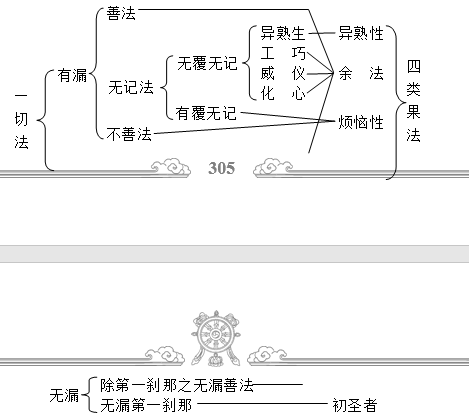

第二品 分别根
第二分别根品分二：一、根之安立；二、有为法产生之理。
甲一（根之安立）分六：一、根之自性；二、此处所说根之本体；三、根之分类；四、根之得舍；五、沙门四果以几根而得；六、具根之理。
乙一（根之自性）分二：一、根之功用；二、根之定数。
丙一、根之功用：
传说五根四功用，余四各具二功用，
五根八根彼一切，分具染净之功用。
有部认为：眼、耳、鼻、舌、身根具足四种功用，其余男根、女根、命根、意根此四种根具足两种功用，受用五根对染污法起功用，而信等五根以及三无漏根对清净法起功用。
“根”，梵语恩札，有自在、增上、功用之意。《自释》中译为“增上”，因增上较难理解，故于此解释成功用，也有妙用之义。根的法相，即对任何一法能起到不共的根本性作用。这也只是暂时的法相，如火也有不共同的功用，水也有不共的功用，那么为何不将水与火安立为根呢？本品中所讲到的根具有一种独特的功用，是从大致的角度将其安立为根的。
有部宗认为二十二根实体存在，而经部宗认为实体法并不存在，但二十二根确实具足，因此经部以上都承认二十二根。那么，是不是众生所有的界中只有二十二根？并非如此，佛是根据众生意乐而宣说的二十二根，实际上在众生的相续中具足很多不同种类的根，而包括二十二根在内的所有根完全可以含摄于六根之中。
二十二根包括眼根、耳根、鼻根、舌根、身根、意根、男根、女根、命根、身乐受根、身苦受根、意乐受根、意苦受根、舍受根、信根、精进根、念根、定根、慧根、未知当知根、已知根、具知根。二十二根分别具足何种功用呢？颂词中的“传说”表明，世亲论师首先按照有部宗的观点进行了介绍：眼、耳、鼻、舌、身五根具足四种功用，第一种是庄严的作用，五根具足才会对身体起到庄严的作用；第二种是具有保护的作用，如眼睛看到前面有狼、阿修罗，为了保护身体就不再前进，鼻根嗅到恶香时就会远离，舌头感受到辛辣则不愿再品尝；第三个作用是取境，如眼根通过取色境而产生眼识，耳根取外面的声音而产生耳识，也就是说各自根取各自之境，而产生各自的识；第四个作用是接受不共名言之因，不同的声音有不同的名言，这些名言要依靠耳根才能发现，而眼根所看到的各种各样的色法，如白色的碗、红色的柱子，这些均为不共名言。
有部宗对于五根所安立的四种功用，经部宗并非全部认同，他们仅仅承认“取境”这一点，对于其余三种均不承认，比如“庄严”的作用，经部认为庄严并不是眼根、耳根所起的作用，因为有部宗也认为这些根是色法，在外面根本看不到眼根的庄严，真正起庄严作用的应该是根依，比如眼睛的眼珠、露在外面的耳朵等，这些根依才可以对众生起到庄严的作用，因此有部宗认为根可以起到庄严作用的说法不合理；再比如“保护”的作用，实际上起到保护作用的主要是识，如果无有眼识，仅是眼睛看到，也不会判断出前面所出现的事物是否危险，根是没有辨别能力的，所以有部宗的根能起保护作用也不成立；另外，经部宗也不承认根是“接受不共名言之因”，比如见到红色柱子时，会产生一种红色柱子的概念，这些不共名言的因，并非根单独起作用，首先应该是眼根见到红色柱子，之后产生眼识——这柱子是红色，最后由意识在中间作辨别而了知红色柱子这一不共名言，所谓的根只起到了间接作用，直接名言的因应该是识，所以说“不共名言的因”也不合理。
“余四”，是指男根、女根、命根、意根，它们各自具足两种功用：有部认为男根与女根是除开身体的根依以外，具有心所相摄的一种实体，依靠它们首先能够辨别总的众生类别；其次，可以分辨众生之间的差别。命根，也即所谓的寿命，它有两个作用，第一个是可以同类结生；第二个是安住于同类，比如一个人，依靠人的寿命而安住于同人类的行列中。意根可以起到与根之本体相同的功用，也就是通过意识可以辨别总的万法；亦可起到结生的作用，人死亡时马上进入中阴或者入胎转生于后世，而完成这个过程就需要依靠意根。既然意根有结生作用，而寿命亦有结生的作用，那是不是有重复的过失呢？并无此过失。有部宗认为命根是即生当中结生到中阴，而意根是从中阴结生到本有。至于这些观点，经部宗也并不完全承认。
五种受用根以及八种清净涅槃根分别具有染污和清净之功用。受用五根——身乐受根、身苦受根、意乐受根、意苦受根、舍受根，它们可起到染污作用，也即由身乐受根与意乐受根增长贪心，由身苦受根与意苦受根增上嗔心，于舍受根中可以增上痴心，由于这些染心而增上了烦恼。但这也是不一定的，有些佛经中说依靠贪心可以增长信心，比如《毗奈耶经》中有这样一个公案：有一个比丘曾转生于天界中，因此，于现世中，他一闻到沉香的味道时，就会生起贪心，而这时，他马上就可以入于禅定之中。所以并不是所有众生皆如上所说，个别众生依靠善法方面的贪心，也可以增长禅定、智慧等，但多数众生也确是依靠乐受、苦受生起贪心和嗔心。有很多出家人也是依靠生活的苦受才对三宝产生信心、对轮回产生厌离之心，然后出家的，有些瑜伽士在遇到痛苦时马上转为道用，使原来的痛苦变成了清净心的因。最后八根具有清净的功用，因为通过有漏根——信、精进、念、定、慧，可以压制烦恼，而所有的无漏根——未知当知根、已知根、具知根，能够断绝烦恼的种子。
缘自境与缘一切，起功用故立六根，
身体具足男女根，以此立为男女性。
同类存在具染污，以及清净功用故，
承许命根与受根，以及信等为五根。
于获愈上涅槃等，起到功用之缘故，
立为未知当知根，已知根与具知根。
按经部观点，有色五根可以缘各自的对境，而意根则可缘一切对境，以此安立六根；男、女二根是所触之身识的所依，以此安立男性与女性；因起到同类存在、染污以及清净的根本性作用，故而安立命根、五受用根、信等五根；因对获得愈上涅槃起作用，而安立未知当知根、已知根、具知根。
世亲论师在本论结文时也说到颂词多数是克什米尔有部的观点，但有些颂词是站在经部观点来讲的，比如此处的几颂即是经部观点。
前面已经按有部宗观点对二十二根进行了宣说，这里就经部观点来对二十二根做一下简单介绍。
“缘自境与缘一切，起功用故立六根”，有色五根可以缘各自的对境，比如眼睛的对境是色法、耳根的对境是声音，以此种方式安立为根；意根可以缘过去、现在、未来的一切法。可以起到功用的缘故，安立为六根。
“身体具足男女根，以此立为男女性”，如果按有部观点，以根来区分男性和女性，那么色界的补特伽罗并不具足根，这样一来就有天人是非天人与非天女的过失，因此男性与女性不一定是由根来区分的。经部以上认为所谓的男根与女根，若从触觉的角度可以说是身根的一部分，它是执著所触之身识的所依，以此安立为男性、女性。
“同类存在具染污，以及清净功用故，承许命根与受根，以及信等为五根”，以同类存在的缘故可以安立为命根，因为具有染污的作用立为受用五根，对涅槃清净法起根本性功用而安立了信等五根。
“于获愈上涅槃等，起到功用之缘故，立为未知当知根，已知根与具知根”，对于获得越来越上的见、修、无学道以及涅槃等功德可以起到功用的缘故，安立为未知当知根、已知根、具知根这三种无漏根。
上述所说的三种无漏根是什么意思呢？以前从未了知的，在获得见道时已经了知，这时的根称为未知当知根。或者说，以前从未享受过世间之法，而在获得见道时已经享受到出世间法，这也可以叫做未知当知根。已知根是修道相续中存在的根，也即在见道时已经了知的境界继续串习、稳固，由于继续存在的缘故，称为已知根。获得无余阿罗汉的无学道时，按小乘自宗观点，此种根在获得之后，再也不会退转，是恒常的，这时的根就称为具知根。
表一：有部与经部关于二十二根不同功用观点之对照
|
有部宗 |
二十二根 |
经部宗 |
|
1、庄严；2、保护； 3、取境；4、不共名言之因 |
眼等 五根 |
缘自境 缘一切 |
|
1、同类结生；2、与根本体相同 |
意根 |
|
|
1、区分众生类别；2、分别之差别 |
男女二根 |
执著所触之所依 |
|
1、同类存在；2、同类结生 |
命 根 |
同类存在 |
|
染污 |
五受用根 |
染污 |
|
清净 |
信等五根 |
清净 |
|
三无漏根 |
增上愈上之功德 |
丙二、根之定数：
心之所依彼差别，留存以及增烦恼，
资粮清净尽彼数，如是诸根亦复然。
有部认为：成为心识所依以及辨认众生类别，并且观待众生存留而安立了烦恼性之基的前九根，而五受根是烦恼之本体；信等五根能够积累资粮，故为清净之基，三无漏根则是清净之本体。
万事万物中的很多法都可以起到根本性作用，这些为什么不安立为根？只将这二十二法安立为根是什么原因呢？
此处所说的数目并非破他边的数目——破他边的数目是有规定的，不能多也不能少，二十二根是根据特殊必要而安立的数目。佛陀时代，有位婆罗门叫做上星宁巴，当时，佛用智慧观察他的根基，为其宣说了二十二根，从此以后，以佛的这个教言为主而安立了二十二根。虽然很多法均可立为根，但只将其中最关键、最主要的个别法立为根，实际上二十二根，多也可以，少也可以。这是一个原因。
另一个原因是根据烦恼与清净之基、本体以及果而确定了二十二根。首先是烦恼之基，众生依靠心流转于轮回中，五有色根及意根是众生的心之所依，“彼差别”是指男性与女性的差别，“留存”，众生留存于世间皆依靠命根，以上这九根是烦恼之基；烦恼的本体即是受用五根，因为可以由其增长烦恼之故。其次是清净的基与本体，信等五根可以积累清净资粮，故为清净之基；三无漏根则是清净之本体。
或漂轮回之所依，生存受用十四根，
如是灭尽诸轮回，诸根即是余八种。
经部认为：观待漂流轮回的所依、产生、住存、受用而安立了前十四根，观待灭尽轮回安立了其余八根。
“或”是指经部宗观点。此颂词依经部观点，以流转与还灭的次第对二十二根进行安立：前六根是漂泊轮回的所依，因为它们是众生实体之基；而男女二根使众生得以投生轮回，原因是男女二根接触会真实产生意生身，而且眼根等也次第产生；在轮回中存留必须依靠命根，在住留期间，受用五根使众生分别感受各自利害，而有了苦乐的感觉，这些都是不清净的根，是轮回之根源。灭尽轮回的根有八个，即信等五根、三无漏根，其中信等五根是还灭之所依，因为依靠它们能够现前圣道；最初产生清净之法的是未知当知根，由已知根保持了
表二：二十二根次第安立的不同观点
|
有部宗 |
二十二根 |
经 部 宗 |
||||
|
烦恼之法 |
基 |
心之所依 |
眼等六根 |
众生实体之所依 |
所依 |
流 转 |
|
六根相差别 |
男女二根 |
通过接触产生意生身 |
生 |
|||
|
留存 |
命 根 |
生命相续不断 |
住 |
|||
|
本体 |
增长烦恼 |
五受用根 |
感受各自利害 |
受用 |
||
|
清净之法 |
基 |
积累资粮 |
信等五根 |
现前圣道 |
所依 |
还 灭 |
|
本体 |
无漏清净 之法 |
未知当知根 |
产生清净之法 |
生 |
||
|
已知根 |
修道连续存在 |
住 |
||||
|
具知根 |
享用现法乐住 |
受用 |
||||
已得之无漏法的存留，而受用清净之法的是具知根，因为它分别感受解脱之喜乐。
乙二（此处所说根之本体）分二：一、宣说五受根；二、宣说最后三根。
丙一、宣说五受根：
身非乐受即苦根，快乐感受即乐根，
三禅之心为乐根，余者即是意乐根，
心非快乐意苦根，舍受中间无二故。
身体非为快乐的感受即是苦受根，感受快乐者即为乐受根，三禅感受心乐的是心乐受根，其余二禅以下感受心乐受的是意乐受根，感觉心不快乐的是意苦受根，舍受根既不感觉快乐也不感受痛苦。
前面已经讲到了根的含义，那根的体性如何呢？从这一大科判开始，即对根的本体——五受用根及最后三根作一简略说明。
什么是五受根呢？“身非乐受即苦根”，此处的“身”，并非仅指身体，也可以说成是根依——眼睛、耳朵、鼻子、舌头、身体全部包括于身根之中，“身”可以是五种受用，也可以是五种色法。在五根群体中产生的所有不快乐感受就是苦受根，如身体接触粗糙的外境，会产生一种不快乐的感受，或者眼睛见不悦意的外境时，眼识在眼睛的色法群体中首先带来一种痛苦，然后这种痛苦通过意识来辨别——实际上眼识在取外境时，获得一种不悦意的外境，这叫眼识的痛苦。凡是五种色根于外境中得到的痛苦感受都叫做身苦根；在五根群体中得到的快乐感受就叫做身乐根。
“三禅之心为乐根，余者即是意乐根，心非快乐意苦根”，意受根有两种，即意乐受根、意苦受根，而其中意乐受根又可分为意乐根和心乐根两种。“三禅之心”是指第三禅定的心，虽然一禅以上都有一种寂止的快乐，但三禅以上的禅定非常稳固、不易变化，故称为心乐受根；“余者”指二禅以下，也就是说二禅以下感受快乐的心是意乐根，意乐与心乐虽然稍有差别，但其实都可包括于意识群体之中。“心非快乐意苦根”，在意识的群体中，不依靠任何根识而出现的痛苦，就是意苦受根，比如无缘无故心情很不好、很痛苦，这种痛苦完全是意识自己造作，无有任何其他外缘，与色法无关，均于意识上安立，因此称为意苦受根。
由上分析可以了知，在《俱舍论》中，意乐根与身乐根是完全分开的，原因是它们所依的根不同，即身受根依身体产生，意乐与心乐则完全是在第六意识上安立，因此给它们取了不同的名称。那舍受根又是什么样的呢？“舍受中间无二故”，舍是既无贪心也无嗔心的一种平等状态，也就是说，舍受根是一种不苦不乐的心态，它不分身体的苦乐与心的苦乐。为什么不分呢？因为身体的不苦不乐和心上不苦不乐的差别并不是很明显。身体与心上都有等舍的感觉，比如今天在喇荣山谷里生活得非常愉快，感觉像住在极乐世界一样，第二天就觉得这里像寒地狱，还是马上离开比较好，第三天时，觉得还可以吧，住也可以不住也可以，这种等舍不能说是心上的也不能说是身体上的，或者也可以说二者皆包括。那为什么说舍受可以包含身受与心受二者呢？这一点也是有理由的，心的苦乐感受多数是由分别念产生，而身的苦乐感受并不观待分别念，比如身上被割了一刀，这时即使心里再怎么想——不痛、不痛，还是很痛；再比如目犍连被外道打时，虽然有感受，但因为他没有造业的取，所以他不会去取执，这种舍受的苦乐是在无分别中自然而然出现的。
丙二、宣说最后三根：
见修无学道九根，即是无漏之三根。
信等五根、意根、心乐受根、意乐受根、舍受根，此九根在见修无学道中依次是未知当知根、已知根与具知根之本体。
在见道、修道、无学道中必定会具足九种根，这九种根也称之为无漏三根，即于见道时，这九根称为未知当知根；修道时意识所在的九种根称之为已知根；在无学道时称之为具知根。
那么，一位见道者相续中的未知当知根是哪些呢？可以九种都有，这需要观待其身份才能真正了知在其相续中有几种根，比如说，若以欲界身份获得见道，则于此圣者相续中具足信等五根、意根、意乐根，这七根叫未知当知根；若在无色界或第四禅获得见道果位，则六根加上舍受根，这七根就是未知当知根；如果在第三禅中获得见道果位，此圣者相续中就具有信等五根、意根、心乐受根这七根。已知根、具知根也是如此，其中信等五根、意根这六根在见道、修道、无学道圣者相续中是必定具足的，其他根不一定全部具足。最后三根表面看来只有一个根，但实际上是几个根综合起来于一位圣者相续中具足后，才将其称为未知当知根、已知根或具知根的。以上并非仅是小乘观点，麦彭仁波切在《智者入门》中也如此讲到过二十二根。
乙三（根之分类）分四：一、观待助缘之分类；二、观待因果之分类；三、观待本体之分类；四、观待所断之分类。
丙一、观待助缘之分类：
最后三根为无垢，七有色根与命根，
及苦受根即有漏，其余九根有二种。
未知当知根等最后三根是无漏根，眼等五根、男女二根、命根、身苦根、意苦根是有漏根，其余的意根、意乐受根、乐受根、舍受根及信等五根具足有漏无漏二种。
二十二根哪些是有漏根？哪些是无漏根？哪些是有漏无漏根？
最后三根——未知当知根、已知根、具知根，因其属于圣者相续中的根，故为无漏根。眼耳鼻舌身五根、男女二根、命根、身苦受根与意苦受根共十个根都是有漏根，因为它们皆是非道谛的有为法。
“其余九根有二种”，其余九根是指意根、意乐受根、乐受根、舍受根以及信等五根，它们是有漏与无漏两种，说这九根是无漏根，是观待圣者相续而言的，如信等五根在资粮道与加行道时，属于凡夫相续，这时的信等五根应是有漏根。《自释》中说：有些论师认为信等五根唯是无漏。世亲论师说，这是不合理的，佛还没有给五比丘说法时就说过：“有诸有情处在世间或生或长有上中下诸根差别。”由此可知信等五根并非唯是无漏，而应是有漏与无漏二种。为什么这样说呢？因为在世尊未转法轮时，还无有圣者出现，所以通过这一点可以说明信等五根应该是通有漏与无漏的。
丙二、观待因果之分类：
命根唯一是异熟，十二异熟非异熟，
除最后八意苦根；唯一意苦具异熟，
意余受及信根等，十根具不具异熟。
命根唯一是异熟之果，除最后八根及意苦根以外的十二根可以是异熟也可以是非异熟；具有异熟的唯一是意苦根，意根、其余四受根及信等五根通具异熟和不具异熟二者。
这一科判中，观待因、果来对二十二根进行分类。
所谓异熟（指异熟果），是指在即生中造作善业，后世就会成熟善业之果，在即生中造了恶业，后世就成熟恶业之果。这里首先讲二十二根是否是异熟，这主要是从根的本体上来讲的。如果它的本体是异熟，则应该具足三个特点：是非善非恶的无记法；属于有漏法；属于众生相续所摄。那二十二根中哪些是异熟果，哪些不是异熟果呢？
“命根唯一是异熟”，命根是有情众生得以于世间同类中存在的根，它唯一是异熟，比如欲界地狱众生的生命，实际上是前世造恶业，感得了今生的异熟果，但此生命不是善业也不是恶业，应该是无记法。或天人的生命，是由于前世造了善业，后世才感得天人的生命。生命的长短则根据各自的业力，即前世所造作的善恶业决定的，但也有特殊情况，《自释》中说：阿罗汉入最后灭尽定时，他会观察自己的寿命，若继续存在，对众生和自己有利还是无利？若有利则将财物供养僧众，然后入第四禅定发愿——希望自己的寿命延长；若继续住世对自他无有很大利益，即入第四禅定时发愿将自己的寿命缩短。既然如此，自己的寿命通过等持或长养等一些办法可以延长或缩短，那命根是不是异熟果呢？世亲论师亦在《自释》中作了回答：释迦牟尼佛于众生前欲示现涅槃，后经珍达优婆塞祈请后，延长了三个月的寿命，这样可显示佛于生死已得自在。实际上这些道理并未破斥生命是异熟，无论是念修密咒还是阿罗汉入最后灭定，延长生命其实也是一种异熟，这一点还是应该详加分析。
有十二根是异熟与非异熟均具有，是哪十二根呢？“除最后八意苦根”，即眼、耳、鼻、舌、身五根，男根、女根，乐受根、身苦受根、意乐受根、舍受根四根，意根。其中七有色根具有异熟生与长养生二者，如眼根由以前的异熟因造成，若想于本质上改变是不可能的，但今世通过敷眼药等可以使之得到长养，因而异熟、非异熟均有；四受根与意根既有异熟也有非异熟，其中快乐或不快乐是前世的异熟果，或善或不善则不是异熟，而由非善非恶所摄的诸如威仪与工巧是异熟。为什么要除去最后八根呢？因为它们自己本身是善法的缘故，所以不会是异熟之果。为什么除去意苦受根呢？在这里有部宗认为意苦受根必定是善法与不善法中的一种，无记法是不存在的，但麦彭仁波切说：心非善非恶之中，应该有一种苦受，这种苦受就是无记法。
二十二根中哪些具异熟（指异熟因），哪些不具异熟？在这里“是异熟”与“具异熟”是不同的，如“我是人”和“我具足人”有很大差别，“是异熟”是从果的角度讲，而“具异熟”是从因的角度讲。
“唯一意苦具异熟”，唯有意苦受根具异熟，因为它必定是有漏善法与不善法中的一种。
“意余受及信根等，十根具不具异熟”，意根和除意苦根以外的四受用根，以及信等五根既具异熟又不具异熟，其中意根与四受根中的有漏善业与所有不善业均是具异熟。此外，信等五根的无漏部分与无记法非具异熟——这里所说的无记法，比如处于无记状态而仅于口头做的念诵等，这不会产生后面的异熟果，所谓的异熟果必须是于善或恶业中成熟。信等五根的无漏部分非具异熟，其有漏善业则具异熟。有部宗认为，七有色根与命根不具足异熟，因为它们本身是一种色法，比如今生的眼根是前世的异熟果，但它不会变成后世眼根之因，如同花的种子，开完花之后不会由这朵花再去开花，由于这八种根本体为无记法，它们不会造善、恶业，但依靠眼根等产生眼识等就会产生贪心、嗔心或者信心，但这是不同的，从七有色根及命根的本体来讲是不会造业的。
丙三、观待本体之分类：
善法八根意苦根，即有善与不善二，
意受余者具三种，其余唯是无记法。
最后八根唯一是善法，意苦根通善与不善二者，意根以及其余四受根有善、不善、无记三种，其余眼等八根唯是无记法。
二十二根分别属于三性中的哪一种呢？首先是无漏三根，因属于见道、修道、无学道，必定是善法；信等五根亦唯以善性为主，所以此八根唯是善法，因为它们是有记法并能成熟悦意之果的缘故。
其次，具有善与不善两种的是意苦受根，此根对于做善事心不快乐是不善业，对于做不善业心不愉快则为善业，比如做一件坏事之后，心中感到懊悔，即为善业。意苦受根是不具有无记法的，演培法师的讲义中很详细地讲到了不具无记法的原因：无记法分为两种，即有覆无记与无覆无记，其中有覆无记是一种很欢欣的状态，而意苦根是忧愁的，此二者相违；无覆无记，如威仪、工巧等是自在而行的，而意苦根随分别心所转，故意苦根不属于此二种无记法。若按照尼洪派论师与经部观点来说，对于做无记法，心中感觉不快乐，也同样可以成为无记法，因而意苦受根也应当具有无记法，麦彭仁波切在《智者入门》中也是如此讲述的。所以，这里说意苦受根不具无记法应是克什米尔有部宗的观点。
善、不善、无记法三者皆具有的根是意根、身乐受根、身苦受根、意乐受根、舍受根共五根，此五根若与善法相应，则成为善业；若与恶法相应，则成为恶业；若与无记法相应就是无记法。其余的八根——七有色根与命根，是非善非恶的无记法。
除无垢根属欲界，男根女根苦根外，
属于色界有色根，乐根亦除属无色。
除无垢三根之外的其余诸根均属欲界所摄，除男、女二根及苦受根的十五根属于色界所摄，其上亦除去乐根，其余诸根均属无色界。
如果有人问：二十二根是属于三界之中的哪一界呢？
“除无垢根”，三无漏根不属于三界范畴，因为它们是无漏法。无漏法是不包括在三界范围内的，但这里要清楚一点——无漏法不属三界，而人的相续是属于三界的，比如一个欲界众生，在他相续中可以得到无漏法，无漏法本体不属三界，但是无漏法存留的所依属于三界。“属欲界”，除三无漏根以外，其余的十九根全部属于欲界，因为它们能够增上欲界的烦恼。
属于色界的十五根，即眼等五根、命根、意根、信等五根、身乐受根、意乐受根、舍受根。为什么不包括男、女二根呢？因为转生色界必须要远离贪恋淫行才可以，如果未远离贪爱淫行，就不能得到色界禅定，由此也就不能转生于色界。另外，男、女二根极不庄严，所以也不包括在色界之中。导致现在的世间如此枯燥的原因即是如此，也即均由众生业力所感现，前面也讲过，如“无始以来众生贪爱于此而积下了如是之业才形成的”。
色界为什么无有身苦受根与意苦受根呢？无有身苦受根。有部认为，色界中除不明显的放逸之外，无有如欲界当中的杀生、邪淫等明显恶业，所以也就不存在以因所造的痛苦。但经部宗认为，天人与阿修罗打仗等杀生的情况应该存在，但色界众生的身体如光芒般透澈，因此无有以缘所造的痛苦。色界也无有意苦受根，因为已经断除嗔恨，远离了九种害心，即对我曾经加害、正在加害以及即将加害三种，对我的亲友曾经加害、正在加害、将要加害三种，对我的怨敌曾经饶益、正在饶益、未来饶益三种。这九种害心在《入行论》中也讲得非常清楚，一般欲界众生心相续中对其他众生都会有一种嗔恨心，但这是不合理的，作为一个修行人来说，应该对所有众生具足一颗平等心，虽然现在所研学的是小乘法，但也应该以菩提心来摄持，这样一来，所谓的小乘佛法也会成为大乘的行持。
尤其作为一个大乘修行人，不应该仅仅是在理论上，而且在实际修行中，一定要时刻串习菩提心，否则想要证悟空性、大圆满是很困难的。但菩提心在一般人的相续中完全可以生得起来，我们每一个人应该想一想：到底什么是菩提心？菩提心究竟在自己相续中生起来没有？如果没有，那就应该依靠一些大乘论典，依靠上师教言，发愿在短时间内生起菩提心。平时也应该观察，当遇到过去害我的、现在害我的、未来害我的这些人时，菩提心到底具不具足，人身很难获得，即使空性见解暂时还未生起来，但只要菩提心已经在心相续中生起来，那么乃至生生世世成就佛果也并不是很困难。华智仁波切在《大圆满前行》中也说：“如果相续中生起了此菩提心，则修持任何法全部成为获得圆满佛果之因，所以我们应当一切时处唯以种种方便修学，使自相续生起菩提心。”我们每天早上起来的时候、平时上课的时候、晚上睡觉的时候，都应该观察：自己相续中到底有没有菩提心。还可以经常阅读《入行论释•善说海》和《佛子行》，法王如意宝说过：“无论是谁，只要读过无著菩萨的论典，一定会在相续中生起真实无伪的菩提心。”如果能够使菩提心于自相续生起，那此时已经变成了真正的修行人，今生的名闻利养对于我们来说一点也不重要，唯一追求的就是来世的快乐。所以菩提心非常非常重要，请诸位修行人一定要好好观察。
命根、意根、舍受根、信等五根是属于无色界的八根，五有色根、乐受根以及意乐受根不属于无色界，因为它们能增上无色界的烦恼。
丙四、观待所断之分类：
意三受根具三种，见修所断意苦根，
九根修断信五根，非为所断然三非。
意根以及三受根具足见断、修断、非所断三种；具有见断与修断两种的唯是意苦根；七有色根及命根、苦受根是修断；信等五根的无漏部分是非所断，其有漏部分属于修断；最后的无漏三根非为所断。
本颂从三个方面提出问题，二十二根中哪些是见断，哪些是修断，哪些是非所断？
“意三受根”是指意根、意乐受根、心乐受根、舍受根，它们具有见断、修断、非所断三种。为什么说此四根具有三种断呢？因为意根、心乐受根、意乐受根、舍受根属于有漏法时，若与见惑相应就属于见道所断；凡是有漏法，或是见断或是修断，此四根除见断以外的有漏部分即为修断；在见道时获得的未知当知根群体中所存在的意根、意乐受根、舍受根、心乐受根，应该属于无漏法，无漏法属非所断的缘故，此四根亦为非所断。
“见修所断意苦根”，属于见断、修断的只有意苦受根，因意苦根无有无漏部分，既然是有漏之法则必定是应该断的，当其与染污的见断相应时，则于见道断除，故称为见断；其余的有漏部分，则属于修断。
“九根修断”，属于修断的有眼等五根、男根、女根、命根、身苦受根。前面已经提到过“七有色根与命根，及苦受根即有漏”，既然属于有漏法则一定是所应断除的，那此九根为什么不是见断而唯是修断呢？这是有原因的。七有色根及命根属于色法，它们均为无记性，不具足染污的作用，故不是见断；因其属于有漏法，既非见道所断，则必定在修道时会断除，所以是修断。身苦受根与意苦受根不同，因其于五根群体中产生，不属于第六意识产生的范畴，无有染污的部分，所以不是见断；属于有漏法之故，所以在修道时需要断除。因此说眼等五根、男根、女根、命根、身苦受根唯是修断。
信等五根非为所断，因为信等五根在未知当知根等的群体中时，属于无漏法，所以非为所断。“然”字表示信等五根亦有一种不同的情况，也就是说，它也存在有漏的部分，此有漏部分亦是所断，因此五根属于善法，不具染污性，所以是修道应该断除的，比如阿罗汉最后要灭尽所有的我执，此时，信等的执著部分也会断除。最后三根是无漏法，故非为所断。
乙四（根之得舍）分二：一、得根之理；二、舍根之理。
丙一、得根之理：
欲界初得二异熟，化生并非是如此，
彼得六根或七八，色界六根无色一。
于欲界结生时有身根与命根二者重新获得，以化生转生则有重新获得六根、七根、八根的三种不同情况；色界结生时会重新获得六根；无色界则唯得一命根。
在三界中转世结生时，重新获得的有哪些异熟根？此处并非指所有的二十二根能获得的有哪些，而是作了一个限定，即重新获得的根之本体应为异熟性，这一点应该注意。
一个人转世结生到欲界时，眼根、耳根等还未形成，但身根已经形成，与此同时，命根亦已经形成，此二根是最早获得的二根。这时有人会想：意根与舍根也应该有。虽然有意根与舍受根，但它们并非异熟性，因其是转世烦恼性的，而异熟必须是无记法。那么，四生中是否全部如此呢？化生在结生时，诸根同时产生，根据不同情况，化生时会重新获得六根、七根或八根，如初劫时，庄稼自然成熟，人们无有贪心，因此无有男、女二根，只有异熟本体的六根，即眼等五根与命根同时获得；若具足男根或女根中任一根，则会有七根重新获得；若具男女二根，则共获得八根，当然，因为化生是善妙的生处，所以于善趣中是没有两性的，男、女二根同时获得的情况主要是指恶趣，如地狱一些化生的有情因为恶业现前，会具足两性。有些人认为：湿生也应该同时产生，比如夏天的一些小虫，它们可以于一瞬间产生。小虫从人们的肉眼来看，似乎是在很快时间内成熟的，但其实也是次第性具足的，并非如人们所见那样，它最早具足的应是身根和命根，眼根等是后来逐渐出现的。
色界天人是化生的，因此他们会同时获得眼、耳、鼻、舌、身五根以及命根。无色界因为没有其余的色等诸根，所以唯一获得的异熟根就是命根。
在其他的《俱舍论》注释中说，三界的寿命即为命根。还有些论师将寿与命分开——命起到同类存在的作用，而寿可以同类存在亦可以结生到下一世，也即属于不相应行。本论中，寿命是不分开的，但识与命则分得较清楚，如众生的意识属于识蕴，命则属于行蕴中的不相应行。大乘也如此承认，如这一世是人的命，而下一世转生为牦牛时，则为牦牛的命，但人与牦牛的相续应该是同一个。
丙二、舍根之理：
无色界中死亡时，命意舍根同时灭，
色界之中八根灭，欲界十根或九八，
次第而死四根灭，善心中亡加五根。
无色界中众生死亡时，命、意、舍受三根同时灭尽；色界众生同时灭尽八根；欲界中若顿时死亡则同时灭尽十根、九根或八根，若次第而死则灭尽身、命、意、舍受四根。若于善心中死亡，则再加信等五根。
无色界众生死时，在舍心的状态中同时舍去命根、意根、舍根。此处的“舍去”，并非如外道所讲的意根从此断绝，并不是这样，比如无色界众生死后，他暂时已经把无色界相续的根断灭，但在无色界根断灭的下一刹那马上结生中阴，这时是中阴的根；若他转世到欲界中，那么原来无色界的意根，已经变成欲界的意根。因此在这里，意根不断灭而命根换成不同种类的命。俱舍与因明的分析都是人在死后心不会灭尽，《释量论》中说：“即此世五处，是生余身因。”也就是说，这一世的五处是下一世五处之因。
这里所说的“灭”，并非现在一些人所认为的这一世过去，就不会再有后一世，不承认后世的这些人与不承认明天没有任何差别。这其中有很甚深的道理，不能认为前世过去就永远灭尽，就比如白天的显现灭尽时，但晚上的显现已经出现了。
色界众生死时，眼等五根、命根、意根、舍受根一共八根会同时灭尽。欲界众生若是顿时死亡，如飞机失事、突然暴病等，则有同时灭尽十根、九根、八根的三种情况：若无有两性，如石女，有八根灭尽，即眼等五根、命根、意根、舍根；若具足男、女根中的任一根，则同时灭尽九根；若为两性众生，则于八根基础上加男、女二根共十根。欲界众生中除化生以外，其余三生若次第死亡，则重新灭尽身、命、意、舍受四根。
以上所述均是于无记法与烦恼心中死亡的情况而言的。若以善心死亡的角度来说，则三界均需加信等五根，如无色界原本有命、意、舍三根灭尽，若于善心中死亡则再加信等五根，共八根灭尽，其余皆依此类推。
乙五、沙门四果以几根而得：
始终二果以九得，中二依七或八九，
因会故说有者以，十一根得阿罗汉。
沙门四果中预流果与阿罗汉果以九根获得，中间的一来果与无来果有以七根、八根、九根获得的几种情况。有些钝根者也会以十一根获得阿罗汉果。
“沙门”是梵语，义为行持善法者，这里直接译为小乘声闻果。小乘声闻果若广说有八果，即预流向、预流果、一来向、一来果、无来向、无来果、阿罗汉向、阿罗汉果，若归纳来讲即为沙门四果。本品中主要讲根的特法，沙门四果也是以根获得的——此处也并非说获得沙门四果唯一的因缘就是根，比如积累资粮、证悟人无我、断除欲界的种种烦恼等，这些皆为获得沙门四果的因缘，但这里着重宣讲的是沙门四果以哪些根获得。
沙门四果以多少根获得呢？“始终二果以九得”，沙门四果中最开始得到的果是预流果，最后得到的果是阿罗汉果，此二果由九根获得。有些论典中说预流果就是小乘见道，也即将世间凡夫的阶段断开而成为圣者，也就是在获得预流果时，所有的见断会完全断掉。这里见断的断除方法与大乘有些不相同，如大乘《六十正理论》、《现观庄严论》中所讲的大乘见道是一刹那性，如苦、集、灭、道四谛，每一谛都有四个行相，四谛共有十六行相，此十六行相在一刹那间证悟，即获得见道，这是大乘观点。而小乘认为，一位补特伽罗首先证悟欲界苦谛，然后是色界、无色界的苦谛，之后，先证悟欲界集谛，再证悟色界、无色界的集谛……这样的十六行相或说十六刹那是以次第性来证悟的。所以按照小乘观点，在心的十五刹那以前是凡夫，而在此十五刹那（即无间道）时，获得圣者果位，此时是未知当知根，到了第十六刹那获得修道时（即解脱道）获得已知根。在上述未知当知根与已知根群体中存在意根以及信等五根，若以一禅未至定的身份获得预流果，则具足舍根。由此可以得出，首先是十五刹那的未知当知根，然后是十六刹那时获得的已知根，这样已经具足二根，那么在此二根群体中存在的意根、信等五根以及一禅未至定所摄的舍根共九根应该是具足的。
为什么说是未知当知根与已知根呢？《自释》中说：“未知根在无间道，已知根在解脱道，此二相资得最初果，如其次第于离系得能为引因依因性故。”小乘认为，一位圣者相续中见断的烦恼已经全部断除，断除的这一部分是实体存在的，并将其称为离得。未知当知根能够引出断除见断的离得，但是此实体存在的离得无有所依是行不通的，而已知根所起的作用就是此离得之所依。这是小乘宗的观点，亦是宗派的一种说法，若从道理上分析，也可以讲得通，因为见断已经全部断除，那么，断除的部分应该是存在的，比如一个人以前做了坏事，现在已经忏悔清净，那清净的这部分有没有呢？应该有。这个清净的部分就是有部宗所谓的离得，这种得法自然而然出现，是实有存在的，如果将未知当知根比喻为驱除盗贼（如同断除见断之离得），那么可以将已知根比喻为关上门（即离得之所依）。
阿罗汉果也是以九根获得。在最后得果时，入于金刚等持，此时有修道所摄的已知根；获得无学道，也即阿罗汉果位时，有为法全部灭尽，此时现前的智慧叫灭尽智，由灭尽智所摄的有一个具知根，这时已经具足两个根；此二根群体中存在的意根、信等五根同时具足。若此阿罗汉依初二静虑正禅获得，则具足意乐受根；若依第三静虑正禅获得，则具足心乐受根；若依靠其他无漏定，如第四静虑正禅、无色定等，则具足舍受根。所以阿罗汉果是以已知、具知根及此二根群体中的意根和信等五根，还有乐受根、意乐受根、舍受根中的任意一者而获得的。与预流果相同，依靠已知根可以引出断除修断之离得，而具知根则为此离得之所依。
“中二依七或八九”，中间二果是指一来果与不来果，此二果以七根、八根或九根获得。其中一来果分为渐次证与顿超两种，渐次一来果者有两种情况：第一种是依七根获得，若以前行持寂止较多，则以世间道息粗相——观修上界的细微之相来获得，此时这位一来果者具足信等五根、意根、一禅未至定所摄的舍受根。为什么没有未知当知根与已知根呢？因为他是以世间寂止获得，属于有漏的范畴，故此一来果圣者依靠七根来获得自己的果位。第二种情况是依八根获得，以前修持胜观较多，故因为喜爱出世间道谛相而以已知根与上述七根获得。这里之所以没有说未知当知根，是因为这是渐次证，修道位的已知根较见道位的未知根要殊胜，因此将未知根舍去未说。顿超者，也即离贪一来果是以获得预流果的九根而获得的，但是获得离贪一来果的九根与获得预流果的九根有一点不同，也即欲界烦恼分为九品，其中预流果仍未断除第六品，而一来果已经断除六品烦恼。
不来果也有以七根、八根、九根获得的三种情况，其中渐次不来果者有七根得、八根得与九根得三种情况，而顿超则唯有九根得果一种。渐次不来果钝根者以有漏世间道获得不来果时，是以信等五根、意根以及一禅未至定所摄舍受根而获得；渐次不来果利根者若喜寂止，则于有漏世间道中依靠根本定获得不来果，因此具足意根、信等五根、舍受根、意乐受根这八根。其次，若渐次不来果钝根者以无漏出世间道得果，则以上述七根与已知根获得；渐次不来果利根者若喜胜观，于无漏出世间道中依靠根本定获得不来果，具足意根、信等五根、舍受根、意乐受根以及已知根共九根。顿超的离贪不来果则由意根、信等五根、未知当知根、已知根，以及意乐受根、心乐受根、舍受根三者中的任一者共九根获得，其中意乐受根、心乐受根与舍受根是根据此离贪不来果圣者所依之定的不同而任随其一，即若依第二静虑正禅则以前八根及意乐受根得果；若依第三静虑正禅，以前八根及心乐受根得果；若是依靠第四静虑正禅、中间未至定或三无色定，则以前八根与舍受根得果。
表三：
表四：
那么，既然这里说阿罗汉是以九根获得，而《入智论》中说“阿罗汉以十一根获得”，这二者不相违吗？“因会故说有者以，十一根得阿罗汉”，会有这种情况出现，所以并不相违。以九根获得阿罗汉的说法是就一次性而言的，有些钝根者会反复退失，小乘的阿罗汉果位以四禅的舍受等九根获得后，若这位阿罗汉从四禅中退失，则会依第三静虑正禅重新以心乐受根获得；若又从三禅中退失，则会依第二静虑正禅重新以意乐受根获得。这样就出现了以十一根获得阿罗汉果位的情况，即使再多次退失，亦绝对不会以更多的根获得阿罗汉，假如说这位阿罗汉又再次退失，那么就会以一禅未至定的舍根重新获得此果位，但舍根也已包括在前面的十一根之中，所以即使多次退失，也不会超出十一根。因为除这十一根以外再没有能获得阿罗汉的根。
乙六（具根之理）分二：一、必具；二、会具。
丙一、必具：
具舍受命及意根，其中之一必具三，
具身乐根必具四，具眼等根必具五，
具意乐根亦具五，具苦受根必具七，
具女根等必具八，已具知必具十一，
具有未知当知根，必定具足十三根。
若具足舍受根、命根、意根中的任一者，则此三者必定全部具足；若具身根与乐根中任一者，则必具四根；具足眼根等任一根，则必具五根；若具意乐受根也必定具足五根；具身苦受根则必定具足七根；若具男根或女根，则必具八根；若具已知根或具知根，则必定具足十一根；若具足未知当知根，则必定具足十三根。
必具，是指二十二根中任何一根具足时，其他必定会有几根具足。那么二十二根中任何一根具足时，必具的根有哪些呢？
舍受根、命根、意根三根是不可分割的，如果具足其中任何一者，则此三根一定全部具足。也就是说，一个众生具足命根，而不具足舍受根、意根的现象是不存在的，或者说一个众生具足意根，但不具足命根、舍受根这也是不可能的。同理，若具足舍受根，那么就一定会具足命根和意根，比如四禅以上的众生有舍受，那么命根、意根必定具足。所以具足此三根中的任意一根时，其他二根必定具足。
在这里有一个问题，有部宗认为在灭尽定时，心和感受已经灭尽，此时，命、意、舍三根是否全部具足，若三根并非全部具足，那为什么要说此三根不可分割呢？
在关于灭尽定这一点上，各个宗派都有不同的观点。首先，有部宗这样回答，灭尽定时真正的心与感受并不存在，但是也没有三根不俱全的过失。为什么呢？因为意根与舍受根虽然不存在，但此二根的“得绳”存在，也就是说灭尽定时虽无有心，但还有意根与舍受根的得绳，所以三根仍然是不可分割的全部具足。如果详细分析，这种说法实际是不能成立的，因为既然意根与舍受根的本体不存在，那么此二根的所谓得法如何存在呢？实际上也只是一种分别假立而已，在真正的教理面前无有任何可靠的依据。
随教经部认为，灭尽定时虽没有真正的心，也即意识是没有的，但意识的种子存在。这种说法是否可以成立呢？我们可以这样问他：所谓的种子，究竟是不是心的本性？若回答：是心的本性。既然如此，请你们不要说意识的种子，其实就是心，那么，在灭尽定时，心依然存在，这倒是合理的，但显然与你们自宗观点相违；如果说种子不是心的本性，是无情法，那这样一来，灭尽定于最后出定时，应从无情法中产生心识，若是这样，那你们的观点与顺世外道所承许的“心依靠地水火风等无情法而产生”的观点不谋而合，难道你们已经开始依从顺世外道的观点而作承许了吗？
比较合理的是随理经部和唯识以上等宗派的观点。随理经部说：灭尽定时，没有真正的心，但也并非全部的心灭尽，细微的意识是存在的。那么，既然有细微的意识存在，为什么要说已经灭尽了心识与受呢？既然已经灭尽了，为什么还会有细微的心存在呢？随理经部认为，经典所说的灭尽一切心识与感受，意思是说粗大的部分已经全部灭尽，而细微的部分并未灭尽，只是因为很少，所以就没有说，也就是运用了所谓的“低劣加否定”。如果承认这种观点是比较合理的，那唯识宗是如何承认的呢？他们认为，在灭尽定时，粗大的心并不存在，但于阿赖耶上有细微的种子，这个种子与阿赖耶识无二无别的方式存在，也就是说，心识在阿赖耶上以隐藏的方式存在。这种说法也比较合理。
如果二十二根中具足乐受根，那必定会具足四个根，即命根、意根、舍受根以及乐受根本身。这一点通过观察也是可以成立的，命、意、舍三根是必定具足的，在有了生命以后，才会有身体的乐受，若无生命，则乐受不可能存在。这里有人提出疑问：乐受根是一种很明显的快乐感受，而舍受根是不苦不乐的等舍感受，此二者如何同时具足呢？第五品中讲“三界中的随眠烦恼与哪些感受相应”时会说到，舍受根比较特殊，它可以与任何心与心所相应，比如植物人，虽然没有明显的快乐与痛苦，但从俱舍的角度观察，一定会具足舍受。此处以身乐受根为主，舍受根则以隐藏的方式或其他方式具足，这一点并不矛盾。若从因明推理来讲，有舍受根，不一定有身乐受根，但是有身乐受根时，必定会具足命根、意根以及舍受根。
具足身根也必定具足四根，即命根等三者加上身根本身。这里应该了知，有舍受根但无有身根的情况是有的，比如无色界众生，没有真正的身体，却可以有舍受根，反过来讲，身根具足时，则命、意、舍三根必定是具足的。具足眼根、耳根、鼻根、舌根中的任何一者，必定具足五根，也即在身根及命等三根此四根的基础上加其本身，比如具足眼根时，身根一定会具足，否则，眼根就没有了所依。再比如，在母胎时，身根具足，但眼根等还不具足。耳根等亦可依此类推。因此眼根等一定是在身根基础上具足的，那么，眼根等任一者再加身根以及不可分割的三根，五根一定会具足的。如果具足意乐受根，则身乐受根必定具足，再加上不可分割的三根，必定具足五根。具足身苦受根必定具足七根，也即身根、命根、意根、舍受根、乐受根、意乐受根以及身苦受根。如果具足男、女二根中的一者，则必定具足八根，也就是在前面苦受根等七根的基础上加其本身。颂词中“等”字的意思是说意苦受根以及信等五根具足时，也必定会具足八根，如果意苦受根具足，那在身苦受根等七根的基础上加其本身；如果具足信等五根，则于其上加命、意、舍三根，共八根，比如具足信根时，则精进、念、定、慧、命、意、舍七根再加上信根本身。同样，精进、念、定、慧亦如信根。如果是出世间修道者，则必定具足信等五根，还有不可分割的三根、身乐受根、意乐受根以及已知根本身，有十一根必定具足。如果具足具知根，如阿罗汉，也必定具足十一根，即前面所说的已知根以外的十根加上具知根本身。如果具足未知当知根，就必定具足十三根，此十三根有两种解释方法：第一种，即于十五刹那时具足未知当知根，十六刹那时具足已知根，此二根群体中的意根、信等五根以及不可分割的命、意、舍三根，因信等五根具足时必定具足意乐受根，而且欲界的补特伽罗必定具足身苦受根，这样一共具足十三根。或者按照蒋阳洛德旺波尊者的解释方法，因是无学道圣者，信等五根以无漏的方式必定具足，信等五根群体中必定具足意、意乐受、心乐受与舍受四根，在此基础上具足命根、身根、身苦受根与未知当知根本身共十三根。
丙二、会具：
无善之中具最少，具身受命意八根，
无色凡夫亦如是，舍受命意诸善根。
断绝善根者最少会具足身、命、意及五受根八种；转生于无色界的凡夫最少亦会具足八根，即命、意、舍三根及信等五根。
会具是指一根具足时，则同时会具足多少根。那二十二根中最少会同时具足几根呢？最少会有八根同时具足。
有两类有情在相续中最少会具足八根。第一类是“无善”，即断绝善根者，此类有情必定是欲界身体，若他渐渐死亡，则在相续中最少会具足身根、命根、意根以及五受用根这八根。第二类是“无色凡夫”，即转生于无色界的凡夫异生，在无色界中不会有邪见摧毁善根，因此颂词中的“诸善根”是指信等五根会具足，同时命、意、舍三根也会具足，所以无色凡夫亦具足八根。
具最多根十九根，不摄一切无漏根，
两性具贪之圣者，不摄一性二无垢。
欲界众生最多会具足十九根，不包括三无漏根；具贪圣者不包括男、女二根中的任一根以及二无漏根，因此，最多亦会具足十九根。
既然有情相续中最少会具足八根，那最多会具足多少根呢？最多可以具足十九根。会具足十九根的也有两类有情：第一类是欲界中两性者会具足男、女二根，而且若得而不失坏，也会具足眼等四根；诸根具全之故，会具足五受用根；因未断绝善根的缘故，会具足信等五根；在欲界中，只要具足了生命，就会具足身、命、意三根，故此类有情最多可具足十九根。还有一类是“具贪圣者”，具贪圣者以世间道未远离自相续的贪欲，他也会具足十九根，也即不包括男根与女根中的一者以及二无垢根。这里也分两种情况，此具贪圣者若是在见道位，则其通过世间道已经获得未知当知根，但是不具足已知根与具知根，又因为获得见道者必是一性，故除开男根或者女根，最多会具足十九根；如若此具贪圣者在修道位，因其为具贪者，故有漏法的根于其相续中全部会具足，而无学道的具知根与见道的未知当知根是不具足的，因此最多也只会具足十九根。
甲二（有为法产生之理）分二：一、真实宣说有为法产生之理；二、旁述因果及缘。
乙一（真实宣说有为法产生之理）分二：一、色法产生之理；二、非色法产生之理。
丙一、色法产生之理：
欲界无根无声尘，八种微尘一起生，
具有身根九物质，具有他根十物质。
欲界中既无根尘亦无声尘的最小微尘也是由八种微尘一起产生；若于八微尘上具足身根，则有九种物质一起产生；若具其他根尘则有十物质一起产生。
一切有部认为轮涅所摄一切法均为五事所摄，即色法、心法、心所、不相应行、无为法。大家都知道，无为法是无生的，因而也就不存在与何法一起产生的问题了，那么，其他法产生的方式是怎样的呢？可分为色法与非色法两种。
色法是如何产生的呢？有部宗认为根有色法方面的，亦有非色法方面的，其中属于色法方面的是一种尘，如眼根、身根等，这些都是尘。那在欲界中既无有根尘亦无有声尘的，如外界的山河大地，它最少也会有八种微尘一起产生，也即地、水、火、风、色、香、味、触八微尘。之所以不包括声音，是因为声音并非恒时具足，如砸一块石头时，声音会同时产生，但若不砸时，则无有此声音，所以有部宗认为，一个事物产生，最少会与八微尘同时产生。
如果在有情界，入胎时无有其他根而身根已经具足，则在八种微尘上具足身根，共有九种微尘一起产生；若眼等其他根具足，则有十种微尘一起产生。《自释》中并未说微尘，而是说“事”，也即以此可以代表事物。
对于有部宗的观点，经部并不表示赞同。有部认为八种微尘真正存在，而经部以上观点认为，地、水、火、风四大的界性虽然存在，但却不一定存在真正的本体，如佛经中说：“于木聚中，有种种界，界谓种子。”这里所说的“界”，实际只是一种作用而已。经部宗说，既然你们认为每一微尘皆具八种微尘，那所谓风的颜色又是怎样的呢？有部宗回答说：“此义可信，不可比知。”也就是说，依靠教理，可以确信风一定存在，但却没有办法真正了知。实际上，若真正对地、水、火、风进行分析，很难真实全部具足所有微尘。比如地大的法相是坚硬，而水大的法相是湿润，如果拿一块铁来说，它应该具足地、水、火、风四大，在这块铁是固体时，可以很明显地感受到地大的坚硬，但却很难感受它的水大，若通过高温，铁溶化变成液体时，可以感受水大的湿润，但却不能感受到地大的坚硬，既然如此，后来溶化的液体铁是原本就存在水，还是现在才变成液体的呢？有部宗认为，只是原本不明显的现在变明显了。既然如此，这个“不明显”的水在固体铁的本体中究竟存不存在？如果不存在，如何变成明显？如果存在，那也没必要说明显或者不明显。而且，有部宗认为微尘可以分两种：一是最细微的，即成实的无分微尘；一是积聚的微尘，即地、水、火、风积聚于一处的微尘。
那么，下面可以继续问有部宗：你们所谓的微尘，不论是最细微的微尘，还是积聚的微尘，同时产生的地等八种微尘是在同一位置上，还是在不同位置上？对于这种观察，有部宗也只会说：“可信，不可比知。”我们也可以这样进行观察，比如地的微尘，它是否具足八种微尘？若具足，则地具足八微尘，水也具足八微尘，这样一来，你们所说的微尘应该不仅仅是八种微尘，应该有过多微尘的过失。对于这样的问难，有些论师站在有部观点上回答说：其实并没有这种过失，如果详细分析，一个法产生时要有八种微尘具足，那么，八种微尘中的第一个微尘具不具足八种微尘？若不具足微尘，则不能成为有为法；若具足微尘，则八八六十四微尘，会有微尘过多的过失。但我们并不是从这一角度来讲，而是按照种类说的，比如地的微尘主要以地大为主，水的微尘是以水大为主，因此根本没有微尘过多的过失。
麦彭仁波切在《智者入门》中根据各种不同观点对八种微尘作了很明确的宣说。实际上，经部以及《大乘阿毗达磨》都认为，世间的所有事物不一定要用八种微尘来分别，因为有些法只具足一种微尘，其他微尘不一定具足，比如光，它只具足色而无有香、味、触；再比如风，有声音与所触，却没有色、香、味；在烟囱里冒的烟则色、触、味全部具足。因此，经部以上认为，有些仅具足一尘，如光；有些具足二尘，如风；有些具足三尘，如烟；有些具足四尘，如沉香。任何一种法，只要在因缘聚合时，就一定是会产生的。唯识宗认为一切万法皆为心的幻变，但在所显现的外境这一问题上，也是承认《大乘阿毗达磨》的观点，即世间任何一法产生时，不一定全部具足八微尘，但其作用应该具足，比如一个铁球，此铁球用火烧时，则会具足火尘，若变成液体时，即会具足水尘。在不同因缘的作用下，每一法的微尘都会不断地发生变化。
丙二（非色法产生之理）分二：一、略说；二、广说。
丁一、略说：
心与心所定一起，有为法相或得绳。
心与心所必定一起产生；一切有为法与其法相会同时产生；相续所摄之所得法与得绳一起产生。
既然色法会与八种微尘一起产生，那非色法如何产生呢？心与心所必定一起产生，有部宗认为心与心所异体，但实际上，心与心所之间的关系虽然是一本体，但反体却并不相同，如果是真正的异体，那离开心所也可以产生心，或者离开心王可以有心所产生，但这种情况一定是没有的。那为什么说心和心所必定一起产生呢？此二者互为俱有因之故。
另外，有部还认为，任何一法与此法之法相二者一起产生，也就是说，他们认为有为法与其法相异体，并且是同时产生的。经部宗以上认为，法与法相二者并非他体，比如人的法相是知言解义，但除人以外并没有一个单独的知言解义存在。《量理宝藏论》中说：有人认为法相实有，但法相实有不能成立，所谓的法相，只是一种言词，是认识万法的方法，是一种途径，除此以外，并无有实质存在。
“得绳”是有部宗非常重要的一个观点，如同在牦牛背上以绳索捆住所驮物品，这个绳索即他们所认为的得绳，它并不是真正的法。一般情况下，不属于相续的所得之法多数无有得绳，但也并不是所有不属于相续的得法均无得绳，也有特殊情况，比如三无为法，它不是由相续所摄，因众生的相续由三界所摄，而三种无为法不属于三界，所以非相续所摄。但相续中却可以得到无为法，比如将来获得阿罗汉果位时，相续中可以获得抉择灭，这时，虽然具足得法，但却不会在相续中产生得绳，因其本体是无为法，无有产生，颂词中的“或”字就是指这种情况。如果是属于相续的所得之法，则与自己同时的得绳一起产生，比如以前在相续中没有出离心，现在通过上师加持生起出离心，出离心在相续中得到的同时，有部认为有一种得绳——出离心的得绳同时也会生起来，若此得绳不具足，那相续中是无法得到出离心的。
丁二（广说）分二：一、相应法产生之理；二、不相应行产生之理。
戊一（相应法产生之理）分四：一、类别决定之分类；二、不定之相应；三、似相同之差别；四、似不同之一体。
己一（类别决定之分类）分二：一、略说；二、广述。
庚一、略说：
五种心所之地法，彼等各不相同故。
决定的心所有五种，它们互为异体，因各自缘不相同之故。
心所若详细分有四十六个心所，《大乘阿毗达磨》中讲到五十一个心所，这些心所归纳起来，可以包括在遍大地法、大善地法、大烦恼地法、不善地法、小烦恼地法以及不定地法这六类之中，此颂首先讲前五类，即决定地法。“地法”，意思是一种氛围或机缘，比如产生烦恼时，有一种氛围与烦恼会同时产生，若无烦恼则烦恼的地法不可能产生；若未生起善法，则善法的地法不可能产生。
这里既然对心所作了详细的宣说，那随眠品中所要讲到的贪心、嗔心、傲慢、怀疑等为何不包括在五种地法当中呢？此处所要宣讲的是决定性心所，而贪心、嗔心等不决定会生起，比如对于某一个对境，有时会生贪心，有时又会生起嗔心，没有一个决定性，而五种地法当中的善心所或烦恼心所，在某种环境产生时，这种氛围也必定会产生。
本论将心与心所之间的关系与差别分析得非常细致，作为一个修行人，此二者之间的关系一定要清楚，否则，不论学大圆满还是学大手印，都是很困难的。《俱舍论》是一部大的论典，有些人刚开始学的时候，很有兴趣，但是到后面就开始生起厌烦心了，就像华智仁波切在《莲苑歌舞》中讲的一样：闻思犹如蝌蚪身。意思是说头很大很大，尾巴却很小很小。这样是不行的，无论闻思哪一部论典，都必须下工夫、持之以恒。
庚二（广述）分五：一、遍大地法；二、大善地法；三、大烦恼地法；四、不善地法；五、小烦恼地法。
辛一、遍大地法：
受想思欲以及触，智慧忆念与作意，
胜解以及三摩地，此等随逐一切心。
受、想、思、欲、触、智慧、忆念、作意、胜解以及三摩地这十种心所可随从一切心而产生。
“遍”是指所有的心与心所。十遍大地法，是指这十种心所是不可分割的，比如产生信心时，则此处所讲的十种心所于信心群体中会全部具足。《大乘阿毗达磨》认为只有五种心所必定具足，称其为五遍行法，即受、想、思、触、作意，此五遍行法遍于任何一心，凡是有一个心与心所产生时，这五种遍行法一定会产生。世亲论师在《自释》中也讲到：“传说如是所列十法诸心刹那和合遍有。”甲智论师在他的《俱舍论》讲义中说：世亲论师在《自释》中所提到的传说，其实也是对有部宗不满的语气。意思是说，世亲论师认为心与心所非常细微，以其各自相续来分别尚且很难，更何况是一刹那间俱时存在，比如刚刚产生一个分别念，则于此分别念中，按有部观点应具足上述十种遍行法，但若想对每一种心所都进行细致分析的话，确实很困难，既然如此，若想于分别念中辨别出一瞬间所具足的十种遍行法岂不是更加困难！《自释》中作了一个比喻：一味药有很多成分，食用这味药时，其中的每一种成分以舌根无法感受，只是一种很难吃的味道而已，但实际上这其中有很多的成分，同理，产生一个分别念，但却根本无法发觉这十种遍行法的存在。不过有部认为，虽然不能发觉，但并不表示这十种遍行法不存在。若按照《大乘阿毗达磨》的观点，凡是心与心所任何一法产生时，五种遍行法一定会以不可分割的方式存在，而其他五种地法主要是执著对境方面的五种心所，不一定全部具足，比如禅定时，前五种遍行法一定会具足，但胜解和忆念不一定会具足。所以，大乘与小乘之间的观点有很大不同，大家应仔细辨别。
十种遍行心所的法相是什么呢？受与想前面已经讲过，它们虽然属于心所，但因其是争论之因、轮回之因，故而安立于五蕴之中。
思是于对境产生动摇，也就是说，在看见一个对境时，会出现分别和无分别两种动摇，但无分别的动摇很难发觉，而有分别的动摇会发觉，因为心里在想，或者心中想执取这个对境，比如刚开始学藏文文法时，看见“阿”字时，心中会产生动摇，想要去念“阿”，但并未发出“阿”字的音，如同最初的气流一样，这就是思。
欲是对于外境的一种希求心。麦彭仁波切在《智者入门》中，每一个心所都讲了它的本体及作用，欲的本体即希求对境，而它的作用就是精进。大家应该会有亲身体验，如果对某件事非常有兴趣，那一定会精进用功。因此，不论闻思哪一个法，都先要有一个欲乐：“这个法对今生来世非常重要，我一定要认真地学。”这样一来，他对这个法一定会精进的。如果想“这无所谓，还是好好享受好一点”，如此，根本不会精进闻思、精进修持。所谓的精进并不是表面的一种形式，主要看他的内心——心里到底有没有一种想要希求的欲乐。《现观庄严论》中讲发心的体相时说：发心是利他的，是成佛的一种欲心。有论师说发心是一种心所，有论师说是心王，这方面的辩论非常大，那发心是不是心所呢？想成就佛果是一种希求心，也即此处所讲的欲。
触是指境、根、识三者聚合而享用对境。此处的“触”并非所触，所触是从外境色法角度讲的，而这里的触是一种心所。有些论师说，它应该属于一种单独的心所，比如遇到一种外境而正在享用时，根、境、识三者具足即为触的本体，它的作用是产生意识与受。
智慧可以辨别诸法，它的作用是遣除怀疑。
忆念，不忘所缘，也即回忆，对以前的事能够清晰忆念。
作意是指心专注分别所缘之境。因明中所讲到的作意与此是否相同呢？不相同。此处的作意是于对境专注的一种心所。那作意与思、欲有何差别呢？思心所是在见到外境后所生起的一种动摇心态，就好像吸铁石接近铁屑时，铁屑就会开始动摇一样，但此时并未直接执著；动摇之后会专注于外境，这时即为作意；专注之后想要获取此外境，这就是欲。
胜解是于对境之功德已经获取认可，然后想要得到的一种心所，也可称之为定解。有些论师说，通过教理生起一种不被他夺的定解，即是这里所说的胜解，比如前世后世是否存在？因果是否存在？通过闻思，在相续中已经生起了一种定解：因果不虚，前世后世必定存在。这样于自相续中生起不被邪知、邪见所夺取的一种定解。若简单地说，“这是柱子，这个柱子能够撑梁”，这种定解在自相续中生起而且不会被任何人所转，这就是胜解。
等持，即心能够一缘专注。既然都是“专注”，那与前面所讲的作意有何不同呢？作意仅仅是指专注于外境，等持则不仅专注而且不动摇，所安立的反体角度不同，也就是说从安住的角度可以安立为定。
其实，分别念是一种有限的境界，在每一个心所中，有忆念的、辨别的，也有能接触的，但这些心所根本无法察觉。有部宗说，“不能察觉”不代表“不存在”，比如昨晚所吃的饭，今天可能想不起来，但想不起来是不是没有吃呢？实际确实是吃过了。因此，自己的心并不可靠，不能相信它。按有部观点，只要产生一个心所，上述十种遍行法即会全部具足，虽然它们的本体相同，但以反体不同的方式来存在，这些依靠分别念根本无法了知。
佛经中也说：“一切有情即识之一相续。”既然有这么多心所一起产生，那会不会有一个众生拥有两个相续或者变成众多众生的过失呢？并无有此种过失，佛经所讲的是指不会出现两种心王，或者说，明显的分别心不会两种同时产生，而不同类的无分别心或者不同类的心所，在一人相续中却可以产生，所以，不会有一个众生有两个相续或一个众生拥有许多心识的过失。众生真正的主心是一体的，但是在此主心中有很多不同的反体，即执著外境的不同侧面，全知麦彭仁波切在《中观庄严论释》中对这个问题作了广泛阐述，比如眼睛看见一个花色的布匹，在这匹花布上有白色、红色、蓝色等等，有很多形象不同的对境，那执著白色的心，是否执著蓝色呢？若从对境角度来讲，这一点完全可以否定；若从有境角度讲，虽然只有一个心识，但从不同的侧面而假名安立了如同对境一样多的心所，并将其作了分类，并不会因为你见到了花色布匹上的各种颜色，而导致你也变成了有种种心所的众生。
辛二、大善地法：
信不放逸与轻安，舍心知惭及有愧，
二种根本与无害，精进恒时随善生。
信心、不放逸、轻安、舍心、知惭、有愧、无贪、无嗔、无害、精进十种恒常会随顺一切善心而生。
大善地法，即不论何种善心生起，均会有十种善心同时出现。大善地法有哪些呢？
一、信心：从烦恼心与随眠烦恼中得以清净。信心包括清净信、意乐信、不退转信，也即所谓的诚信。对善法方面的信心至关重要，经中说：“信为道源功德母。”如果没有信心，相续中不会生起任何功德，若具足信心，而且也经常串习，比如对上师三宝不生邪见，唯以诚信顶礼、供养，这种功德是其他功德无法相比的。如果能经常以对治的方法改变自相续，信心会自然而然生起的。
二、不放逸：珍爱功德。在平时的行为中，经常观察三门而作取舍，对治懈怠，时时刻刻也不被懈怠、散乱所转，这样的一种心态就是不放逸。《自释》中，世亲论师对不放逸的解释为：“不放逸者，修诸善法。”《学集论》中将不放逸定义为：“身口意恒时谨慎，不背善道。”不为外缘所转的不放逸心非常重要，《入行论》中引用了很多教证来说明这个问题，如《文殊庄严国土经》中，本师释迦佛告舍利子：“菩提道根本就是不放逸。舍利子，放逸者，声闻之道亦不能成就，更况无上菩提正道。”《月灯经》中说：“如我所说诸善法，谓戒闻舍及忍辱，以不放逸为根本，是名善逝最胜财。”所以，一个修行人时刻保持一种不放逸的心态十分重要。
三、轻安：内心堪能，可以分身轻安与心轻安两种。身体若获得轻安，在做任何事时，身体均可以堪能，一般欲界众生在未修成禅定之前，身体十分沉重，这会导致自己特别懈怠；心若轻安，则做一切事皆可任运自在，比如想坐禅时，可以很快入定，想念诵时，可以专心念诵，不论是散于外境还是使心内收，皆不会随他而转。但有些人并非如此，应该认真闻思的时候，总是想到外面去跑，到了外面又觉得还是住在学院里面比较好，这就是心未得到轻安的过患。
四、舍心：不昏沉、不掉举，也不会被外缘所转，自在而行。
五、知惭：恭敬功德与具功德者。
六、有愧：畏惧罪业。
一般来说，“知惭”、“有愧”都会连在一起说，但它们其实是有区别的，《大乘阿毗达磨》中说：以自己和出世间法为理由即知惭；以他人及世间法为理由即是有愧。
颂词中，“二根本”是指大善地法中的第七个无贪及第八个无嗔。此二者并不是从没有贪心与嗔心的角度讲的，而是从贪心与嗔心的对治来讲，也即属于对治性的善法。
九、无害：不损恼他众。平时有些人总是想害别人或想损恼别人，但无害心是指不仅害心没有，反而有一种对治之心，它实际是对治害心的一种善法心所。
十、精进：喜爱善法。在《迦叶品》中说：业可包括于身、语、意之中，而身语之业则可包括在意业之中。若心里喜爱善法，那行为一定会精进的，《入行论》中说：“进即喜于善。”在《菩萨地论》中也对精进下了定义：“为摄善法及利有情，其心勇悍无有颠倒，及此所起三门动业。”
辛三、大烦恼地法：
痴逸不信怠沉掉，恒随烦恼性而生。
大烦恼地法有六种，即痴、放逸、不信、懈怠、昏沉、掉举，其恒随一切烦恼心而产生。
大烦恼地法有六种：
一、愚痴无明：不懂业因果等道理。比如通过教证理证均可以证明“业和因果是存在的”、“前后世是存在的”，但一些世间人对这些道理根本不能了知，这就叫愚痴无明。
二、放逸：不放逸的违品。自己在善法方面，心不堪能，身口意无有任何约束。
三、懈怠：精进的违品。有些修行人非常了解自己的特点，他们经常会对别人说：“我很懈怠。”由于自相续中有懈怠的这种心所，因此，也自称为“懈怠者”。
四、不信：信心的违品。对上师三宝的功德一点也不相信，有时不仅不信，而且还会进行毁谤。
五、昏沉：神志不清。有些人经常是迷迷糊糊的，不论是听课还是背书，不知不觉就会出现昏沉而入于睡眠之中。
六、掉举：身心向外散乱。
这六种大烦恼地法恒时会随从一切烦恼心而生，但因轻重程度的不同，有些心所不能觉知，其实都是产生的。
辛四、不善地法：
不善地法有两种，即是无惭与无愧。
不善地法是指无惭与无愧。
无惭与无愧是惭与愧的违品，此二者随从不善心产生，不会随从其他心产生。
我们平时经常会将不善、烦恼、业全部混在一起，但若以佛教观点进行详细分析，其实三者之间有一定的差别。现在世间也有一些心理学，如果将佛教与世间心理学进行对比分析，就会发现，佛教对于前世后世、业因果等分析得非常细致，若能潜心研究、实地修持，必定会对此中所涉及的道理产生坚定不移的信心，这就是佛教的优越性。
辛五、小烦恼地法：
怒恨谄嫉恼覆吝，诳骄害即小烦恼。
怒、恨、谄、嫉妒、恼、覆、吝啬、诳、骄、害即是小烦恼地法。
小烦恼地法有十种：
一、怒：见到作害的对境而生嗔或苦恼之心。怒与嗔并不相同，怒无有嗔恚之心，只是稍微有些不愉快的一种心态。
二、恨：愤怒后屡生恼心。有一种想要报复的心，比如对一个人生嗔恨心，总是放不下，想要报复。这种心很不好，特别是金刚道友之间，一定要和睦相处，历代的传承上师也说：金刚道友最好不要出现矛盾，如果出现不愉快，应该马上忏悔，不能一直怀恨在心。
三、谄：心术不正之狡猾，是想要达到目的而表现出的一种狡猾之心。
四、嫉妒：不能忍受他人圆满。见到他人获得名誉或利益，心里无法忍受。
五、恼：紧紧执著罪业。自己做了错事，若有人劝阻，心里便会产生极大损恼之心。
六、覆：隐瞒罪过。自己做了一件坏事，但是害怕别人知道后，会损坏自己的名誉，而将其极力隐瞒。作为修行人，如果发现自己做了不应做的事，一定要发露忏悔，否则，隐藏在自己心里，一定会障碍自己的修行。
七、吝啬：不向他众施予法财等，是与布施相违的一种心态。
八、骄：自高自大。对于自己的种姓、财富等产生极大满足，贪执不放。
九、诳：明明无有功德反装作有功德而欺骗他众。谄与诳也有差别，自己本来有很多过失，不愿将其显露，这叫谄；自己本来没有功德，却假装自己有功德，以此谋取名利，这叫诳。
十、害：损恼他众。有此心态者，一定不会对众生具足悲心或者同情心。
之所以将这十种心所称为小烦恼地法，是因为它们具足了三种条件，即所断种类渺小、相应助伴渺小、所依来源渺小。由于比较细微，在见断时很难断除，只有修道时才能断除，故而称为所断种类渺小；相应助伴渺小，是指十种心所仅与意识相应，与其他身识等不相应，范围比较渺小；所依来源渺小，在所有的烦恼中，十种心所只与无明相应，除无明以外，与其他法均不相应。因具足上述三个条件而称为小烦恼地法。
己二、不定之相应：
随逐欲界之善心，具有寻思伺察故，
共有二十二心所，有者加上后悔心。
随逐欲界的善心，具有寻、伺之故，共有二十二心所产生；有时还加上后悔心，如此则有二十三心所。
下面是不决定心所。不定心所共有八种，即寻、伺、后悔、睡眠、嗔怒、贪、我慢、怀疑，如世亲论师说：“所谓寻伺悔，睡眠嗔怒贪，我慢与怀疑，此八称不定。”那么，这些不定心所随从哪种心产生呢？若是一位欲界众生生起善心，则会有二十二种心所同时产生。二十二种心所是指十遍大地法，此十心所遍行于一切心所之故；十大善地法，是善心之故；寻、伺二者，因欲界是有寻有伺之地。欲界众生有时会出现后悔心，此时则再加上悔心共有二十三种心所同时产生。
不善无杂二十生，具见亦有二十种，
四烦恼与嗔怒等，后悔其一二十一。
不善心与不共无明相应则有二十种心所产生，与后三邪见相应亦有二十种心所；四根本烦恼、怒等十小烦恼地法及后悔，若具其一则均会有二十一种心所产生。
前面已经介绍了欲界善心，那不善心是什么样的呢？此不善心若与不杂无明相应，就会有二十种不善心产生。无明分为两种，共同无明和不共无明。其中共同无明是指遍于烦恼地、不善地等的一种无明的本性，如圣天菩萨说：“如身中身根，痴遍一切住。”也就是说，任何一种烦恼均带有无明的成分；不共无明，指无有其余烦恼，唯是无明，因此称为不共。此处的不杂无明即指后者。任何一种不善心与这种不共无明相应，那就会有二十种不善心产生，即十大遍地法、六大烦恼地法、二大不善地法以及寻、伺二者。
不善心若与最后三种见——邪见、见取见、戒禁取见相应，则亦会有上述二十种心所一起产生。既然与见解相应，那不是应该有二十一种心所产生吗？为什么只有二十种心所呢？见解分为五种，即坏聚见、边执见、邪见、见取见、戒禁取见。前二种见解是有覆无记法，此二者虽然是产生烦恼的根本因，但其本身并非烦恼；后三种见解——邪见、见取见、戒禁取见无有单独的心所，是假立存在的，无有本质性的心所范围，因此可以包括在十遍大地法的智慧之中，只是此智慧已经变为邪慧了，故不会出现二十一种心所。
六种根本烦恼中的贪、嗔、慢、疑四种以及怒等十种小烦恼地法，还有后悔心，这些不善法中如果具足其中任何一者，那么，都会有二十一种心所产生，也即前面所说的二十种心所及其本身。六种根本烦恼中没有讲到邪见与无明，因为此二者于前面介绍同时产生的二十种心所当中已经包括，故于此不说。那这里为什么要将贪、嗔、慢、疑，还有小烦恼地法以及后悔作单独说明呢？因为这些烦恼必定不会一起产生，比如说生起贪心的同时，不会有嗔心产生；生起贪心时，亦不会有怀疑产生；贪心不会与小烦恼地法中的谄诳、嫉妒等一起产生；或者小烦恼地法中的任何一者具足时，其他心所也不可能产生，因此贪心、嗔心、傲慢与怀疑不安立在上述地法中，原因即是如此。
有覆无记具十八，无覆则许有十二，
睡眠不违一切故，任何之法皆加彼。
有覆无记法具有十八种心所，无覆无记则有十二心所，睡眠与一切心所均不相违，因而可以加在任何一法之上。
无记法分有覆无记与无覆无记两种。有覆无记虽是烦恼，但这种烦恼未直接对解脱起到障碍作用，欲界中的有覆无记法有两种，即坏聚见与边执见。坏聚见又名萨迦耶见，也即身见，是指将五蕴执著为我；将五蕴聚合假立之我执为常有或断灭，即为边执见。色界中所有的烦恼均属有覆无记法，因为色界以上虽有烦恼，但以此种烦恼不会造作恶业。与坏聚见与边执见相应的有覆无记心有十八种，即十遍大地法、六大烦恼地法以及寻伺二者，其中见解已经包括在十遍大地法中，原因与上述相同。
与幻心等四种相应的无覆无记法有十二种，即十遍大地法与寻伺二者。欲界中无覆无记心有四种，即幻心、工巧心、威仪心以及异熟生心。因其属于对解脱不会作障碍的一种无记心，故称其为无覆无记心。
按本论观点，睡眠是一种分别念，按因明的观点则属于一种错乱识。睡眠按其发心的不同，可通于三性，即以善心状态睡眠则为善法；以恶心状态睡眠即为不善法；若以无记心入于睡眠则属无记法。因其从属于善、不善、无记一切法的缘故，因而与任何一法均不相违，故于任何一法均可加上睡眠，比如有覆无记心，若加上睡眠，则具足十九种心所，其余均可依此类推。
以上是欲界俱起的心所，下面介绍色界以上俱起之心所。
后悔睡眠诸不善，第一静虑中无有，
殊胜正禅寻亦无，二禅以上伺亦无。
色界第一静虑中无有后悔、睡眠及诸不善法，第一静虑殊胜正禅中也无有寻，到第二静虑以上则无有伺。
在色界一禅无有后悔、睡眠以及诸不善。“诸不善”是指唯是不善法的嗔以及小烦恼地法中的怒、恨、嫉、恼、覆、吝、害七种心所，还有不善地法的无惭、无愧二者，若不断除上述十种不善心所则不会转生一禅。一禅中具足贪心，它虽然属于烦恼，但并非不善业，而是有覆无记法，因依靠它不会直接造业，所以，天人的行为与欲界众生的行为是不同的，欲界众生只要生起贪心，就属于不善业当中。无有悔心，是因为一禅以上的天人无有意苦受。一些西方论师以及经部论师认为：意苦受也可以是无记法。但不论是无记法还是恶法，所谓的悔心在色界中都是没有的。一禅也无有睡眠，因其属于心内收的一种状态，一般依靠段食的欲界众生才会睡眠，而色界一禅以禅悦为食，心一内收即成等持，因此不会有睡眠。
一禅分为未至定、粗分正禅与殊胜正禅三种。在一禅殊胜正禅时已经远离对寻的贪心，因此无有寻，但在一禅中有谄诳，如本论第五品中说：“欲界一禅有谄诳，梵天欺惑马胜故。”二禅以上乃至无色界均不存在谄诳，因为无有主尊的缘故。也无有伺，因已远离了对伺的贪心。
己三、似相同之差别：
无惭即是不恭敬，无愧则是不畏罪。
喜为信心敬知惭，此二欲色界中有，
寻为粗大伺细微，我慢胜他之贡高，
骄傲即是于自法，生贪之心至极点。
无惭是指不恭敬之心，无愧是不畏惧罪业。喜爱也即信心，恭敬就是知惭，此二者于欲界与色界中存在；寻是一种粗大心识，伺是对事物的细微认识；我慢是指胜过他人的贡高之心，骄傲是对自法生起极大的贪心。
上述所讲到的心所中，有几类很难辨别，此处就将相近的四类心所作了区分。
首先是无惭与无愧。人们经常都会说：“这个人无惭无愧。”将无惭与无愧二者合在一起，但此二者的含义其实并不相同。其中无惭是指不恭敬功德与具功德者，如对佛经以及具戒律的功德者，不仅心中不恭敬，而且还说一些不恭敬的言词，做一些不恭敬的行为，这就是无惭之人；无愧是指不畏惧罪业，比如一个人经常造作恶业，但却一点也不担心所需承担的后果，并且也不认为这是恶业，这种人也可以称之为无愧者。无惭主要从自己与出世间法的角度来讲，无愧则主要从他人与世间法方面讲。
其次是喜爱与恭敬。有些弟子对上师到底是恭敬还是喜爱？有时即使他自己也分不清楚。实际上，喜爱可分为两种，即染污性的喜爱与非染污性的喜爱，染污性的喜爱是不清净的，比如爱自己的儿子、爱自己的妻子，这种喜爱无有任何功德；非染污性的喜爱是清净的，即指信心，比如对佛陀、上师以及具功德者生起欢喜心。恭敬也即前面所说的知惭。《自释》中将喜爱与恭敬分为四类：是喜爱非恭敬者，即自己的妻子、儿子等；是恭敬非喜爱的，如他人的上师以及具功德者等；是恭敬又是喜爱的，如自己的上师以及父母等；非恭敬亦非喜爱的，除以上三者。喜爱与恭敬也可分为两类，一是对人的喜爱与恭敬，二是对法的喜爱与恭敬。颂词中说“此二欲色界中有”，是指对人的喜爱与恭敬只在欲界与色界中有，在无色界中是没有的，因为无色界中无有色法的缘故；对法的喜爱与恭敬则于三界中皆有。
第三类是寻与伺。寻是指心对事物本体的粗大认识，伺是指心对事物差别的细微认识。麦彭仁波切在《智者入门》中说：见到远处有瓶子，这是一种粗大的认识，也就是寻；如果对瓶子详细分析，好或不好、有无裂缝等，这就是伺。寻和伺二者会不会在一个人的相续中存在呢？若一个相续中粗、细二者皆产生，这不合理；若此二心所不是于一个相续中产生，那前面讲俱起的心所时，为什么会加上寻、伺呢？世亲论师在《自释》中说，有论师是这样回答的：如水面浮一酥油，阳光照射时，此时的酥油既不会因为阳光的炽热而融化，也不会因为水的清凉而凝固，同理，一心之中的寻与伺，只是粗细之别，在对某一外境认识时，可以有粗与细两种不同的作用，因此不会相违。对于此种说法，世亲论师并不表示赞同，他认为寻与伺是引发身、语行为的一种动机，为什么这样讲呢？因为无色界以上无有的缘故，如经中说：“有寻伺，方有语言。”比如看到经堂里来了很多人，这是一种粗大的认知，但仔细观察这些人——此人是南方人、彼人是北方人，引发这种行为的动机就是伺。甲智论师说：世亲论师驳斥的其实是有部宗的观点，因为他认为有部宗的观点不合理，所以站在经部的角度对其进行了驳斥，为什么说寻和伺都可以产生呢？从相续的角度，一心之中可以产生寻与伺二者。
第四类是慢与骄。慢是指认为自己的种姓与功德等胜人一筹，由此而产生的一种傲慢；骄是对自己的相貌、勇敢等法的贪执之心达到极点，这里的骄只是认为自己非常好，并没有胜过他人之意。颂词中的“极点”，意思是非常圆满；甲智论师认为，极点指的是欢喜心，也就是在心中对自己的功德产生一种极大的欢喜心。
己四、似不同之一体：
心意与识实一体，心与心所及有依，
有缘有形与相应，相应亦有五种也。
心、意、识三者只是名相上不同，实际是一体；心、心所、有依、有缘、有形、相应也只是名称不同，实际意义上无有差别，其中相应也可分为五种。
关于心、意、识三者，各个宗派的观点也不尽相同。有部宗认为，心是思维，意是作意，识是缘外境的心识。经部宗认为，心指积累一切习气；意指一切心识的所依，故称为所依；识成为执著外境的能依，故称为能依。或者说，过去的是心，现在的是识，未来叫意。唯识宗认为，心指的是阿赖耶识，意是指染污意，识是指六识聚。无垢光尊者在《大圆满心性休息大车疏》中说：“分别显现色等相之分为识，首先认识对境的粗大总相者为心，尔后观察它的差别并持续起贪嗔痴任何一种之心所称为意。《菩萨地论》中云：‘现外境为识，初分别为心，后伺察彼差别之心所即为意，此三者相应具足，即以遍行之性存在。’”
心也有很多不同名称，诸如心所、有依、有缘、有形、相应，这些也只是名称不同，实际上都是一个意思，因为心与心所的所依是六根，故称为有依；其所缘是六境，故称为有缘；能了知蓝色等相，故为有形；以五种相应平等而住，因此称为相应。那么，何为五种相应呢？即根依相应、所缘境相应、蓝色等相相应、时间刹那相应与每一物质相应。其中根依相应，即心王依靠眼根时，心所也必依靠眼根，此为相应；所缘境相应，如心执著外境——柱子，此时与之相应的心所也必定执著外境柱子，不会执著他法，故为相应；蓝色等相相应，心与心所相应所取之境必定是同一形相，如取一蓝色柱子之总相时，此心与心所执取之境必定均是此蓝色柱子，若心与心所取境之总相不同，则不成为相应；时间刹那相应，指心与心所同一时间内生，又于同一时间灭，若心于第一刹那产生，而心所于第二刹那产生，也就不成为相应；每一事物相应，如见蓝色柱子时，令心王获得乐受，则心所也同样获得乐受，若心王获得乐受，而心所获得苦受，则为不相应。
表五：
|
有部宗 |
经部宗 |
唯识宗 |
||
|
心 |
思维 |
积累习气 |
过去心 |
阿赖耶识 |
|
意 |
作意 |
所依 |
现在心 |
末那识 |
|
识 |
缘境之心 |
能依 |
未来心 |
六识聚 |
前面讲到了四十六种心所，《毗奈耶经》中讲了二十四种心所，若加上本论所讲四十六心所，即是小乘认为实有的七十种心所，再加七个假立心所，即为七十七心所。《大乘阿毗达磨》中讲到五十一心所，也即五遍行法、五别境法、六种根本烦恼、二十种随烦恼、十一种大善地法、四种不定法。
表六：
表七：
戊二（不相应行产生之理）分三：一、略说；二、广说；三、摄义。
己一、略说：
一切不相应行者，得绳非得与同类，
无想二定命法相，名称之聚等亦摄。
不相应行包括得绳、非得、同类、无想、无想定、灭尽定、命、生、住、衰、灭、名称、语言、文字十四种，破和合僧不相应及自性不相应之法也可含摄其中。
有部宗认为，世上的事物千差万别，不仅有无情法、有情法，还有许多此二者中不包括之法，即不相应行法，它们不可能与心和心所相应，是独立之法，可包括于行蕴之中。
小乘《俱舍论》有十四种不相应行，《大乘阿毗达磨》分二十四种不相应行。麦彭仁波切在《智者入门》中也讲到二十四种不相应行——除上述十四种以外，还有异生性、流转、定异、相应、势速、次第、时、方、数、和合性。这些不相应行，有部认为是真正实有之法；经部宗认为无情法与心法不同份位时所安立的名称，即为不相应行；唯识宗以上认为阿赖耶识上与心识不同的份位，如命根——众生生存时于心识周围存在一种不同的份位，再如时、方、数等任何事物皆有一种不同份位，这种不同的份位就取名为不相应行。颂词中“亦摄”的意思是指破和合僧不相应行与自性不相应之法，其中破和合僧不相应行，也即乃至破和合僧未恢复之前，整个娑婆世界众生的相续中皆不会生起善根，它有一种制止众生善根生起的实法，这就是不相应行。
十四不相应行中的得绳是有部宗很重要的一个观点，大乘虽然也承认得绳，但大乘所承认的得绳与有部宗的实有得绳完全不同。有部认为得绳应该是实有的，就像大象与货物之间的联系是绳子，出家人获得别解脱戒，所得之戒律与出家人之间有一种能够联系的实法，这就是得绳；若无得绳，出家人与戒律之间无有任何联系，这样出家人与戒律之间很容易脱离，所以他们认为中间一定要有一个得绳，如同货物不从大象背上掉下来是因为有绳子联系一样。
有部宗为什么要创立得绳这个观点呢？《自释》中说：“契经言圣者于彼十无学法以生以得以成就故已断五支。”经中说圣者阿罗汉已经获得十无学法，因经中有一个“得”字，故而有部宗即在宗派中安立了“得”这个概念。但是经中有千千万万的字，说佛经中有“得”字，就安立“得绳”，这是不合理的，所以有些论师也以此原因认为，《俱舍论》不是佛或者阿罗汉说的，而应该是凡夫人造的。
《俱舍论》中最难理解的就是“得绳”，大乘认为，戒律与补特伽罗之间即使不存在得绳作联系，也同样可以存在戒体，因此并不承认有部观点。有些人说：“我是学大乘的，这些是有部宗的邪见，我不用学。”但这是不合理的，在学习时，可以去学，也可以与大乘观点进行对比，虽然大乘并不承认这种观点，但我们不能说“这是邪见”，麦彭仁波切在《智者入门》中也说：大乘不能认为“不相应行”、“得”等全部是有部宗的邪见，否则我们也很难获得别解脱戒了，因为别解脱戒是要获得的，若认为“得”是邪见，那是不合理的。因此，在自己思维或者给别人讲法时，不要说“这是有部宗的邪见”，可以说“这是有部不同的观点”、“大乘不承认这种观点”，但它并不是一种邪见，所谓的邪见是将众生引入恶道的一种见解。因此修习大乘的人，可以不承认有部宗的观点，但千万不要说这是有部宗的邪见，因为有部宗的论师创建这样一个宗派是有密意的，而且，有很多众生依靠这样的“得绳”已经获得了解脱，难道这样的观点应该属于邪见吗？实际上，在佛经中也讲到了七百个不相应行，既然佛经中也提到这么多不相应行，那我们也不应该认为有部的观点是邪见，而且《俱舍论》中的某些观点与现在一些心理学家、生物学家的说法也比较相似——他们认为生命实有、时间实有；一些历算学家、天文学家也认为时空应实有，否则白天、晚上无法分析，东、南、西、北无法区分，这样一来指南针也起不到作用了。但有些人认为，所谓的方向其实是假立的，只是一种观待法，比如说我住在某地时，观待西方人来讲，我住在东方，观待东方人来讲，我住在西方，仔细观察时，方向根本不能成立。在认识和判断一个事物时，应该抱持一种正确的态度，而且现在正在学习某一种观点时，就应该站在这一宗派的立场上，将这种观点详详细细地分析。
己二（广说）分七：一、得绳非得；二、同类；三、无想；四、二定；五、命；六、法相；七、能说。
庚一（得绳非得）分二：一、真实宣说得绳非得；二、宣说彼之特法。
辛一、真实宣说得绳非得：
得有新得与具得，得绳以及非获得，
均为自相续所摄，二种灭法亦复然。
得分为新得与具得两种，得绳与非得均属自相续所摄，抉择灭与非抉择灭亦是如此。
得绳是指所得之法对于补特伽罗来说能具有之物质，也即这种具有就是得，并且应该是实有的。得绳总的来分应有五种，若归纳则可含摄于新得与具得二者之中。其中新得分未得新得与失后新得两种。一、未得新得，即以前从未曾得过之新得，如以前从未喝过酸奶，但是今天获得了一碗酸奶，酸奶是所得，而我与酸奶之间有个得法，它是实有存在的，若无有此得法联系，就不可能得到酸奶；再比如在获得见道的第一刹那，以前从未获得过也未失去过之得，以及得到后的所得之法——得之得，叫做未得之新得。二、失后新得，以前得到过却失毁了，后来又重新获得。所有众生就如同瓶中蜜蜂，在三界中一直不停地流转，于此流转过程中，一定已经获得过色界禅定，但由于并未断除根本烦恼，而将已获得之禅定退失，后来通过世间道的修持，再次获得色界禅定，这种得可以被称为新得，由于以前得到但中间退失，而今又重新获得，故而称作失后新得。这样第一刹那的相续叫新得，而第二刹那以后就叫做具得了，具得也分两种，即持续具得与本有之具得。一、持续具得，指第二刹那以后的得绳持续产生，也可分为未失新得之具得与失后新得之具得两种，如凡夫人第一刹那获得见道，这叫未失新得，然后第二刹那间以后持续产生，就叫未失新得之具得；又如欲界众生生起色界或无色界禅定之后，第一刹那间获得为失后新得，第二刹那以后持续存在的得绳即为失后新得之具得。二、本有之具得，无色界中最高的有顶烦恼需以对治的无漏智慧或对治的禅定来摧毁，但凡夫从未生起过，因为凡夫相续中生起出世间无漏法时，虽然可以摧毁有顶烦恼，但此时已经成为圣者而不再是凡夫，凡夫以世间道也根本不可能断除有顶烦恼，因此说，有顶的这种烦恼，任何一个凡夫人都未摧毁过，也即所谓的本有之具得。按本论观点来讲，能够摧毁有顶烦恼的禅定，在凡夫相续中从未产生过，原因是出世间的见道智慧不会于凡夫相续中生起，若生起，凡夫即已变成圣者，而世间道中无有摧毁有顶烦恼的对治，因此将这种得绳叫做本有之具得。
非得是指所得之法对于补特伽罗来说不具有的物质，比如某补特伽罗想获得别解脱戒或密乘戒，但这些戒律在其相续中没有得到，按有部观点这种没有得到也是一种成实法，即非得。非得也分两种，即未得之非得与不具之非得。未得之非得，如生起无学道第一刹那时有顶之烦恼的非得，也就是说一个人通过修行后生起阿罗汉无学道的第一刹那，而获得此果位时，有顶烦恼在凡夫相续中无论如何也得不到，也即这种烦恼是非得——未得之非得。不具之非得，比如一位补特伽罗，以前获得了四禅或无色界的禅定境界，后来依靠种种因缘从禅定境界中已经退失，退失后，此补特伽罗已经没有禅定的境界，这就叫不具之非得；此补特伽罗退失禅定的第二刹那以后也是不具之非得，与前面所讲的得绳相同，此处虽未作详细分析，但意思也就是说，在第二刹那以后，那位补特伽罗相续中已经不具足禅定，因此叫做不具之非得；凡夫未生起无漏道时的非得亦为不具之非得。
表八：
表九：
作为《俱舍论》中最重要的观点——得与非得，一定要了知其中的关键，也即所得之法、得绳之本体、得者补特伽罗三者之间的关系一定要清楚，比如我——补特伽罗是得者；在我相续中获得别解脱戒，别解脱戒即为所得之法；而我与别解脱戒之间的联系，有一种实有之法，即为得，若无有此实有之得，则所得之法——别解脱戒也不存在。
所得之法有自相续所摄与他相续所摄两种，若一位补特伽罗相续中具足他相续的得绳，有部说这是不合理的，比如获得阿罗汉果位时，已经获得了无漏智慧，其自相续中的得绳已经获得，若其具足他相续之得绳，则已经具足了凡夫相续中的得绳，这是个很大的过失。有部认为，不论这位补特伽罗在欲界还是在色界，得绳都应该由其自相续所摄，而相续未摄的如衣服、首饰等无情法不存在得绳，为什么不存在得绳呢？因为它是自他共同之法，如一碗米饭，它现在虽然属于我，过一会儿来了乞丐或者其他人，这碗米饭有可能就被其他人吃掉，因此它不是得绳。其他讲义中也说：项链、耳环等是共同所摄之法，不属于自相续，所以不是所得之法。有关得绳属于自相续的观点，世亲论师在《自释》中说，你们有部宗为什么说这种成实得绳是自相续所摄呢？有部宗回答说：经中已经很明显地宣说，任何补特伽罗若具足十法，则其已断除五种法，也即获得了无漏果位，因此得绳必须是自相续所摄。世亲论师引用《转轮王经》的教证驳斥这种观点：转轮王已经获得七轮宝。若按你们有部宗的观点——因为在佛经上有个“得”字，就认为有得绳，并且由自相续所摄的话，那么七轮宝也应属于得绳的范围内，为什么呢？佛经中明明已经说了，转轮王已经获得七轮宝，这里亦有“获得”二字，七轮宝当然也应该属于转轮王自相续所摄。这时，有部宗说：此经中所说的获得是从转轮王对于七轮宝可以自在随转的角度而言的，这是不可思议的一种获得，与我们宗派所说的得绳并不相同。
以上已经对有为法之得绳作了鉴别，无为法却不一定如此，抉择灭与非抉择灭不属三界，因其不为相续所摄，但此二者的所破是由相续所摄的，因而二灭的得绳应该存在，并且亦为相续所摄。比如圣者相续中的烦恼通过智慧抉择后已经摧毁，这里的所破烦恼，属于相续所摄，这是从抉择灭的角度而言的；某人见到前面色法时，后面的色法对于他来说是一种非抉择灭，因为不是通过观察而不见的，或者，见南赡部洲的色法时，北俱卢洲的色法对他来说是一种非抉择灭，这种非抉择灭对他来说是一种所破，此所破属于自相续，而这种所破的部分应该属于无实法。因此，从所破来讲，二抉择灭应该属于自相续所摄。
辛二（宣说彼之特法）分二：一、得绳之特法；二、非得之特法。
壬一、得绳之特法：
法有三时得三种，善等得绳为善等，
摄彼得绳属彼界，不属三界有四法。
所得之法有过去、现在、未来三时，由此得也有三种；善等之得绳也分别为善等；所得之法属三界中任何一界，则其得绳亦属彼界；不属三界所摄之得有四种。
有部认为，过去、现在、未来的三个时间实有，未来的法以没有顺序的方式存在于现在；过去的法则是有顺序、有前后的，就像小朋友排队一样，大前天的法、前天的法、昨天的法也以排队的方式存在。只不过，未来的法于现在时以未来的方式存在，过去的法于现在时以过去的方式存在，而现在则以现在的方式存在。但此种说法，大乘并不承认。
有部既然认为过去、现在、未来三时成实存在，则所得之法必定于过去、未来、现在三时存在，所以“得”也应该是三时成实存在，比如过去所得之法的得绳有过去、未来、现在三种，也即过去的过去得绳、过去的现在得绳、过去的未来得绳。满增论师在讲义中说，所得之法无论是在过去、在现在、在未来，其得绳都是不同的——有些得绳在所得之法的前面出现，有些得绳与所得之法会同时出现，有些得绳在所得之法的后面出现，比如一群牛，牛王会走在所有牦牛的前面，而小牦牛则在所有的牦牛后面走，同样，得绳亦是如此。再比如今天中午十二点生起一个烦恼，此烦恼是所得之法，它在十二点钟出现，但此烦恼的部分得绳在十一点时已经出现了；有些得绳在十二点时与所得之法同时出现；而另有一些则在十二点之后出现。有些讲义中说，有些得绳如牛王一般提前出现，有些得绳如身体与影子一样同时出现，有些得绳则如同小牛一样，在所得之法的后面出现。因此，从现在的角度来讲，现在的法及与之同时的得绳，是现在的现在得绳；现在的法与过去的得绳，是现在的过去得绳；现在的法与未来的得绳，是现在的未来得绳，一个法有可能会同时出现三种得绳。实际上，如果详细观察，这些所谓的得绳也如同虚空中打疙瘩一样，是不能够存在的，但有部却认为它们是实有的。经部不承认三时成实，他们只认为现在成实存在，而过去已经过去了，未来还未产生，此二者不可说为成实，所以认为三时成实的唯一是有部宗。
得绳若以三性来分别，则所得之法若是善、不善、无记法，得绳也依次是善、不善、无记法，也即所得之法是善法，如获得信心，其得绳也是善法；若所得之法是恶法，如破戒，其得绳也是恶法；若所得之法是无记法，如饥饿，则得绳也是无记法。
从三界来讲，所得之法若是有漏法，则所得之法属于何界，其得绳也属于何界，也就是说，欲界得法之得绳属于欲界，色界得法之得绳属于色界，无色界得法之得绳属于无色界；另外，欲界的身体若获得上界之法，则得绳也属于上界，比如获得四禅境界，那即使身体属于欲界，其得绳也应该属于四禅。所得之法若是无漏法，比如不包括于界之中的二灭（无为无漏）、道谛（有为无漏），它们之得绳有四种不同。其中非抉择灭的得绳由获得非抉择灭的补特伽罗之身体属于何界而决定，可以通于三界，即欲界中所得之法的得绳属于欲界，色界所得之法的得绳属于色界，无色界所得之法的得绳属于无色界；唯一不属无漏。抉择灭分凡夫之抉择灭与圣者之抉择灭两种，若是凡夫以世间道获得抉择灭，则其得绳属于色界、无色界所摄。如果是圣者，则有以世间道与出世间道获得抉择灭两种不同，若以世间道获得，则断除烦恼而获得得绳之离得也有两种，有漏离得属于色界与无色界，无漏离得不包括于三界之中；以出世间道获得的离得及道谛之得绳均为无漏法，因而皆不包括于三界之中。
有学无学非三种，所断非断许二种，
无记得绳一起生，不摄神通与幻变，
有覆色法亦如是，欲界色前无有生。
有学道、无学道之法的得绳也属有学道、无学道，非有学无学之法的得绳则有三种；所断法之得也是所断，非所断法之得有所断与非所断两种；无覆无记法的得绳与法一起产生，有覆无记法之得绳亦如此，欲界有表色前无有得绳产生。
下面进一步分析得绳之特法。所得之法可以分为三种——有学道、无学道及非有学非无学之法，这样一来，得绳也可分为三种，即有学道之法的得绳属有学道，无学道之法的得绳属于无学道，非有学非无学之法如二灭、道谛及一切有漏法，它们的本体不属于有学道与无学道，其得绳则是有学道、无学道、非有学非无学三种，其中从见道到阿罗汉向之间的有学道之抉择灭——一来果、预流果等之得绳属有学道；无学道的抉择灭，如阿罗汉相续所摄之法的得绳属无学道；另外，非抉择灭、有漏法以及通过世间道灭尽烦恼而获得的抉择灭得绳，既不是有学道也不是无学道。
若从见断、修断、非所断的角度来分析得绳，则法是所断，得绳也是所断；法是修断，得绳也是修断。若法是非所断，得绳则根据情况不同而有所差别，所得之法为非所断的，有二灭及道谛，其得绳有修断与非所断两种，如果通过世间道而获得抉择灭，则此抉择灭之得绳是有漏善法之故，应为修断；以世间道获得抉择灭的无漏离得，以出世间道获得的离得，还有道谛，因其全部为无漏法，非为所断的缘故，其得绳也是非所断。
前面说过：“法有三时得三种。”因法三时存在的缘故，得绳也三时存在，但这也不一定。若所得之法是无覆无记法——不是善也不是恶，也即对解脱不起障碍之法，因为它的发心不如善心与恶心强大，力量十分微弱，所以其得绳与所得之法同时产生；上述无覆无记法中不包括天眼通与天耳通以及幻心，因为神通与幻心的修行时间较长，故有过去、未来、现在三时之得绳，其中的幻心是欲界众生通过天人的心修幻化，如同密法中常依靠梦心来变化一样，在醒觉位也可依靠上界之心幻化，依此幻心可云游四方；另外，释迦牟尼佛教法下有一位马胜尊者，他的威仪非常调柔，这并非是即生修持得来的一种威仪，而是生生世世修持清净戒律导致的，所以，虽然这种威仪是一种无覆无记法，但也具足过去、未来、现在三种得绳；还有经过长久串习、技艺娴熟的能工巧匠，也具有三时之得绳。不仅无覆无记的得绳与得法一起产生，而且色界中有覆无记心所引发的有表色，如一禅的身体和语言，得绳也与得法一起产生。
欲界中由善法引发的有表色，如磕头；不善有表色，如杀生，此有表色之得绳在有表色产生之前是不生的，比如有人杀了一个人，这种不善有表色的得绳是何时得呢？与有表色同时得。在这个人还未举刀时，得绳是没有的，而他杀完人以后，这种有表色的得绳也看不到，也就是说，善、不善有表色之得绳是同时产生的。有部认为有表色的得绳是无情法并且是随心而产生的，在未发心之前不会产生。
实际上，在心所——烦恼心所、善法心所以及不相应心所中，很多也都是前面产生得绳的；而且如果能断之心特别强烈，则所断法之得绳可以提前获得；再比如获得阿罗汉果位时的智慧非常强烈，那他所断除的烦恼障之得绳，也可提前出现。
壬二、非得之特法：
非得无覆无记法，过去未来均三种，
非得摄于欲界等，无垢非得亦复然，
圣道非得许凡夫，得彼移地将退失。
非得属于无覆无记法，在过去未来二时中各有三种；非得属于三界之中，无漏非得亦是如此。具足圣道之非得即承许为凡夫，此非得通过获得圣者果位与移地将会退失。
非得是指一种障碍所得之法产生的成实法，正因为它的存在，而导致了补特伽罗不能得到所得之法。那么非得是不是也可以像得绳一样，具足善、恶、无记法三种呢？非得的本体均为无覆无记法，为何如此呢？如果善法之非得为善法，那么异生凡夫具足无漏法之非得，无漏法本为善法，若所得之法是善法，而非得也是善法，这样一来，凡夫相续中也有无漏善法，非得是善法故；而持邪见者、断善根者相续中，因具足正见之非得与善法之非得，亦就分别成为具足正见者和成就善法者等等，有很多过失。非得也不是烦恼性，比如阿罗汉的相续中具足烦恼的非得，若烦恼之非得为烦恼，则阿罗汉相续中也应具有烦恼，为什么呢？因其相续中具足烦恼之非得的缘故，这样一来，也就不会获得阿罗汉果，有众多过失。
既然“法有三时得三种”，那非得是否也具足过去、现在、未来三时呢？在这一点上，非得与得不同，过去有过去的过去非得、过去的现在非得、过去的未来非得，未来亦有未来的过去非得、未来的现在非得、未来的未来非得三种，这都是有的，然后现在的过去非得、现在的未来非得也都具有，唯独无有现在的现在非得，如所得之法是现在，则其非得不可能有现在的，因为如果现在未得到此法，则此法也就不可能产生，若得到，那么就不是非得，所以非得与现在之法同时产生的现象是没有的。打个比方说，一位补特伽罗昨天中午之前未获得别解脱戒，此即过去的过去非得；在中午时，已经获得别解脱戒，此时相续中不具足别解脱戒的非得，但后来因种种原因破戒后，于破戒时，相续中产生别解脱戒之非得，即为过去的现在非得，也就是说，第一刹那具足戒律，第二刹那破戒时即具足非得，第二刹那以后已经是过去的过去非得了。
那为什么没有现在的现在非得呢？现在相续中若获得别解脱戒，则因与现在未得相违，所以现在的现在非得不会具足；而将要得到别解脱戒的补特伽罗，在其相续中尚未得到戒律之前，即成为现在之过去非得；第二刹那间破戒以后，是现在的未来非得。未来之非得与过去非得有一点不同，有部认为，未来除永远不可能产生的未生法以外，凡是可以产生之法，就如同一群牦牛放在草原上，它们会排队出来一样，有些先出现，有些后出现。同样，未来的法先经过过去，然后现在，最后未来，当这些未来法来到现在位置时，即是未来的现在之法，经过过去位置时，即为未来的过去之法，到未来时，就叫做未来的未来之法，这样所得的法有三种，它的非得也有三种。其中未来之过去非得与自己同时，如弥勒佛时所有之法在迦叶佛时未得；未来之现在非得即迁移到现在位置上，如弥勒佛时所有之法在释迦牟尼佛时未得；未来之未来非得指它的第二刹那以后，如弥勒佛时所有之法在光明佛时未得。
在三界中，补特伽罗属哪一界，则其非得亦属于此界，如欲界凡夫，未得到色界、无色界之禅定，即为欲界非得；若是色界身份，未得到无色界禅定，或未得到圣者果位，此时，其相续中的非得是色界非得；而无色界众生，如入前三无色定者，最后有顶之禅定未得到，即为无色界的非得。
无垢非得也是如此，无漏法自本体是不属于三界中的，而无漏之非得则决定是有漏法，因此无漏之非得包括于三界之中，如欲界凡夫相续中，未获得无垢智慧，则此无垢智慧之非得属欲界；若是色界众生，相续中未获得圣者无垢智慧，则其非得属色界。如果是从上界退失，则他的功德与上地之法对于他来说，是一种非得，如一位色界众生来到欲界，则色界的功德和色界之法对于他来说，是一种非得，此非得属于欲界，因为身体可以起到根本性的作用。
所谓凡夫，也即具足见道、修道、无学道之非得，也就是说没有获得圣道。小乘认为凡夫与圣者真正是除补特伽罗——人的相续以外，有一种成实的物质，比如获得圣者果位，是由于其远离了“凡夫”这种成实物，也可以说远离了圣者果位之非得。那么，通过何种方式舍弃异生凡夫呢？有两种方法：一种是“得彼”，得到圣者的果位时，原先凡夫的非得已经坏灭，这是究竟的舍弃；另一种是暂时的失坏，欲界凡夫转生于色界时，原先欲界的凡夫已经退失，原来的凡夫相变成色界众生之相，因此凡夫相可暂时舍去。
总的来说，所谓的“得”与“非得”完全是有部宗的观点，世亲论师并不承认。在《自释》中对有部宗进行了驳斥，如得绳是否具足得绳？若具足，则得绳具足得绳，得绳的得绳又具足得绳，这样一来得绳无穷无尽；若不具足，此得绳怎么能够获得呢？有部宗认为，若获得一种戒律，补特伽罗与戒律之间有一种联系，也即第一个得绳是有的；而得之得，即得绳的得绳，也应该具足，因戒律是通过获得而得到的，故得绳之得也可以产生；第三个得绳，即第三个刹那以后，补特伽罗相续中已经具足戒律，这时的得绳连接第二刹那继续存在，在第三刹那以后，不必具足得之得绳。世亲论师认为，第一个得绳具足得以后，没有理由第二个得绳不具足得。实际上，除获得一种戒律以外，并无一个成实的物体存在，这完全是有部的观点，所谓的成实并不成立，但若假立一个“得”的存在，《大乘阿毗达磨》也可以承认。
庚二、同类：
所谓同类不相应，即指众生皆相同。
所谓的同类不相应行，就是指所有众生都具有相同的物质。
同类不相应行，是指众生具有相同的物质。总的来说，六道众生皆有一种相同之处，佛经也说：众生皆为相同。因此，有部宗认为，众生应该有一种相同的实有物质，如众生与山河大地决然不同，而众生之间必然有一种相同的物质存在；若无有相同物质存在，则在心中不会浮现出“他们是众生”的概念，口中也不会言说类似的语言。
在这里，世亲论师只说到有情法的同类，但石头等无情法实际也应该具有一种同类，如镜子有镜子的同类、柱子有柱子的同类。但世亲论师及《自释》中并没有这方面的辩论，因此，我们也可以直接理解为有情方面的同类。
同类，能够使一切众生行为、意乐、本性相同。首先是行为方面，虽然内在的行为不尽相同，但从总的方面来说是相同的，如自己寻找食物等；在意乐方面，大多数众生都是自私自利的，只为自己的快乐等；从本性来说，都有保护自己的本能。如果分析，有异体与一体两种，天、人、沙弥等内部均有一种相同物质，如同类中，人有人的总相，人之中的北方人也有北方人的总相，因此可说为异体；每一个众生所具有的相同物质，属同一种类，通过众生的总相，便可了知三界众生皆无差别，故可说为一体。
为什么有部宗认为这样的同类不相应行是一种存在的物质呢？比如口中说“人”，这时心中有人的总相显现出来，而且，在口头上也是如此表达的，别人也可以知道，因此，他们认为有一种同类的物质。钦江比样在《俱舍论大疏》中讲到，所谓的同类与死亡，也有几种不同的分类：已经死亡而不舍弃同类，如一个人死后马上转生为人，其同类不舍，但已经死亡，这是一种；还有舍去同类却未死亡，如原是凡夫，后获得圣者果位，凡夫的同类已经舍去，变成圣者；既舍去同类又死亡，如一人死后转为天人，原来同类的众生已经舍去，也已经死亡；既不舍同类又不死亡，如一个人未死，亦未获得任何果位，这样一共分了四种。
实际上，同类与得绳相同，都是有部宗假立的观点，因为，所谓众生相同，只是名称、概念可以相同，但实际上真正一个同类的物质，任何人也是找不到的，比如“知言解义”的众生可以称为人，而人从声音来讲，则是将除人以外的其他众生排除了，此即语言的总相（即声总相），在寻找时也是得不到；从内心推测时，也只是心中这样想，在分别念中有一个人的概念，这是分别念的总相（即义总相），但真正“人”的同类物质，通过何种观察也得不到。因此，世亲论师并不承认这样的同类物质存在，但假立的同类不相应行也是承认的。
庚三、无想：
无想天灭心心所，彼之异熟广果天。
无想是指于无想天中能够灭尽一切心与心所的物质，其异熟果可转生于广果天。
此处所讲的无想天与下文所说的无想定不同，无想定是一种禅定，它是转生无想天之因；无想天则是获得的果位。无想是在获得无想天的果位时，能够使天人相续中灭除一切心与心所的一种成实物，有部认为就如同挡水的水坝一样，有一个成实物挡在其相续中，也即有一种灭法，这种灭法使所有的心与心所不能产生，若无有此成实之物，那又有什么理由使天人相续中不生起心与心所呢？有部是这样认为的。
无想天天人在欲界时修习无想禅定，后转生于广果天，在广果天的五百大劫中，相续中的心与心所不会产生，但这也是据一般情况而言的，因为除北俱卢洲外，其他三洲都有非时死亡的现象。在这样的补特伽罗相续中也并非根本无有心，有部认为，其在初生与命终时会有心现前，因为在最初时若无有此心，则不会转生于无想天，而在最后接近死亡时，他的相续中也会产生一种心识：“原以为无想天是一种解脱，但经过五百劫仍未获得解脱，这说明善有善报的说法是假的。”于是对因果法门生起邪见，在生起邪见的当下，色界禅定失坏，失坏后直接堕入恶趣。现在有很多人对自己的禅定生起贪执，认为“我现在能在五个小时当中什么念头都不生起”，但这也没有什么可以值得骄傲的，广果天的天人能在五百大劫中不生起分别念，但最后还是生起邪见而堕入恶趣，因此，龙树菩萨在《亲友书》中说：“天界虽具大安乐，死堕痛苦大于彼，如是思维高尚士，不贪终尽之天趣。”
前面已经分析过，灭尽定时到底是否具足心，对于这一点，各个宗派有不同观点，随教经部认为有心的种子；随理经部认为有细微的意识；在弥勒菩萨的论典、释迦慧的《释量论》大疏以及格鲁派克珠杰的《遣除疑暗论》中都认为，无想天时，有一种细微的意识存在；麦彭仁波切在《中观总义》中说，无想天和灭尽定时有一种细微的意识，或者说阿赖耶识；在《大圆满心性休息大车疏》中说，阿赖耶识也不存在，但阿赖耶识不存在的密意也是以其他方式解释的，这里不必介绍。总而言之，这时应该有细微的意识存在，否则会有变成无情法的过失。甲智论师在《俱舍论》讲义中这样说，最初入定时，有一颗心，由这颗心迁移到后面，产生最后的那颗心。他所说的迁移，如同一股强大的力量，在五百劫后，以最后一刹那末尾的心作为因，从禅定中出定时，依靠以前的心的一种强大力量产生一颗新的心。但甲智论师的这种说法，真正以因果来观察，却很难具有说服力，因为在五百劫以前有一颗心，最后又产生一颗心的话，那么中间五百劫之中，这颗心究竟藏在哪儿？因此有细微意识存在的说法比较合理。
既然有细微的心，是不是没有灭尽心与心所呢？佛经中说的灭尽心与心所或灭尽一切感受是指欲界众生粗大的分别念全部灭尽。世亲论师在《唯识三十颂》中说：“意识常现起，除生无想天，及无心二定，睡眠与闷绝。”若在这五种无心的状态下，即使细微的心也不存在，那会有很大过失——众生无始世来，造了很多的善业与不善业，还有很多的习气和种子，这些聚集在阿赖耶上，若阿赖耶识也已经断除，则以前所造的所有善业或恶业，于此时全部耗尽。最后，在远离这种无心状态时，若重新产生一个心的话，那它是不是原来的心，若是原来的那颗心，细微的相续就应该存在；若不是原来的心，此众生应具足两种相续，或者原来阿赖耶中所聚集的善根被毁坏，这一点小乘自宗也是不敢承认。因此，细微的阿赖耶识应该存在，因为没有任何理由，可以使中间的细微心识中断。
无想天是修行的异熟，原因是通过修行可转为无想天的众生，但是，如同射箭的力量灭尽时，箭会掉到地上一样，此修行的力量灭尽后，他自然而然会堕入欲界，因即生无心，故而不积新业，之所以后世会转生于欲界，是因为此修行者相续中存在后世转生欲界的顺后生受业。
《俱舍论》认为无想天众生全部是凡夫，而《现观庄严论》中说，无想天也有圣者，也即圣者会以大悲心及方便善巧转生于无想天，度化彼处之众生。
庚四（二定）分三：一、无想定；二、灭尽定；三、此二共同之所依。
辛一、无想定：
如是所谓无想定，欲依四禅而出离，
故善顺次生受业，非为圣者同时得。
无想定指依靠第四静虑出离轮回，故而属于善法，感受顺次生受业。此禅定非为圣者之定，其得绳于得到禅定的同时获得。
“如是”是指与无想天相同，所谓的无想定也就是于入定至出定之间能灭尽心与心所的物质，它是无想天之因。前面讲到的无想，是指无想天天人相续中存在的无想定；此处的无想定是欲界众生相续中的一种禅定，此禅定从入定到出定之间不会出现任何心和心所。
无想定属于第四静虑，此禅定欲界众生也可以修持——依靠欲界身借用色界心，即可修成此禅定。修行者想要出离轮回、得到解脱，然后认为得到无想天的果位即是解脱，而无想定就是解脱道，以此发心入定，所以从发心方面来讲，此禅定属于善法。但是因为入定者认为“无想定是解脱道，所以是善法”的理由并不充足，如果分析——外道也认为他们所修持之道是解脱，如认为杀生是善法，很显然这是不正确的，所以仅仅以“认为”不能成为真正的善法，不过无想定确是转生善趣的一种善法，修禅定不是造恶业的，从这方面来讲，也是可以的，但实际上并不是解脱道。
萨迦班智达在《分析三戒论》中说：汉地的大手印（指禅宗）与藏地的大圆满，如果修不好则变成旱獭之因。现在有些修行人认为坐禅很好，当然，坐禅确实是很好的，并非完全是无想天的因，但如果没有上师的窍诀，只是灭尽分别念如如不动地安住，这也只是无色界的因，可以说它是一种善法，因为若不是善法，不会转生于无色界，但若发心不清净，也会转生到旁生中去。因此，在积累资粮或者修法时，首先应该观察是否符合传承上师的教言，如果与《七宝藏》、《四心滴》中所讲的境界相符，则决定不会转为旁生，这一点通过教理也可以证实。实际上，萨迦班智达也不是在呵斥真正的大圆满与真正的禅宗，但如果没有正确修行，确实会误入歧途。
无想定属于三种受业中的顺次生受业，因通过修持无想定，来世会转为无想天之众生。无想定属于凡夫之禅定，因为圣者认为这种禅定既不做善业，也不做恶业，也不会利益众生，故与恶趣无别。那获得此禅定的得绳于何时得到呢？其得绳与无想定同时获得，因其不存在心并且需要通过勤作修持。但前面已经讲到，娴熟工巧与马胜尊者之威仪是依靠长时间的勤作，才提前出现得绳的，那此处为什么说通过勤作不会提前出现得绳呢？因无想定无有心的缘故，属于一种无有任何执著的勤作，得绳之因无法引发，所以不会提前出现得绳。
辛二、灭尽定：
所谓灭定亦复然，现法乐住转有顶，
彼善二种生受业，以及不定之受业。
灭尽定亦是灭尽心心所的不相应行，以修持现法乐住而转生于有顶天，属于善法，会感受顺次生受业、顺后生受业及不定受业。
灭尽定是指能够灭尽心与心所的一种物质，这样的一种灭法就如同水坝一样，是成实存在的。灭尽定是以何种作意而入定呢？以厌恶受、想之作意入定。三界轮回中，有各种各样的感受，这些感受实际上都是一种痛苦，人们所谓的快乐，其实也是痛苦的本性、痛苦的来源、痛苦的依处，世间上所有的感受，没有一个是快乐的，因其本性即为痛苦。有些论师认为，所谓的“受”是痛苦的根本因。既然所有的感受都是痛苦，那怎么会有乐受呢？实际上，表面看来是一种乐受，其本质还是痛苦的，如身体特别痛苦，当稍微减轻时，人们认为这是一种快乐，但其实还是在痛；在痛苦特别强烈时，中间吃到一点好的食物，心中也会产生快乐，但痛苦却并未减轻。同理，在三界轮回中所感受的其实全部是痛苦，只是有时心在外面散乱，而人们错认为这是一种快乐。修无想定的补特伽罗，因为了知所有的受、想都无有任何意义，而对受、想生起厌恶之心，为了断除此二者而入定。一般凡夫人很难灭尽受、想，因为按照有部观点，这是圣者的一种境界。
入此定的补特伽罗为了息灭受与想，于是便修习现法乐住。修灭尽定可转生于有顶，三界中有顶之心最细微，当补特伽罗的心达到最细微时，即开始入灭尽定。它从发心而言属于善法，因是为了灭尽一切受、想，希求获得寂灭而入定的，但若从菩提心、出离心方面来讲，这种发心并未超离轮回，因此从所获利益的角度来讲也没有很大功德。它有顺次生受业、顺后受业与异熟不定受业三种，修持灭尽定者，于后世转生有顶，即为顺次生受业；后世的后世转生到有顶，即为顺后生受业；如果今生修持灭尽定后，已经获得阿罗汉果位，则原本后世中要转生于有顶，但因今生已经获得解脱，因而不会转生到有顶天，这叫异熟不定业。
圣者依靠勤作得，佛以菩提而获得，
非如初者所承许，因以卅四刹那得。
圣者的灭尽定要依靠勤作获得；佛陀在得菩提时获得灭尽定，并非像某些人所承许那样，因佛陀以三十四刹那获得菩提。
转生于有顶有圣者和凡夫两种，灭尽定是圣者之禅定，需以出世间道的力量获得的缘故。修道分为世间道与出世间道两种，以世间道无法修成有顶禅定，且通过世间道只能断除无色界以下除有顶以外的烦恼；出世间修道是在获得见道以后，断除三界烦恼。以出世间道修行即可现见无我，之后灭尽一切受想，获得灭尽定。那以何种方式获得呢？有学道圣者通过勤奋获得；佛陀与无来果者获得灭尽定的方式不同，佛在获得菩提时现前灭尽智慧，与此同时，获得灭尽定，因佛现前菩提是依靠以前发心及积累资粮的力量，故不必勤作。
有人认为，获得有顶之菩萨，首先依靠四静虑，次第的一禅、二禅、三禅、四禅全部现前后获得见道，然后现前有顶之心，再入灭尽定，出定后再依靠四禅现前佛果。
世亲论师并不承认这种观点，他认为可以直接现前灭尽定，因通过不间断生起无漏道的三十四刹那，之后获得菩提灭尽智。四谛中每一谛有四刹那，共有十六刹那，于十六刹那时获得见道；三界九地的每一地有九个修断，共计八十一种修断，在获得见道时，欲界、色界及无色界当中，除有顶以外的所有修断全部断除，而有顶的九种烦恼分别有无间道与解脱道，以次第性断除后，即获得佛果。因此，并非先现前见道灭尽定，再获得佛果，而是以现证四谛的十六刹那，以及断除有顶烦恼的无间道九刹那、解脱道九刹那，共三十四刹那获得菩提灭尽智。
有些克什米尔有部宗论师认为，这是不合理的，因为佛亲自说过：乃至获得菩提之前不出定。佛既然已经这样说了，那中间出定的这种说法不合理。西方的有部论师破斥说：佛所说的不出定，是指在未现前菩提之间不解开金刚跏趺坐，并非不出定之义。
辛三、此二共同之所依：
此二依欲色界身，灭定最初为人中。
无想定与灭尽定依靠欲界、色界的身体可以现前，而灭尽定最初要在人中生起。
无想定与灭尽定二者是以欲界与色界的身体现前的，因无想定属于四禅，故不能于无色界现前；无色界中无有色法，若遮止一切心与心所，则唯以不相应行不能于无色界中存在，否则，除命根外，无有任何心与心所，这样一来，就有刚刚转生即涅槃的过失。
此二定之间有何差别？灭尽定最初需要在人中生起，因为人的受及想比较粗大，容易生起出离心，并且心思敏锐，所以经常说“暇满极为难得”就是这个原因。之后，也有以色界身体生起的。无想定与之不同，首先依靠色界身体就能生起，因入定者并非为了息灭粗大的受、想，而是认为无想定是解脱道。
《俱舍论大疏》中说：灭尽定是第六地以下所现前的圣者禅定。在《入中论》中说“彼至远行慧亦胜”，也是讲到菩萨要到七地，才能以真实灭尽定超胜声缘阿罗汉。
对于这一点，萨迦、格鲁等各派之间都有不同说法：有的说是有相、无相的差别；有说是有勤作、无勤作的差别；还有些说是刹那入定与非刹那入定的差别。麦彭仁波切在《中观庄严论释》中也讲了很多此二者之间的差别，实际上，六地以前的菩萨与声缘罗汉在入灭尽定时，都具有入定、出定的执著，从这一点上来说，此二者之间无有差别，那为什么说一地菩萨还不能超胜声缘阿罗汉呢？主要是在入定上有差别。
俱舍自宗虽也承认有菩萨和佛，但其并不承认十地；小乘所承认的五道基本上与大乘相同，也即分为圣者道与凡夫道，其中资粮道和加行道属于凡夫之道，见道、修道、无学道属圣者道，但大乘与小乘所承认的“菩提”是有差别的，这一点在《中观宝鬘论》当中也有阐述。所以，在《俱舍论大疏》中，所谓的六地菩萨也应该是以旁述方式来讲的，否则，于小乘自宗来讲说不通。
有部认为无想定与灭尽定均为成实之物；经部宗认为，无想定和灭尽定只是心和心所不产生的一个阶段或氛围，因与他法不同，故安立此特殊名言；唯识宗观点，此二定共同之处为均灭尽一切六识，不同之处是灭尽定在灭尽六识的同时也灭尽染污意识。
表十：
|
无想定 |
灭 尽 定 |
|
|
定义 |
入定、出定间能灭尽心心所之物质 |
同无想定 |
|
本体 |
四静虑 |
有顶 |
|
作意 |
出离轮回，求解脱 |
厌恶受、想，求现法乐住 |
|
三性 |
等起善 |
等起善 |
|
三受业 |
顺次生受业 |
顺次生受业、顺后生受业、不定受业 |
|
所依身 |
欲界、色界之身体 |
最初唯欲界人中、退后以色界身亦可 |
|
得者 |
凡夫 |
圣者 |
|
转生处 |
广果天 |
有顶 |
庚五、命：
所谓命不相应行，即寿温识之所依。
所谓的命即是寿，它是温热和意识的所依。
命也即人们经常所谓的寿，《施设论》中也说：“何为命？三界之寿也。”欲界与色界众生依靠生命，身体才具有温热，如人死后，身体开始变冷，此时命根即已经断尽。很多人将生命和意识合为一体来讲，这种说法是不合理的。因为众生依靠命，有一种相续不断的过程来守护同类，而且它是温热和意识的所依，无色界以上，没有身体之故，也就无有温热的概念，因此，无色界的命根，只是意识依靠之处。
那么，寿命灭尽，众生就会死亡吗？众生的死亡有四类不同：第一种，众生的寿命异熟是前世造作善业、恶业而今世感受的果报，当众生的寿命异熟已经用尽，而受用异熟——福报资粮还未用尽时，这一众生再也无法延长寿命，他的福报虽未现前，也只能在下一辈子转为人身，继续享受福报，这是寿命已尽、福报未尽而死的情况。第二种，一个众生的受用异熟已经用尽，但他的寿命异熟仍未用尽，这种情况下，通过作佛事、积累资粮、放生、对僧众供斋等方式，可以延长他的寿命。
所以平时不论做任何事，《俱舍论》中的有关道理应该了然于心，现在世间的人们总是认为，行持善法或者作佛事会马上起作用，如果起不到作用，就认为三宝没有加持力，或福报资粮无有功德。实际上，并不是佛没有加持力，而是因果规律牵涉到今生、来世，又牵涉到很多因缘，如果因缘具足，必定会成熟果报，因缘不具足则即使作佛事，或者佛来到你面前，可能也起不了作用。第三种，寿命异熟与受用异熟均已灭尽而死，在这种情况下，祈祷、放生、作佛事等虽然可以增长福报，但因其寿命已尽，也不可能继续存活，《百业经》中曾讲到这样一个公案：有一位小驼背阿罗汉，因前世饿死母亲的罪业现前，今世中也感受饿死，目犍连与舍利子想尽了办法给他化缘，也无法维持他的生命。生病或者遭遇违缘，虽然通过作佛事可以转变，但若异熟果报现前，按小乘《俱舍论》的观点，必须要通过身心感受才可清净。第四种，有些众生寿命异熟与受用异熟二者均未尽，也会惨遭横死，这种情况若预先了知，则通过作佛事，寿命也不会灭尽。以前法王如意宝也说过：“我的寿命是六十五岁，但由于僧众念经的加持力，已经延长了我的寿命。”
有部认为，命是成实存在的，是温热与心识的真实所依。经部宗以上不承认寿命成实存在，而认为它只是一种假立之法，除与意识相同住世存在外，没有一个真正的寿命。我们平时经常会说：人有生命、心识、灵魂。按照民间说法，活在人间叫命；人死之后变成鬼，叫灵魂；心识转生某处存活。而有部宗认为，众生除心以外，还有一种实体——命，这应该存在。但是人们在用语言表达时，所谓的命究竟是何种物体——不是心也不是心识以外的身体，所以，有部将命安立为成实存在的不相应行法。
庚六、法相：
所有法相不相应，即是生衰住与灭，
彼等具生之生等，彼生八法与一法，
无有因缘聚合时，依生非能生所生。
所有有为法的法相即是不相应行的生、衰、住、灭，它们具足生之生、灭之灭等，其产生时一起产生九法，但无有因缘聚合时，依靠生也不会有能生所生的关系。
一切有为法首先产生，中间会改变其形象，比如从有情来讲，我们说“这个人已经老了”；从器世间来讲，可以说“衣服旧了”，最后无论有情、无情皆会灭尽，这就是有为法之法相——生、衰、住、灭。有部认为此四法成实存在，可包括于不相应行之中，而有为法的本体与之不同，如瓶子是色法，包括于色蕴之中；瓶子的法相是生、衰、住、灭，包括在不相应行中，属行蕴。因此，法与法相不是同类物质，此二者应该分开，这是有部宗特殊的观点。经部以上认为，法与法相一体，因为若异体的话，则瓶子不是有为法了，为什么呢？因为瓶子与它的法相——生、衰、住、灭是分开的，这样一来，瓶子非生灭之法，常有存在，有这种过失。关于这个问题，萨迦班智达在《量理宝藏论》中，将前译派某些论师所认为的法相以及有部宗的法与法相结合起来驳斥说：有人认为法与法相他体是不合理的。经部以上认为法与法相一体，也即有为法自己本身具足生、衰、住、灭四个法相，并非有为法以外有一个成实的物体，如柱子的产生，这是一种改变性的产生，也可以叫做衰败，所谓的住，也只是相续暂时的存在而已，最后，它会一刹那一刹那的毁灭。一般情况下，人们都认为，不存在就是毁灭，实际上并非如此，还是以这个柱子为例，刚才第一刹那的柱子，在第二刹那时，已经不再是第一刹那的柱子，这也是一种毁灭，如果这样理解有为法的法相比较合理。
生、衰、住、灭四法是有为法之法相，其本体亦应为有为法，那么它们具不具足法相，比如生，它是否具足四个法相？若不具足，则成为无为法；若具足，则有无穷之生。有部认为，应该具足四法相，但在第二个法相具足后，不需再具足法相，因已经完成法相之作用，如瓶子首先产生，中间安住，然后衰败，最后灭尽，已经具足了有为法的四种法相，这种法相还具足第二个法相，但第二个法相则不具足法相，而且也不必再去观察，若观察就会有无穷无尽之过失。也就是说，生等具足生之生、衰之衰、住之住、灭之灭四种法相，这叫随顺法相，而生等则为根本法相；如瓶子有四个根本法相和四个随顺法相，再加上瓶子，共有九个法相产生，产生时生八法及瓶子，即一起生九法，也可以说，生能够使未来的九种法来到现在阶段或氛围；再比如瓶子产生，产生是一个实有的物体，生能产生几个法呢？能产生衰、住、灭三个根本法相，以及四个随顺法相，包括有法瓶子，因此生是其余八法之因。那根本法相——生是由谁产生呢？是生之生产生的，而且生之生只有产生生的作用。有部认为，生应该由一个法产生，否则不合理，于是安立了一个生之生，由它来产生根本法相——生实际真正观察时，似乎由生来产生生之生会更好一点，但有部宗不这样承认。同样，住时，包括住在内，有九个法一起安住，也就是说，住能使除它本身以外的八个法安住，然后住是谁来安住呢？是住之住来安住的，因此住之住的作用就是使住安住。衰、灭也是如此类推。
经部宗以上观点认为，有为法本身具足生、衰、住、灭，虽然具足这种变化，但也只是从相续上安立的，从刹那的角度不能安立。为什么以刹那不能安立呢？因为首先第一刹那产生，第二刹那安住，第三刹那变化，第四刹那毁灭，如此一来，就有了四个刹那。分析这样的四个刹那——第一刹那的产生不会安住、变化，甚至毁灭，因为不具足这三个法相的缘故，因此，有为法只能在第四个刹那才能圆满，但这种事物根本找不到。在本论后面会讲到，一位正常男士的一弹指间，有六十个刹那，当然，这六十个刹那也只是针对某种根基的众生而安立的时间阶段。现在来按照上述方法观察，在六十个刹那中，第一刹那产生后，不会变化，第二刹那乃至第六十刹那之间皆不会变化，这样一来，会出现何种结果呢？第一刹那与第六十刹那无有任何区别，这一点有部也是不肯承认的。所谓的刹那，只是众生分别念安立的一种时间概念而已，真正去寻找，并没有一个实有刹那存在，这样一来，所谓的刹那安住，也就不可能真实存在，而人们平时生活中说“这个人出生了，活了多少年，然后死了”，这也只是一种粗大的意识判断，实际上，这种判断是不合理的。
经部以上认为，生、衰、住、灭只是相续上的一个过程，不必去详细分析，如果分析，则有为法的法相不能成立，而此时也已成为胜义的观察，在《中观根本慧论》中也专门抉择了有为法的法相——有为法不存在，因为有为法的法相不存在之故。在名言中观察法相时，可以用名言量来观察，若胜义量观察名言，那任何一法也不能成立，所谓的名言也被破坏了。所以应该了知，何为世俗？世俗即是假相之意，假相之法经不起胜义的观察。
这时有人提出疑问：若生之生能够产生生，那不是所有的法皆成为能生所生的关系，或者说一切法都可以同时产生了吗？有部论师回答说，不会有这种情况发生，无有因缘聚合时，它的能生所生，以及生之生都不能产生，必须因缘聚合才有能生所生的关系。
庚七、能说：
名聚等不相应者，名称语言文字聚，
属欲色界众生摄，乃等流生无记法。
名称、言词、文字三种不相应行，由欲界、色界的众生所摄，属等流生，是无记法。
有部认为名称、语言、文字是成实物，如说“瓶子”时，若其非为成实，则不能用来表示瓶子，别人也就不知道瓶子位于何处；当叫一个人的名字时，此人的名字也应为成实，如若不是成实，则在言说这个名字时，也不能起到作用，之所以叫他的名字而他也能够回答，就是因为中间有个成实的名称存在之故。
经部以上认为，所谓的名称、语言、文字只是表示事物的一种方便法，是假立存在的，真正观察时，人可以叫瓶子，牦牛也可以叫瓶子，但众生无始以来没有这种串习。因此，只是以习惯安立了不同的名称、言词、文字。
不过，有部的观点虽然不合理，但对某种众生的根基来说还是合理的，如“三宝成实存在”，对于刚刚皈依佛门的人来讲，很容易生起信心，此时，若说文字等成实存在，也很容易被某些人接受。就好像大学生不用学小学课程，但不能因为不用学，就说小学课程不对，因为每一个大学生都必须首先学习小学课程。同样，自认为所学的是大圆满、是大乘修行人，但绝不能说小乘观点不对而不愿意闻思小乘法。这种法门，对很多众生来说十分有必要，作为已经发了菩提心想要度化众生的修行人来说，精通各种各样不同的观点，对以后度化众生也非常有必要。
因明中经常会讲到总相、别相等名词，全知麦彭仁波切在《智者入门》中说：所谓的名和词，能表达一种特殊名言，比如“柱子”是一个名词，以此可以表达出与“瓶子”等的不同之处，这是一种特殊名言，当言说“柱子”时，在自他心中会显现出瓶子之鼓腹的形象，这种概念在脑海中自然而然显现，在因明中，这叫做事物的总相。但有部认为，这样的概念应该成实存在，若非成实存在，怎么能生起柱子的分别念呢？如藏文“嘎”字，梵语为阿加绕，义为不变，也就是说，于当地、当时可以表示自之本体不会转变为他法，而其事相即为心中显现出的嘎字等。这些文字是名称与句子之根本的不相应行物质，应该成实存在，然后由这些文字的聚合，即可表达众多意义。
名称、言词、文字这三种不相应行不属于无色界，只属欲界与色界，因为无色界无有语言之故。它们由众生相续所摄，是通过勤作而产生的。由于是同类相续产生，因此是三生中的等流生，非长养生与异熟生，因长养生必须微尘积聚，而名称等不是微尘积聚所成，只存在一个总相；由于可以随心所欲产生，因此也不是异熟生。由于断绝善根者与断除烦恼者也存在文字、名称、语言，故此三者是无覆无记法，而不是善与不善的有记法。
己三、摄义：
同类亦尔亦异熟，三界所摄得绳二。
一切法相亦如是，二定非得等流生。
同类亦与名聚等相同是众生相续所摄，属于等流生与无记法，而且它还是异熟生，属于三界所摄；得绳以及法相皆具足异熟生与等流生两种；无想定、灭尽定及非得只具足等流生。
本颂对十四不相应行属三生中的何者进行了简单的分析。
如同名称等由众生所摄、等流生、无覆无记法一样，前面所说的“同类”也具有这三种特点。不仅如此，而且它还是异熟生，因眼根等同类物质是以前造善、恶业成熟的。同类还属于三界，因三界众生都具有一种同类物质。得绳不是微尘积聚而成，因此不是长养生。一切法相——生、衰、住、灭也与得绳相同。无想定与灭尽定是等流生，因此二者必是善法；非得亦为等流生，因其非以发心为基础，是自然而然产生的缘故。
表十一：
|
三 生 |
是否相续摄 |
三 性 |
三 界 |
|
|
得 |
等流、异熟 |
是 |
三性 |
三界及无漏 |
|
非得 |
等流 |
是 |
无覆无记 |
三界 |
|
同类 |
等流、异熟 |
是 |
无覆无记 |
三界 |
|
无想 |
等流、异熟 |
是 |
善 |
色界 |
|
无想定 |
等流 |
是 |
善 |
色界 |
|
灭尽定 |
等流 |
是 |
善 |
无色 |
|
命 |
异熟 |
是 |
无覆无记 |
三界 |
|
四法相 |
等流、异熟 |
是 |
三性 |
三界 |
|
名聚等 |
等流生 |
是 |
无覆无记 |
欲界、色界 |
以上已经讲了小乘的十四种不相应行，与小乘不同，大乘认为不相应行有二十四种，而且大乘认为，不相应行只是假立的特殊名言，并非成实存在，因为只是有其名称却无其本体，非心法亦非色法，故将其称为不相应行。
表十二：
二十四种不相应行：
一、得：使一切法造作成就
二、命根：第八识种子，并出入息暖气三者，连持不断，人命得以生存
三、众同分：如同类之人，其形态、行为等极为相似
四、异生性：众生妄性不同
五、无想定：心想俱灭
六、灭尽定：受、想灭尽，诸识不起
七、无想报：修无想定之命终果报，生于无想天，寿命五百劫
八、名身：种种名称的聚合，即为名身
九、句身：累积各种言词组合所成之句子的聚合
十、文身：很多文字的聚合，即为文身
十一、生：一切法的最初生起
十二、住：一切法未迁流之际
十三、老：一切法逐渐衰败
十四、无常：先有后无
十五、流转：因果不断，相续流转
十六、定异：善恶因果，决定不同
十七、相应：因果和合，不相违背
十八、势速：诸法迁流，刹那不停
十九、次第：编列有序
二十、时：时节
二十一、方：方所
二十二、数：数目
二十三、和合：不相乖违
二十四、不和合：相乖违
前面已经讲了有为法的产生，下面介绍一下因果——世间上一切万法的产生，一定要具足因与缘，那这种因果的规律究竟如何呢？通过对本论以下科判的学习即可了知。
乙二（旁述因果及缘）分二：一、宣说因果；二、宣说缘。
丙一（宣说因果）分三：一、宣说因；二、宣说果；三、宣说二者共同之法。
丁一（宣说因）分三：一、略说；二、广说；三、摄义。
戊一、略说：
能作因与俱有因，同类因及相应因。
遍行因与异熟因，承许因有此六种。
承许因有六种，即能作因、俱有因、同类因、相应因、遍行因、异熟因。
《俱舍论》中一般讲六因，其他论典中经常说六因、四因，还有些只讲到近取因与俱生因两种。虽然在《中论•因缘品》中，专门遮破了《俱舍论》中所讲的六因四缘，但名言中，必须承认因缘，因此首先应该明白什么叫因？什么叫缘？因对事物的生长直接起作用；缘则对事物的生长间接起作用。颂词中说“承许因有此六种”，也即能作因、俱有因、同类因、相应因、遍行因与异熟因。
世亲论师在颂词中说“承许”有六因，因果关系在佛经中一定会讲到，那为何不说“佛说”有六因或“佛经说”有六因，而只说是“承许”呢？
甲智论师在他的注疏中这样讲：世亲论师未见到在一部经中将六种因一起宣说，只是在不同经典中见到了六种因，因此，在颂词中用了“承许”二字。有论师分析后认为，在印度，《阿毗达磨》曾遭受三次毁坏，在毁坏过程中，部分经典已经散失，只存留了部分的《阿毗达磨》论典，于一部经典中无法见到完整宣说六种因的原因即是如此。而且，在毁坏过程中对大乘法也受到了一定影响，如《华严经》（指藏译本）原有一百多回，现在只有四十回，《宝积经》原有三十多回，现只剩下十回。甲智论师说：无论如何，既然世亲论师说承许因有六种，也就应随其说法——承许因有六种。对于六因可以作如下分类：
表十三：
此处所说的某些因，从因明角度来讲是不承认的，如俱有因与相应因，此二者因果同时存在，因明认为：同时存在的因果不可能成立，只要是因果关系，必定成为能生所生，因而不承认俱有因与相应因。同类因与遍行因在因明中被称为近取因；异熟因也叫俱生因；而能作因从不起障碍的角度也可以安立，所以除俱有因与相应因以外的四因，在因明中是承认的。
戊二（广说）分六：一、能作因；二、俱有因；三、同类因；四、相应因；五、遍行因；六、异熟因。
己一、能作因：
除己之外能作因。
除自己以外，对产生不作障碍的其他一切有为、无为法，即是能作因。
在本论中，有一些因对物体的生长不会起到直接作用。但因明的观点认为，必须对事物的生长有直接利益，才可称为因。《量理宝藏论》中说为能立和所立，所立是果，能立是因，因对果的产生有直接的利益或帮助，也即由能立才可以成立所立。本论中所讲的能作因范围比较广，即除自己以外，凡是对生长不起障碍的万事万物，均可称为能作因，比如青稞在生长时，对它的生长不起障碍的因即为能作因。因明中，能作因是一种形象因，它对生长不起障碍，如牦牛，可以说它是山河大地成长的因。
因明、中观、俱舍是相辅相成的，若想通达因明与中观的理论，必须打好“俱舍论”的基础。如果不了知《俱舍论》当中的观点，则因明中很多因果关系、中观的很多名言问题，乃至大圆满，都很难明白其真正的内涵。无垢光尊者的《七宝藏》，尤其是《如意宝藏论》中也是直接引用《俱舍论》的观点来阐述所讲的道理。
既然说除自己以外，对生长不起障碍之法，即可称为能作因，那光明与黑暗、冷与热能否成为能作因呢？光明与黑暗、冷与热，此二者实际上是相违的，不可能有因果关系。在因明中讲，光明与黑暗是互绝相违，而因与果是彼生相属的关系，因此光明与黑暗不能成为因果关系；冷与热，世间人也认为是相违的物体。如果说：光明之因是黑暗。这样一来，光明与黑暗必定不相违，这样不是很矛盾吗？
有部宗认为，光明能障碍的是未生之法，而不能障碍已生之法，因此可以将光明安立为黑暗的能作因。也就是说，光明虽然障碍黑暗，但也只是对未来的未生法作障碍，并不是直接障碍黑暗，直接的黑暗已经产生，光明不会去障碍它，即使在第二刹那时黑暗已经灭亡，但这也只是一种因缘，黑暗存在时，光明没有对其起到障碍作用，所以从这个角度说，光明是黑暗的能作因。
实际上，能作因有两种，一种是有能力的能作因，一种是无能力的能作因。无能力的能作因，即产生时不起任何障碍，但对生长也起不到任何帮助，如夏天生长的花，清净涅槃法对花不会做利害之事，故此涅槃法也应该是花的能作因，也即无能力的能作因；再比如，除花自己以外，对花所浇灌的水、肥等，对花的生长有直接作用，它们即是有能力的能作因。有能力的能作因也有很多分类，如水有很多——十方三时皆有水，但它们并没有对花起到作用，对花的生长起到直接作用的只是浇灌在花上的水，其他如东方的水、北京的水、过去的水，对花的生长有没有直接作用呢？没有直接作用，因此从水的同一类来讲，也分有能力、无能力的两种能作因。
己二（俱有因）分二：一、法相；二、事相。
庚一、法相：
俱有因即互为果。
俱有因是指互为因果。
俱有因的法相，即同时产生的任何法与自己的果相互成为因果。这是从起作用的角度安立的，如地、水、火、风均有因果关系，地大对火大有因的关系，火大对地大也有因的关系，从互相有帮助的角度来讲，它们之间可以互为因果。还有下文将要提到的相应因——心与心所同时有五种相应方式来取境，这些因果关系皆为同时存在。但因明当中认为，必须因在前果在后，才可以建立因果关系，所以不承认俱有因与相应因二者。
庚二（事相）分二：一、总说；二、别说心之随转。
辛一、总说：
如大种及心随转，与心法相及事相。
如地等四大种、心之随转与心以及有为法的法相与事相，它们均互为俱有因。
这里有人提出疑问：上一颂介绍了俱有因，那它的事相应该是何者呢？实际上，世间有很多大种，大种群体中的众多大种法即为俱有因的事相，因为地等四大种不论是生长还是留存，相互之间均起到一种作用，有一种互为因果的关系，故此可称为俱有因。另外，心之随转与心相互也是俱有因。还有有为法的法相与事相亦为俱有因，比如瓶子的法相即生、衰、住、灭，其事相即为瓶子，瓶子的根本法相生、衰、住、灭，及其随顺法相，还有瓶子共九个法同时产生，此九法互相有因的作用。
既然对有为法瓶子起直接作用的是根本法相，而随顺四法相只起到间接作用，那这样一来，与因果同时不是矛盾吗？
当然，在分析时，根本法相对瓶子起到直接作用，比如生对瓶子有产生作用，灭也可以使瓶子毁灭，这些皆同时产生，而生之生的作用是产生生，灭之灭对灭起作用等等，实际上，随顺四法相对瓶子并未直接起作用，只是作间接的饶益。不过，这与它们之间是俱有因的关系并不矛盾，《自释》中用了一个比喻，如国王，他竭尽全力保护自己的国家，对所有下属及平民起到直接作用，而大臣对国王直接做事情，这就如同根本法相，一些仆人虽然不能直接对国王做利益，但间接也是在饶益国王，仆人就如同随顺法相，他们互相之间有帮助、饶益的作用。因此，俱有因虽然是同时起作用，但中间也有一个间接的过程，根本法相、随顺法相与事相之间的关系即是如此。
辛二、别说心之随转：
心所以及二律仪，心与彼等之法相，
此等即是心随转，时间果等与善等。
心心所与二律仪，以及心心所与彼等律仪的法相即是心之随转，因它们的时间、果皆相同，而且，心为善等，心所也必为善等。
心之随转究竟有几种呢？有三种，即无漏二律仪——除别解脱戒以外的禅定戒与无漏戒，因别解脱戒并非全部随心而转，因此未包括在其中，而禅定戒和无漏戒则为心之随转；还有心王、心所，以及心心所与二律仪的法相，这些均为心之随转。这里的心之随转，有同时产生、相互帮助的作用，也就是说，在时间上相同，彼等随转法与心王同时生、住、灭，且同堕于一世；从果上来说，同得一果，如士用果、离系果，“等”字还包括异熟果和等流果；以三性分别，心之随转与心王，若善皆善，若不善皆为不善，若为无记之法亦皆为无记法，从以上十种原因安立了心之随转。
那么，任何一个心能作多少个心的俱有因呢？一般说来，在心产生时，与其同时产生的有很多心，也即是说有很多不同心所，从《俱舍论》的各大讲义来看，心所有七十七种，在《俱舍论》颂词中比较明显的是四十六种。《俱舍论大疏》中说，心中从属最少的无覆无记法，它能作为五十八法的俱有因，也即任何一个心产生时，在它周围皆会产生其本身具有的四根本法相、四随顺法相，还有十种遍大地法，及其法相——四十个法，总共五十八法。无覆无记法可以作四随顺法相的俱有因，因无覆无记法对随顺法相的形成有一定作用，与其比较接近的缘故；但反过来说，随顺四法相的力量比较薄弱，反过来起作用是不行的，故只有五十四法可以作为无覆无记法的俱生因。这里对于随顺四法相的分析与《自释》有些不同，实际上，有部宗所承认的四个随顺法相没有很大的用途和必要，《量理宝藏论》中也说第二个法相没有必要，所以一概不承认。
有些法虽然同时俱有，也不一定成为俱生因，如八个微尘，有部宗认为欲界中除根尘与声尘外最少应有八个微尘具足，前面讲到，四大种可以作为俱有因，但四大种以外的色香味触是不是俱有因呢？不是俱有因，因为它们互相之间不能起作用，比如“香”来帮助色、味、触，或“触”来帮助色，这是根本不行的。再比如灯与灯光，此二者有时同时有，但它们之间是不是俱有因呢？有部认为，这也不是俱有因。还有别解脱戒中的七所断——身三、语四，它们有时也是同时具足，但也不一定是俱有因。因此同时具足的不一定是俱有因，而俱有因必定同时具足。
己三、同类因：
同类因即因果同，自类地摄前已生，
九地之道相互间，平等殊胜同类因。
加行生慧唯二者，闻所生慧修慧等。
同类因就是因果相同。与自己同类、自地相同，并且是前面已生者则为后面所生之有漏法的同类因；无漏九地之间，互为平等与殊胜之同类因；加行善法所生之闻、思、修三慧，亦唯于平等、殊胜二者为同类因。
同类因指因果相同，即前面相同之法产生后面同类之果，如因是有漏法，则果亦为有漏法；因是善法，果也是善法；因是无记法，果也是无记法。因与果是同一类物质，如青稞种子会长出青稞，或色、受、想、行、识五蕴，每一个蕴产生其后的蕴体，前前相对于后后是一种直接因，也即因明中常讲的近取因。同类因唯由自类所摄，如五类所断——苦、集、灭、道四谛之见断以及修所断，若因是苦谛所断，则其果也为苦谛所断，也即五类所断中，与自己同类的一切法为同类因，而不同类的法非为同类因。比如欲界苦谛见断唯是欲界苦谛见断之同类因，不会成为色界苦谛见断之同类因，也可以这样说，三界九地中，他地之法不能作为自地法的同类因。
既然说同类因是“自类地摄”，那凡是同一地的法均为同类因吗？并非如此，颂词中说“前已生”，同类因的因果是非同时的，即因在前果在后，所以，过去可以是过去、现在之同类因，现在可以是现在的同类因，但过去、现在之法能否作未来法的同类因则需要观察，因为谁也不能确定，未来的法与因是否相同。有部为什么会这样认为呢？他们认为，过去与现在的法均是有次第的，而未来的法无有次第，所以不能成为同类因。对于这种说法，后来有很多注疏驳斥到：你们如果认为过去有次第，那未来为何没有次第呢？实际上，过去是已经灭尽的法，既然过去有因果前后的次第，那依此类推，未来也应该有因果次第。不过，有部的这种说法也可以理解，如过去因所产生的现在果，现在即可了知是否为同类，而现在的因产生未来的果，它们是否相同？谁也不能肯定的说是相同的。因此，有部的这种顾虑也有必要。
前面已经讲了同一地作为同类因的情况，那是不是所有非自地的法均不能作为同类因呢？前面所说的自地所摄同类因是指有漏法，而无漏法则不一定，禅定九地所摄的一切无漏道，虽然并非由一地所摄，但也可以成为与自己平等或胜过自己的同类因，比如一禅静虑产生一禅、二禅，然后一禅、二禅的静虑也可以产生一禅，彼此之间的境界比较平等，这叫做以平等的方式来成为它的同类因。
这样一来，有人提出疑问：一禅与二禅比较，二禅的境界殊胜；二禅与三禅比较，三禅境界殊胜，那由二禅产生一禅怎么会成为平等同类因呢？有些注疏中说，这是指二禅钝根之静虑产生一禅利根之静虑的情况，此二静虑在境界上平等，因此说是以互相平等的方式产生。但如果此钝根之静虑通过修行转变为利根之静虑，则成为殊胜同类因。殊胜同类因是怎样的呢？一禅未至定是普通的境界，而一禅殊胜正禅时已经完全超越了未至定的境界，这就是以殊胜的方式成为同类因。打比方来说，在见、修、无学道中，见道可以作为见道的平等同类因，若见道作为修道、无学道之因时，则为殊胜同类因，因为修道、无学道较见道殊胜之故；修道可为修道平等同类因，若于无学道来说则为殊胜同类因，但不能作为见道同类因——有部认为，殊胜之法不能作为劣道之因；无学道唯作无学道平等同类因，因为不作劣道之因，故非为见道、修道之因，无学道也无有殊胜同类因，因在无学道之上，再无更殊胜的道。再比如，在次第证悟的十六刹那间，可获得八忍八智，第一刹那获得的苦法忍可作为未来苦法忍的平等同类因，可作为第二刹那苦法智及修道、无学道的殊胜同类因；在第十六刹那获得的道类智，可作为后面未生同类道类智的平等同类因，但不会成为其他智的殊胜同类因，因为再无有比它更高的智慧，也不会作道类忍或它下面智慧的同类因，因为殊胜智不作下劣智之因的缘故。
上面讲到无漏法唯是平等与殊胜同类因，实际上，加行所生的有漏善法也是如此，加行善法，即闻、思、修的智慧，此三慧若于三界来说，在欲界有闻慧与思慧；色界有闻慧与修慧；无色界唯是修所成慧，因为在无色界无有耳根等，故无有闻，而色界、无色界均无思，故亦就无有思所成慧。这样一来，闻、思、修三慧于三界中有所不同，因此，分开三界进行分析，欲界中，闻慧是闻慧的平等同类因，闻慧是思慧的殊胜同类因，思慧可作为思慧的平等同类因，但闻、思二慧不能作为修慧的同类因；色界中，闻慧与修慧分别为各自同类的平等同类因，而闻慧可作为修慧的殊胜同类因，修慧却不能作为闻慧的同类因，修慧较闻慧殊胜故；无色界中，修慧唯是修慧的平等同类因。
总的来讲，同类因就是指相同的物体产生相同的物体，但如果细致分析还是有一些差别。在分析这一颂时，应注意一点，在颂词的第二句与第三句中分别出现了“九地”，要知道，这两个九地是不同的，第一个自地所摄中所说的九地是指欲界五趣杂居地、色界四禅，以及无色界的空无边处、识无边处、无所有处、非想非非想处，此九地专指有漏之法；而第二个九地则是指禅定地，即静虑六地——一禅未至定、一禅殊胜正禅、一禅、二禅、三禅、四禅，再加上三无色定，它们被称为禅定九地或无漏九地。
己四、相应因：
相应因即心心所，一切所依相应生。
相应因即指心心所法，必定要同所依、同所缘、同形象、同时、同事相应而产生。
相应因是俱有因的一部分，它是从俱有因中单独分出来的心和心所，也就是说心与心所相应产生。所谓的相应，是指通过五种方式相应取外境，心与心所互相成为因果关系，但这里的因、果，并非指第一刹那心王是因，第二刹那心所是果，此处所讲的因果是从可以互相帮助的角度来讲的，它们可以同时存在。
所以，此处的相应因一定包括在俱有因之中，但俱有因不一定是相应因，因为俱有因还有二无漏戒以及四大等，它的范围相当广，而相应因只是将俱有因中的心与心所单独分开安立而已。
己五、遍行因：
所谓遍行烦恼生，自地所摄遍行前。
所谓的遍行因即是烦恼产生烦恼，由自地所摄，而且必定在果前产生。
遍行因与前面所讲的同类因相同，只是将烦恼单独安立，而称为遍行因。同类因可以是自地所摄，也可以是他地所摄，但遍行因只能由自地所摄，如一禅的烦恼只能产生一禅烦恼，二禅的烦恼只能产生二禅烦恼，由一禅烦恼产生二禅烦恼是不可能的。
遍行因有十一种，即苦谛见断的五见、怀疑、无明，以及集谛见断的执胜取见、邪见、怀疑、无明。同样，上两界的遍行因也有十一种，三界共有三十三种遍行因。遍行因唯由苦谛、集谛所摄，灭谛与道谛没有遍行因。
己六、异熟因：
异熟因即唯不善，以及一切有漏善。
异熟因是指不善法以及一切有漏善法。
异熟因是指自己的本体具有力量，而且具有爱的浸润，如同一个种子的生长，一方面需要未失坏的种子，另一方面，种子要具有生长的作用，这样，在具足地水火风的俱生缘之后便会生长。同理，异熟果的成熟也需要两个有利条件，即异熟因的本体强而有力，而且具有生长的能力。所以，颂词中说唯是不善法以及有漏善法才可成为异熟因，当然不善业必定全部是有漏，因此不用分析有漏、无漏。那善法为什么一定是有漏善呢？因为无漏法不会生长，虽然它的本体很有力量，但它无有爱的浸润，因此不会生长，就如同种子非常好，但没有遇到湿润的环境而不能生长一样。那无记法能否作为异熟因呢？无记法不能作为异熟因，因其虽然具有爱的浸润，但却如同腐烂种子一样，无有力量生长。但身体等不也属于无记法吗？身体是无记法，但它是异熟果而并非异熟因，因为身体是造善业或恶业形成的，比如眼根，虽然在见色法方面无有差别，但善趣的根由善业异熟因产生，恶趣众生的根则是造恶业形成的。因此说，异熟因只是不善法与有漏善法。
以上已经讲了六种因。按照前面所讲的道理来看，有为法与无为法均应摄于因中，为什么这样讲呢？前面讲能作因时说过，除自己以外，凡是对其产生不起障碍之法即为能作因，这样一来，抉择灭、非抉择灭对任何法的生长也不会起障碍，从这一角度来讲，无为法也可以安立为因。在教理面前，这种观点其实很难立足，但如果按照能作因的定义来看，这样安立也未尝不可。
戊三、摄义：
遍行同类因二时，其余三因具三时。
遍行因与同类因通过去、现在二时，其余三因则具有三时。
遍行因与同类因的因、果同属一个类别，因此它们只通于过去、现在二时，不通于未来，原因是未来无有次第；俱有因、相应因、异熟因三者具有三时。颂词中没有说到能作因，实际上，能作因可以涵盖有为法与无为法，有为法的能作因，可通于三时，而无为法不堕于三时之中，故此能作因非三时所摄。
丁二（宣说果）分二：一、略说；二、广说。
戊一、略说：
果摄有为及离系，无为法则无因果。
因所生之果若归摄则有四个有为果和一个离系果，无为法无有因果。
有因则必定有果——前面已经介绍了六种因，下面即为五种果。若详细分析，五果可包括有为法的三个半果及无为法的一个半果，因为士用果包括有为与无为两种，属有为的部分可含摄于有为果中，因此有异熟果、等流果、增上果及士用果的一半，共三个半果；余下的半个士用果，也即得绳，可包括于无为法中，所以说无为果有半个士用果及一个离系果。
通过有漏对治，远离相续中的烦恼，离开烦恼的这一部分即为离系果。离系果属于抉择灭，是无为法。这样一来，无为法不是存在因了吗？有因就会存在果，那无为法也应该有存在果的过失，但颂词中明明说“无为法则无因果”，这样一来，与颂词的含义难道不相违吗？
“无为法则无因果”，指的是无为法无有六因、五果。无有六因——无为法不具足俱有因、相应因、同类因、遍行因、异熟因中的任何一者，那是否具有能作因呢？能作因是指对任何法的产生不作障碍，而无为法不会产生，所以无有能作因。无为法也不存在五果——能作因的果应该是增上果，但无为法不是增上果，因增上果唯是有为法之果。
这样一来，是不是无为法既不是因也不是果了呢？从假立而言，以道谛之力可以获得抉择灭，故其属于离系果；因其不障碍他法产生，所以也是能作因。多数智者认为，真正的因果关系是能立所立，如有种子的生长，可以成立果必定产生。但这样能立所立的关系，在无为法中并不存在，这是不是与“无为法是因也是果”的说法相违呢？此处所说的无为法有因果关系，是一种假立的因果，因此并不矛盾。
萨迦派果仁巴和堪布阿琼的讲义中是这样讲的，所有的有为法和无为法，除自己以外，凡是对它的产生不起障碍之法，即为能作因。也就是说，从不起障碍的角度来讲，无为法可以是能作因，但它不会有果，这是有部宗的观点。若是经部以上，既然安立因果关系，则必定有能生所生的作用，若无此作用，就不能安立为因果关系，有因无果的法，观待而言是不存在的。《释量论》中也有明显的宣说：对果有产生作用则可安立为因。所以全知果仁巴也是说，无为法虽是能作因，但不一定有彼彼相生的关系，因和果的关系并非真实存在。因此说，无为法是能作因、离系果，但并不是真正的因果关系，因为能作因与离系果之间不能安立因果关系。
戊二（广说）分二：一、果是何因之果；二、宣说各自之法相。
己一、果是何因之果：
异熟果因为最后，增上果因为第一，
等流同类遍行因，士用果因余二者。
异熟果之因是最后的异熟因，增上果之因是第一个能作因，等流果是同类因与遍行因之果，士用果则是其余二因之果。
上述五果均为何因之果呢？离系果由道谛之力获得，非由因生，因此这里只讲其他四果。异熟果唯由最后的因——善恶自性之异熟因所生；增上果则是第一能作因之果，实际上，能作因是假立因，从不起障碍一切法的角度安立，因此，从广义来讲，也可以说增上果是一切法之果。
等流果是同类因与遍行因之果，一切万法中，除无漏第一刹那及未来的未生法外，其他任何一法皆有同类因，除此之外，凡是同类法必有同类因。这样一来，有些论师说：既然这样，声音没有相续，又怎么会有同类因呢？其他论师回答说：所谓的声音无相续，是指四大聚合不存在，而声音产生声音的相续可以存在。在辩论场上，辩论双方对这一问题都是比较感兴趣的，有些人认为水产生水的声音应该是同类因，有些人说水产生水的声音不是同类因，而是由四大聚合形成的，大种聚合所生之声音不一定是大种微尘所生，所以不应该是同类因。对于这一点，大家也应该运用自己的智慧认真分析。这里说，除无漏第一刹那和未来的未生法之外，其他法都有自己的同类因，如从无始以来到现在，心不断由前刹那产生后刹那，只是变化方式和形相上有所不同而已。
士用果是俱有因与相应因之果。士用果中的“士”，即士夫之义，“用”是指功用，比如陶师做陶瓷，需要一定功用才可以形成，同样，由因起功用后，果即形成。五果中，增上果与士用果从范围上讲有很大差别，前者是对万法不起障碍的角度，后者则是从互相起作用的角度，因此应该善加区分。
表十四：
那是不是一个果仅由其特定的一种因产生呢？其实在一法上，六因均可具足，比如一位补特伽罗生嗔心，这种嗔心未受其他法阻碍，已经具足能作因；此嗔心是根本烦恼，与它同时产生之心所，如十遍大地法，即可称为相应因；嗔心、外境、作意与其他同时产生之法，就是俱有因；此嗔心由前刹那产生后刹那，即是同类因；因为嗔心属于烦恼，故可安立遍行因；以嗔心会感得下一世相貌丑陋等，因此是异熟因，这样，一个嗔心上已经具足了六种因。若以信心为例，则由于遍行因属于烦恼性，所以除遍行因外，其他五个因都应该具足。
己二、宣说各自之法相：
异熟无覆无记法，有记所生众生摄，
等流果与自因同，离系果为心灭尽。
依何因力所生果，士夫作用而产生，
非为前生有为法，唯一有为增上果。
异熟果本体为无覆无记法，属众生相续所摄，由善、恶之有记法所生；等流果则与自因相同；以智慧力灭尽之法即为离系果；士用果依靠其因之作用力而产生；非为前生的新生有为法，即一切有为法之增上果。
异熟果的本体是无覆无记法，对解脱不起障碍之故；若仅是无记法，则外界之地水火风也具足此特点，故为了区分无情法，而说其成熟之处应为众生相续所摄，如《百业经》中云：“一切众生之业，不会成熟于器界的地水火风，而是成熟于自身的界蕴处。”若仅具足以上两种特点，则长养生与等流生也应有异熟果，但长养生与等流生通于三性，而异熟果的来源是善业和不善业，所以说，异熟果非长养生与等流生。
以上宣说了异熟果的三种特点，为什么叫异熟果呢？因是异熟因所成熟之果。异熟果报的成熟有几种情况，有即生成熟的，比如某人眼睛不好，若其业力不是很深重，通过供养三宝，虔诚祈祷，即生可能会成熟善根果报。即生成熟的公案也有很多，比如《释迦牟尼佛广传•白莲花论》中，释迦牟尼佛曾有一世转生为日日野兽，肤色金黄，有一日，日日野兽救起一位落水者，并告之：若想报答我的恩德，请万勿将我之行迹告与他人。此人一口应允。后来当地国王出重奖寻找了知日日野兽行踪者，那个被救之人以贪心驱使，忘恩负义，将日日野兽出卖，当他带着军队和国王来到野兽所居之地，并以手指点其所在之处时，他的手当下落于地上。这个忘恩负义之人就是即生中感受异熟果的。还有些异熟果报会在来世成熟，有一些来世也不会成熟，但是，无论如何，即使经过百千劫，这种业一定会成熟，绝对不会消失的，《百业经》中说：“纵经百千劫，所作业不亡，因缘会遇时，果报还自受。”
等流果是指于自相续后产生的同类之法。从心的角度讲，如前刹那心产生后刹那心；从自相续所摄身之群体来讲，如前刹那身体产生后刹那身体。如上所述，除初果圣者以外，凡是因、果同类或相似之一切有为法，都是等流果。之所以不包括初果，是因为无漏第一刹那前的一刹那属于有漏法，也就是说，由第一刹那的烦恼性变成第二刹那的非烦恼性，此二刹那非同类。对于有漏法，等流果可分为两种，即遍行因所产生之等流果与同类因所产生之等流果，其中遍行因所生之等流果，地与烦恼性相同；同类因所生之等流果的地、种类一致；而无漏法仅本体相同即可，因为无漏法不属地、界所摄，如静虑六地中，一禅智慧产生二禅、三禅、四禅的智慧，地虽不同但本体相同，因此亦可称为等流果。
在一些修行引导中经常会讲到感受等流果和同行等流果，如前世杀生，即生中多病，或前世喜欢放生，即生中身体长寿无病，这就是感受等流果。前生喜做善事，今生中也喜做善事；前生喜欢杀生，今生也喜欢杀生，即为同行等流果。因此，前世的习气非常重要，有些人怎么用功也背不下来一部论典，但对于世间的一些事，比如流行歌，根本不用背，一听就会了，这可能就是前世的同行等流果。还有些人，对世间法总是摸不到头脑，但对出世间法却欢喜异常，非常精进，这也是同行等流果。
第三个是离系果。通过智慧抉择，断除自相续中的所断有漏法，获得一种灭法，这就是离系果，如相续中的嗔恨心，通过观察断除嗔恨的本体，最后获得一种无嗔恨的智慧，这就叫离系果，其事相也即抉择灭。麦彭仁波切在《智者入门》中说，非抉择灭也可以称为离系果。按麦彭仁波切的说法，离系果不一定是众生相续所摄，但本论颂词中说到“离系果为心灭尽”，很明显，它应该由众生相续所摄。
士用果是通过士夫作用而产生的。这里所说的“士夫”可以是真正的士夫，也可以是名相上的士夫，此处可以将“因”称为士夫，也即是说，因具足后，果可以无欺产生。士用果有产生士用果与获得士用果两种。其一，产生士用果，指以因的力量产生果，此果无论是与彼因一起，或无间，或后起，均需通过士夫的作用才能产生，因而称为士用果，因与士夫所作之功用相同而得名，如同黑色的药称为乌鸦声。凡是由因所生之一切有为法均可称为产生士用果，它也可以分成三类，第一种是无间生士用果，如欲界众生通过勤作观修，得到色界、无色界之等持，因为是无间获得，故称为无间产生士用果；第二种是同时生士用果，如地水火风，凡是同时产生之果，即可称为同时生士用果；第三种是间断生士用果，如农民春天耕地撒种，秋天时收割庄稼，这中间有一定的时间，所以叫做间断生士用果。其二，获得士用果，也即抉择灭，前面从断除烦恼的角度，抉择灭叫离系果，若从获得抉择灭的智慧来说，则称为获得士用果，所以获得士用果与离系果虽然皆是抉择灭，但分析的角度并不相同。
增上果是指与因同时或在因后产生的一切有为法。由于果在因前则因无意义，因此增上果与因同时或于因后产生，但按中观方法观察时，因果同时也不能成立，因的作用就是产生果，若此二者同时存在，那因起何作用呢？但小乘认为，果不能在因前产生，因果同时却是可以的。因此，凡与因同时或在因后产生的有为法均可称为增上果，如地狱众生的相续可以是无色界众生相续的增上果，因其对无色界众生相续的产生不起任何障碍，所以，不论何时何地之有为法，只要对生果不起障碍，就可以称之为增上果。颂词中的“唯一”是为了区分无为法，因为有部认为无为法无有增上果。
前面讲士用果时，曾讲到一种产生士用果，它与增上果相同，均是与因同时或在因后产生，那此二者是否相同呢？有部认为，士用果的因一定要对其果起作用，才可称为士用果，而增上果则是指对产生不起障碍的有为法。有些论师认为增上果是总果，士用果是别果，因此增上果的范围较广。经部以上认为，因果同时不能成立，大乘认为因与果的自性皆不成立，只要因缘聚合，如幻之因就可产生如幻之果。
丁三（宣说二者共同之法）分二：一、执果与生果时；二、由几因生果。
戊一、执果与生果时：
五因现在执自果，俱有相应二生果，
同类遍行今过去，异熟过去方生果。
除能作因外的其他五因现在执自果；俱有因与相应因同时产生现在之果，由现在因与过去因生果的是同类因与遍行因，异熟因唯过去才能生果。
《自释》中说：“取果、与果，其义云何？能为彼种故名取果，正与彼力故名与果。”取果、与果即为科判中所说的执果与生果，“执”在这里有具有之意，执果就是指具有产生果的能力，或者说因能成为生果之种子；生果是指因给予果力量，令其趋入现在。
六因之中，执果者与生果者于何时具足？“五因现在执自果”，六因中除能作因以外，其他五因于现在时均具有产生果之能力，或者可以说其为种子。之所以不包括能作因，是因为它只是从不起障碍的角度安立的，何时亦不具有生果之能力。上述五因中，俱有、相应二因是因果同时存在的，只要现在因成立，则果必定会产生，故此二因唯于现在位生果；通过去、现在二世而生果者为同类因与遍行因，现在因所生等流果属无间产生，过去因所生之等流果是间断产生；异熟果唯是过去因产生。
有部认为，异熟果只有过去因才能产生，实际上，若现在造异熟业，将来定会有果产生，或未来造异熟业，也一定会有果，但有部认为，未来无有次第，因此未来之异熟因不存在。
戊二、由几因生果：
烦恼性与异熟生，余法初圣者次第，
除异熟因遍行因，同类因外余三因，
即是心与心所法，相应因外余亦尔。
所生之果法有烦恼性、异熟生、余法、初圣者四类，按次第分别除开异熟因、遍行因及同类因，由五因、五因、四因、三因产生，这是指心心所法；其余色法与不相应行法，除相应因外，其余均与上述相同。
果法一般可包括相应心心所及色法两方面，但有部认为不相应行不包括于色法与心法中，因此按有部观点，果法可含摄于色法、心法、不相应行三者之中；若详细分，则此三者均有四类，即烦恼性、异熟生、余法、初圣者无漏第一刹那。
表十五：

此四类果法，分别由几因产生呢？首先讲心心所方面之果法。第一类，烦恼性之果法，除异熟因外的其余五因均可产生，异熟因所生之果必是无记法，故非异熟因所生；第二类，异熟生之果法，除遍行因外均可产生，异熟生法的本体应为无记法，而遍行因之因、果本体均为烦恼性，因此非遍行因所生；第三类，余法所生果，“余法”是指一切有漏善法、除初圣者无漏第一刹那之无漏善法，以及除异熟生以外的工巧、威仪、化心三种无覆无记法，此等诸法既非异熟性又非烦恼性，因此是由除异熟因、遍行因以外的其余四因所生；第四类，初圣者，即苦法智的无漏第一刹那，因其属于无漏善法，故非异熟因与遍行因所生，因其前一刹那为有漏法，与果法非同类，故不是同类因所生，所以，无漏第一刹那由异熟因、遍行因、同类因以外的三因所生。
颂词中的“除”是指按次第分别除开，在分析颂词时应该注意。
“余亦尔”，指除心法以外，其他色法与不相应行法也与前相同——果可分为四类，能生之因则是“相应因外”，除相应因以外，其余皆可同样类推。首先是无漏戒第一刹那，也即在见道的第一刹那，获得无漏戒蕴之无表色，此第一刹那无表色应由色法产生，但却不是同类因所生，因为它的前一刹那是有漏色法，而无漏第一刹那则为无漏，所以此第一刹那由能作因与俱有因产生。其次，烦恼性是指恶戒无表色，可由除异熟因与相应因以外的四因产生。有部认为相续中的恶戒属烦恼性色法，但其他宗派不一定如此承认。再次是异熟生，如根群体中具有之色法，若是善趣众生之根的群体，是前世造善业形成的；恶趣众生根的群体是造恶业形成的，这些色法由除遍行因及相应因以外的其余四因产生。最后一个是余法，如外面的色法与得绳等，它们是由异熟因、遍行因及相应因以外的其余三因所生。
表十六：
对于这里每一个因的法相、事相，以及因与果之间的关系，一定要详细分析。有关佛法方面的学问确实需要多下一点功夫，《山法宝鬘论》中说：“从无始劫以来不断串习的烦恼，不通过修行肯定无法断除，因此，必须要长年累月持之以恒地修行。”
丙二（宣说缘）分四：一、略说与各缘之法相；二、何缘对三时何果起作用；三、任何法由几缘产生；四、广说等无间缘。
丁一、略说与各缘之法相：
经中说缘有四种。其中因缘为五因；
一切心与心所法，除最后刹等无间；
所缘缘为一切法；能作因称增上缘。
《阿含经》中说：“缘有四种。”其中因缘即除能作因以外的五因；除阿罗汉的最后刹那之外，一切心与心所皆为等无间缘；所缘缘是指一切法；所谓的能作因即称为增上缘。
有些智者说：随教经部与有部宗无有差别，均按《俱舍论》观点承认；随理经部宗则以陈那与法称论师之观点安立。因明中，因与缘是有差别的，因对事物本体起作用，缘则对事物之差别起作用。那《俱舍论》中，因与缘之间有无差别呢？有部自宗这样回答：因与缘无有不同，之所以讲六因四缘，是因为众生根基不同，如同五蕴、十八界、十二生处，是依据众生根基、意乐不同而安立的，是佛度化众生的一种方便而已。
既然经中说“缘有四种”，是哪四种呢？即因缘、等无间缘、所缘缘与增上缘。
因缘是指除能作因以外，其余五因中的任何一种。这样一来，因与缘不是已经完全混淆了吗？有部认为，无有此过，因佛经中的说法是多种多样的，就如同五蕴、十二处、十八界一样，不会出现任何过失。因此，按有部观点，只要对自果的产生起到帮助作用，就可称为因缘。其事相即一切有为法。
何为等无间缘呢？“等”即平等，如前刹那心与后刹那心是平等的；“无间”是指同类相续之法，中间无有隔断；是一切法之外缘，故称为“缘”。虽然称其为无间，但也并非在任何情况下也不间断，灭尽定时之入定心即为出定心之等无间缘，有部认为此二者之间已被他法中断。那这样一来，不是自相矛盾了吗？不矛盾，有部认为这种特殊情况是存在的。实际上，若按大乘说法，等无间缘既然是无间产生后后之果，那今天入灭尽定，一百年后出定时，这个心从何处而来？有部认为仍是原有之心产生的。但是，按照前面的观察，中间这一阶段是不是无有心？有部认为这时是没有心的。那么既然承许无心，则应成为无情法，这是个大的过失。因此，正如前文所说的，中间阶段应该存在细微之心，这样一来，承许其为等无间缘也不会有过失。那是不是所有心、心所均为等无间缘呢？阿罗汉最后刹那的心与心所不包括在内，因阿罗汉原为有漏法，最后获得无漏法时，非等无间缘，因其所产生的不是与其前刹那相同之心心所。
所缘缘是指一切法，其中也包括无为法，如虚空。有部宗认为，因与缘中皆可包括无为法，但其果不包括无为法。
增上缘是不障碍果产生的一切法，也即前面所讲到的能作因。这样一来，有人产生疑问：所缘缘指一切法，增上缘也是不障碍果产生的一切法，既然二者均为“一切法”，那是不是增上缘与所缘缘无有差别了呢？有差别，增上缘的范围比所缘缘广。为什么说增上缘的范围广呢？有两个原因：其一，一切法可同时作为增上缘，却不可同为所缘缘；其二，一法生时，则一切法皆可为增上缘，而所缘缘只有在成为所缘法时，才可安立，非所缘法时，则不能成为所缘缘。
丁二、何缘对三时何果起作用：
俱有相应此二因，于正灭法起作用，
三因生法起作用，此外二缘则相反。
俱有、相应二因，对正灭之法起作用；同类因、遍行因与异熟因三者对正生之法起作用，以上是说因缘。等无间缘与所缘缘与前相反。
上面已对四缘作了简单介绍，那么，四缘于三时中何时有生果的作用呢？因缘是指除能作因以外的五因，分别来讲，俱有因与相应因对正灭之法起作用，因有部认为此二因的因果同时，如心与心所，或者当下之心的因缘，均为俱有因与相应因。“三因”指同类因、遍行因、异熟因，此三因对生法起作用，也即对未来之果起作用。如同类因指同类事物不断产生，遍行因是烦恼产生烦恼，此二者均是不间断产生后后之果。异熟因则不相同，今生造恶业，或即生或来世，或者再下一世成熟，如同农民种庄稼一样，要间隔一段时间才能收获。
其余三缘中，并未分析增上缘对于三时何果起作用，因增上缘的范围比较广，故不加以分析。但《自释》中说：“唯增上缘于一切位皆无障住，故彼作用随无障位一切无遮。”由此也可了知，增上缘应通于正生、正灭二者而有生果作用。接下来是等无间缘与所缘缘，前面在因缘当中讲到，前二因对正灭法起作用，后面的三因则对正生之果法起作用，而等无间缘与所缘缘恰恰相反——等无间缘对正生之果起作用，而所缘缘则对正灭之果法起作用。为何如此呢？等无间缘唯于心与心所方面安立，它给未来果提供产生的机缘，而所缘缘是心与心所执著之对境，它唯一在能缘果法灭的阶段有生果的作用，因心心所唯于现在时取境。
既然说所缘缘对正灭之果法发生作用，那在《俱舍论大疏》中讲到这样一个问题：心识可以缘过去、未来、现在三时，那此处为什么说心心所唯于现在果法起作用呢？有两个原因：其一，所缘缘以现在为主，从主要的角度安立；其二，有部宗虽然承许心可以缘过去、未来，但他们所承许的过去、未来，与现在无有差别，为什么呢？有部认为三时成实，过去与未来以各自的方式，于现在位存在，因此说，过去未来与现在一样，皆可起到所缘的作用，所以说所缘缘对现在正灭之果法起作用。
丁三、任何法由几缘产生：
四缘生诸心心所，以三缘生二种定，
他法则由二缘生，非自在等次第故。
诸心与心所以四缘可以产生；无想定与灭尽定除所缘缘外，以其他三缘产生；而其他法则由二缘产生。一切法绝非自在天等一因所生，次第生之故。
一切万法皆由四缘产生，那是否四缘全部具足呢？不一定。一切心与心所的产生可以具足四缘，其中五因中的任何一因作为因缘，前刹那心心所为等无间缘，五境或一切法作为所缘缘，除自之外的法则作为增上缘。无想定与灭尽定具足除所缘缘以外的三缘，因为有部认为此二定的本体非心与心所，而所缘缘的作用唯一是引发心心所，因此不具足所缘缘，而此二定可以由等无间缘产生，因其加行依赖于心与心所，但其本身却非心和心所。其他的不相应行及一切色法由因缘、增上缘产生，因为是无情法之故。
外道有很多遍计观点，如有些说万物由常有自在的我产生，有些说由大自在天产生，有些说是常有相续产生的，《入中论》中抉择人无我时，已经广泛遮破了众多外道的观点。按小乘自宗观点——三时常有，以大乘观点来看，此观点与外道无有差别。但于此，仅仅依靠小乘自宗的“因缘生法”，即可遮破外道所承许“一因生法”的观点，为什么这样说呢？《自释》中说：“谓诸世间若自在等一因生者，则应一切俱时而生，非次第起，现见诸法次第而生，故知定非一因所起。”如果一切世间万法是由大自在天等一因所生，那么，一切法皆应一时生起，但是，我们可以现量见到，万法在因缘聚合时偶尔产生，此生彼灭，具有次第性，所以可以肯定地说，万法非由大自在天等一因所生。
下面讲大种与大种所造之间的几种关系，如大种产生大种由哪些因产生？大种产生大种所造由哪些因产生？大种所造产生大种所造由哪些因产生？大种所造产生大种由哪些因产生？其中大种指地水火风，大种所造指色声香味触，若有声音就五种皆具，若无有声音就只有色香味触四种。
作大种因有二种，为大种造之五因，
大种所造三互因，作诸大种之一因。
大种可作为大种之俱有因与相应因，亦是产生大种所造的五类因；大种所造可作大种所造的俱有因、同类因、异熟因，唯一作大种的异熟因。
色法有大种与大种所造两种，而色法是由因缘与增上缘产生的，那么，大种与大种所造之间如何以因缘、增上缘的方式产生呢？
大种作大种因，即地水火风产生地水火风，一方面，地水火风自己群体中存在的地水火风可互相起作用，故是俱有因；地产生地、水产生水等，同类因产生同类果，因此是同类因，所以大种可作大种的二种因。
大种不会依因缘产生大种所造色，因其非心心所法，故非相应因；不是染污法，故非遍行因；因果同为无记性故，非异熟因；因果同时生起故，非同类因；大种与大种所造之间不能互相帮助，故非俱有因。那是否不需要因呢？无因生是顺世外道的观点，佛教认为，万法产生必定有因，那大种究竟作为何种因来产生大种所造呢？能作因。能作因作为增上缘的方式有五种：第一种生因，即大种新生大种所造；第二种是住因，大种可以使大种所造不间断；第三种，大种变化则大种所造也随之变化，故为相同因；第四种，大种所造依靠其他大种，故为所依因；第五种是增上因，即大种使大种所造愈加增上。
上述已经介绍了大种作为何因产生大种及大种所造，下面简单介绍一下大种所造以何因产生大种及大种所造。
大种所造产生大种所造，首先可以作为俱有因，二种无漏律仪属于心之随转，互相可以起到帮助的作用，因此属于俱有因；其次可作同类因，如磕头时，前刹那的手印产生后刹那手印；现在的大种所造之色法，可以成熟未来大种所造群体中的色法，比如现在造善业或恶业，将来就会产生旁生或人的身体之色法，因此也是异熟因。
大种所造唯一作大种之异熟因，因为即生中善与不善的有表色可以产生后世异熟生之根群体中存在的大种。
丁四（广说等无间缘）分三：一、分析十二心；二、分析二十心；三、观察十二心中何者新得。
戊一（分析十二心）分二：一、真实宣说十二心；二、对应缘与具缘。
己一、真实宣说十二心：
欲界善与不善心，有覆以及无覆心，
色界以及无色界，除不善外二无漏。
欲界有四心，即善心、不善心、有覆无记心、无覆无记心；色界、无色界除不善心外，各有三心；无漏心有两个，即有学心与无学心，这样共有十二个心。
己二、对应缘与具缘：
接下来讲一心的后面无间产生哪些心。在这之前，首先要介绍一下八时，所谓八时，就是指相续时、同地时、结生时、入定时、出定时、染污定所逼恼时、入化心时、出化心时。
相续时，如信心产生信心，相续不断，也即前面的信心作为后面信心的等无间缘。
同地时，如先生起信心，后又生起嗔心，又生起贪心，各样之心虽然种类不同，但地却相同；这其中无间产生的不包括欲界化心，因其比较薄弱，而其他凡是欲界中产生的任何一个分别念均可包括于同地时中。
结生时一般是从死有到中有，从中有到生有，这中间有一个结生的过程。以人为例，首先是在人间死亡，死亡时，意识立刻结生到中阴身，然后中阴身再结生到后世的那一个众生。一般说来，生心均为烦恼性或有覆无记法，在欲界中，没有以善心结生的情况，而死心则可以是俱生善心、不善法、有覆无记法、无覆无记法。在死心中，若于善心中死亡，则除去加行善；若是于无覆无记心中死亡，则除去工巧、化心。而且，死心不在二无漏心中产生，因二无漏心不包括于三界之中，实际上，何为轮回？轮回即生死。所以也可以说，有学、无学二无漏不会成为生死二心。
入定时一定是依靠善心入定，而不会依靠其他心入定，也即下界加行善心入定后，可产生上界加行善，如欲界善心产生色界善心与二无漏心，色界善心则产生无色界善心与二无漏心，而无色界善心只产生有学、无学二无漏心。但是，以欲界入定之加行善心不会产生无色界加行善心，因为此二者的所依、所缘、行相与对治四方面有很大差距，圆晖法师在《俱舍论颂疏》中云：“所依远者，无色界心，不与欲界心为所依故。行相远者，无色界心，唯于第四禅，作苦粗障行相，必无缘欲作苦粗等行相故。所缘远者，不缘欲故。对治远者，未离欲界贪，必无能起无色界定，能为欲界恶戒等法，厌坏及断二对治故。”所依方面，欲界属有色，无色界非以有色为所依；行相方面，无色界唯于第四禅之苦粗行相为缘，而不会缘欲界之苦粗行相；所缘方面，欲界众生的心粗大，属于有缘，无色界必不以此为缘；从对治来讲，无色定必已断除欲界贪，故以欲界具贪之善必不能现前无色界定。
出定时，如入于第一禅定时为上界善心，而出定时，则已成为欲界善心；然后无色界的二无漏心可以产生无色界善心；无色界的善心与二无漏心产生色界加行善；色界善心与二无漏心产生欲界俱生、加行二种善心。
下面是染污定所逼恼时。入禅定者若对自己的禅定生起傲慢——“我所得到的禅定很不错”，以此会染污禅定，马上退失到下一禅定，这种禅定就是染污定所逼恼时。实际上，也就是以上界烦恼心产生下界善心，一般来讲，上界所有的烦恼均为有覆无记法，无有真正的不善心，因此，若认为自己的禅定是究竟解脱，或对自己的禅定产生一种禅爱，就会以此有覆无记法染污自己的禅定。
有些讲义中只讲到以上六时，因入化心时与出化心时与前面所讲的入定时相同，因此未详细分析，但本论中对此二种心的阶段也作了简单介绍。
入化心时是指色界的加行善之后会出现欲界与色界的两种无记化心。如欲界众生显示神变，他先要入色界禅定，显现化心，然后出定，以此化心显示神变，若未出定，则不能运用此化心。
出化心时，指欲界化心中产生色界加行善心。
上述八时与十二种心一定要铭记于心，这些道理通达以后，下面所讲的问题就可以轻而易举的通达。
欲界善心生九心，彼唯由八心中生，
不善心由十心生，彼中产生四种心。
有覆无记心亦尔，无覆五起生七心。
欲界善心可产生九心，彼则通过八心产生；不善心可从十种心中产生，彼自身可产生四心；有覆无记心与不善心相同，而无覆心由五心中生起，其本身产生七心。
前面已经介绍过十二种心，此颂词就来介绍欲界的四种心与哪些心互为等无间缘。
欲界善心作等无间缘，可以产生九种心，是哪九种心呢？即相续时欲界的善心，同地时欲界的不善心、有覆无记心、无覆无记心，入定时色界的加行善心——色界禅定之心，有学、无学二无漏心——依靠欲界善心可现前一来果、无来果及阿罗汉果；结生时，依靠善心死亡后转生于色界、无色界后可产生有覆无记心，这样依靠欲界善心，有九种心可以产生。反过来，以哪些心作为等无间缘，可以产生欲界善心呢？可由八心中产生，即与前面相同的相续时与同地时自地的四心；出定时色界的加行善心——入于色界禅定后，以色界加行善心出定，出定时即可产生欲界善心；二无漏心；染污定所逼恼时色界的有覆无记心——从色界禅定退失之因即有覆无记法，以此心可产生欲界善心，因此共有八种心可以产生欲界善心。
下面是欲界不善心，它可以从十种心中产生，即相续时与同地时自地的四心，与上述相同；结生于欲界时的不善心之因，可以是上两界的善心，也就是说，若于上两界的善心中死亡，转生于欲界的生心为不善心；若于上两界的有覆无记心与无覆无记心中死亡，转生于欲界，亦可产生欲界不善心。这样，上两界各有三心，一共六种心，再加上自地的四心，欲界的不善心可以从十心中产生。若是欲界不善心作等无间缘，则只产生四心，即相续时与同地时的自地四心，这是欲界的不善心。欲界有覆无记心与不善心相同，皆可依此类推。
欲界的无覆无记心由五心中产生，即相续时与同地时自地的四心以及入化心时的加行善心。欲界无覆无记心作等无间缘，则可产生七心，即相续时与同地时自地的四心，出化心时色界的加行善心，结生于上两界时的有覆无记心。
色界善心生十一，彼由九心无间生，
有覆由八心中生，彼心产生六种心，
无覆无记三心生，彼中产生六种心。
色界的善心可以产生十一种心，它本身则依靠九心作等无间缘来产生；有覆无记心由八种心来产生，它自己则可以产生六种心；无覆无记心由三种心作等无间缘产生，而从彼中则可产生六种心。
在这里，也许有些人会产生疑问：我们正在讲因与果，为什么突然讲到三界的心呢？有些讲义中没有科判，这样一来，自然而然就会产生此种疑问，但如果分析前面“广说等无间缘”这一科判，也就不会有此疑问了。实际上，等无间缘主要是安立在心心所方面的，因此，这里才会对三界的十二种心广作分析。
前面已经讲了欲界的四种心，下面是色界的三种心。色界善心可以产生十一心，即相续时与同地时的三种心，前面讲欲界时，相续时与同地时均为四种心，这里为什么要说是三种心呢？因为色界中无有不善心，所以色界的善心可以产生自地相续时的善心，以及同地时的有覆、无覆两种心。其中同地时的无覆无记心，可包括除化心以外的异熟心、工巧心和威仪心，而由俱生善心中出现化心，化心中出现工巧与威仪心，有覆无记心则由工巧与威仪心中产生。总而言之，色界善心中产生无覆无记心，之后由无覆无记心中产生有覆无记心，以上是色界善心于自地产生的三种心。在出定时，依靠色界善心，可以产生欲界加行善和俱生善两种心；入化心时欲界的无覆无记心；结生于欲界时可以产生不善心、有覆无记心，若结生于无色界，则产生有覆无记心；入定时，依靠色界善心，可现前无色界的加行善心以及二无漏心，这样共有十一种心，也就是十二心中除无色界的无覆无记心以外的十一心。
复次，色界善心可以由九心中无间产生，是哪九心呢？即相续时的善心，同地时由化心中所生的加行善心、异熟生与威仪心二者所生的俱生善心。这里面有一点差别，蒋阳洛德旺波尊者没有提到同地时的有覆无记心可以产生色界善心，按理来说，同地时，有覆无记心与无覆无记心均可产生色界善心，但尊者在讲义中没有提到有覆无记心，而是将善心分为两种——加行善与俱生善。不过《自释》中已经明确提到：“即此复从九无间起，谓除欲界二染污心及除无色无覆无记。”因此，从《自释》的观点来看，应该是可以从同地时的有覆无记心中产生色界善心的。以上是自地的三心。在入定时，于欲界依靠加行善开始修持，即可产生色界善心；出化心时欲界的无覆无记心——出化心时与入定时相同，入于色界等持，即产生色界善心；出定时由无色界的加行善心及二无漏心中可以产生色界善心；染污定所逼恼时，以无色界的有覆无记心退失其禅定，则会无间产生色界善心。
色界有覆无记心由八心中产生，也就是相续时与同地时自地的三心；结生时，以欲界善心或者异熟生与威仪的无覆无记心死亡，转生于色界时以有覆无记心结生；另外，结生时若以无色界俱生善心、有覆无记心及无覆无记心的三种心来死亡，则亦可产生色界的生心——有覆无记心。如果色界有覆无记心作为等无间缘，则可从中产生六心，即相续时的有覆无记心与同地时的善心、无覆无记心——化心，这是自地的三心；结生时，以色界有覆无记心死亡，则可产生欲界不善心及有覆无记心；染污定所逼恼时，因对色界禅定生起傲慢或厌烦之心，故无间生起欲界加行善、俱生善两种心。这样，色界有覆无记心可以产生六种心，即自地三种心及下界的三种心，它不会产生无色界的三种心，因色界有覆无记心不能作为入定之依处，在出定时只能上界善心产生下界善心，而不会产生上界的善心或二无漏心，因此色界的有覆无记心只能于结生时作为等无间缘。
色界的无覆无记心由三心中产生，即相续时的无覆无记心——自己所生之化心，威仪与异熟二者互生；同地时的善心以及有覆无记心亦可产生无覆无记心。然后色界无覆无记心作为等无间缘，可以产生六心，即相续时的无覆无记心——自己所生之化心，威仪与异熟生互为产生；同地时自地的善心与有覆无记心，此为自地三心；若以色界无覆无记心死亡，则结生时可产生欲界不善心、有覆无记心以及无色界有覆无记心。无覆无记心不能作为其他心的依处，如有学道的二无漏心，必须依靠欲界或色界善心来现前，若以色界无覆无记心则不能现前此二心。
以上已经讲了色界的三种心与哪些心互为等无间缘，同样，无色界也可以如此分析。
无色无覆亦同彼，善心产生九种心，
彼由六心中产生，有覆七心生七心。
无色界的无覆无记心与色界相同。善心可以产生九种心，其本身则通过六种心产生；有覆无记心由七心中产生，自己也可产生七心。
无色界的无覆无记心与色界的无覆无记心相同，均可以上述方法类推，所不同之处是无色界无覆无记心作等无间缘所产生的六心中，有一无覆无记心，此时的无覆无记心唯包括异熟生心，其他三种无覆无记心均不包括。
无色界善心中可以产生九心，有相续时的善心和同地时的有覆无记心、无覆无记心，自地共有三种心；入定时的二无漏心，出定时色界的善心；若死后转生于色界，则于结生时产生色界的有覆无记心，若转生欲界，则产生欲界二烦恼性心。以六种心作为等无间缘，可以产生无色界善心，也就是相续时与同地时自地之三心，入定时色界善心，出定时二无漏心。
有覆无记心中可以产生七心，即自地三心；结生时欲界二烦恼心、色界有覆无记心；染污定所逼恼时色界的加行善心。同样，无色界的有覆无记心也是以七心作为等无间缘而产生的，包括相续时与同地时自地的三心；结生时欲界、色界二种善心及二种无覆无记心——异熟生心与威仪心。
有学之心四心生，彼中产生五种心，
无学五心中产生，彼中产生四种心。
有学道之心可以由四心中产生，从彼中则可产生五种心；而无学道之心从五种心中产生，他自己则产生四种心。
有学道是指预流果、一来果及不来果。有学道依三界加行善入定，即可现前；在相续时，有学道本身作为等无间缘，亦可无间产生有学道之心，因此说有学道的心可以从四心中产生。在这里，同地时的心是没有的，因为同地时全部包括于三界之中，而有学道之心属无漏法，不包括于三界之中。若以有学心作为等无间缘，从中可以产生五心，即出定时欲界善心、上两界的加行善心；相续时的有学心本身；入定时于有学金刚定末尾无间可生起无学灭尽智。所以有学心作为因，可以产生五种心，而无学心也以此为因产生，不过，这一点在《澄清宝珠论》中提到过：有实宗认为，佛智是依靠因缘产生的。也就是说，他们认为佛的这种无二智慧属于抉择灭，是一种无为法，而此无为法则是依靠有学道及其他因缘聚合后现前的，但大乘并非如此承认，大乘认为，这并不是真正的因与果，而是能遣与所遣。《心性休息》中也讲到：大乘认为，障碍遣除后，佛的如所有智、尽所有智自然显现。但是小乘认为佛陀的无二智慧，或者阿罗汉的无二智，均是以有学道的智慧作为因。对于金刚喻定也有很多不同说法，法王如意宝也说过：各教派中，有些认为金刚喻定属有学道，有些认为是无学道，但按《俱舍论》的观点，金刚喻定应该属于有学道，因为在有学道，以金刚喻定可以摧毁有学道所有的微细烦恼。
无学心可由五种心中产生，即入定时三界的加行善心、有学道时金刚喻定之心；相续时无学心本身。无学心中可以产生四心，阿罗汉出定时，三界中欲界的加行善、俱生善以及色界无色界中的加行善皆可现前；在相续时，由无学心本身作为因，也可出现无学心，因此由无学心中可以出现四种心。
此处虽然说有学、无学之“心”，实际上，这种心也就是指智慧，此二者无有差别。但在《现观庄严论》中，心与智慧是分开来讲的，密宗当中也将心与智慧分开来讲。一般来说，“智慧”是指无漏清净的法，凡夫人也可以用智慧，只是在不同氛围中有不同含义。我们不要认为“心”全部是不清净的，这是不正确的观点，比如“菩提心”就有两种解释方法：第一种，大乘中经常说“发无上菩提心”，这时，利益众生之心即为菩提心；第二种，如《实相宝藏论》或荣索班智达《入大乘论》中说，所谓菩提心即指认识本性时所出现的一种智慧，也就是远离二边的觉性。
戊二、分析二十心：
十二心亦分二十，生于三界分二心，
俱生加行之善心，许异熟生威仪心，
工巧化心四无记，色界之中除工巧。
十二心亦可分为二十种，其中三界的善心各分为俱生、加行两种，欲界中的无覆无记心有异熟生、威仪心、工巧心与化心四种，色界中的无覆无记心则是除去工巧心以外的三种心。
前面已经讲过，三界全部有漏无漏的心，均可包括于十二种心当中，那么在这一颂词中，如果再详细分析十二种心，则可以分为二十种。三界中各有一个善心，此心可再分为加行善与俱生善，若是如此，则三界善心已经成为六种，再加上不包括三界善心的九个心，即为十五种心。
十二心中的无覆无记心也有所不同，无覆无记心共分为四种：异熟生心——不观待士夫勤作而由异熟因自然而生之心。当然，若对异熟生心详细分的话，则六识聚中的任一识均可包括，而六识之所缘即为色声香味触法六境。威仪心——缘外界坐垫等以及自己的肢体所获得的香、味、触等，如平时的行住坐卧。工巧心——缘色、香、味、触四种对境，其中也包括缘声学而分之心，实际上，凡世间工巧皆是为了五境。化心——欲界众生依靠色界心显示神变后，缘色香味触可以出现幻化之心。
上面所讲的四种无覆无记心，欲界中全部具足；色界中除工巧心以外，具足其他三种无覆无记心，因色界的无量宫殿、衣服等均为自然而成，不必勤作；无色界中只有异熟生一个无覆无记心。因此，在上面十五心的基础上除去三种无覆无记心，再加上欲界四种、色界三种、无色界一种，共八种无覆无记心，因此有二十种心。
表十五：
|
十二心 |
二十心 |
|
|
欲界 |
善心 |
加行善、俱生善 |
|
不善心 |
不善心 |
|
|
有覆无记心 |
有覆无记心 |
|
|
无覆无记心 |
异熟生心、威仪心、工巧心、化心 |
|
|
色界 |
善心 |
加行善、俱生善 |
|
有覆无记心 |
有覆无记心 |
|
|
无覆无记心 |
异熟生心、威仪心、化心 |
|
|
无色界 |
善心 |
加行善、俱生善 |
|
有覆无记心 |
有覆无记心 |
|
|
无覆无记心 |
异熟生心 |
|
|
有学、无学二无漏心 |
有学、无学二无漏心 |
这里为什么要对善心与无覆无记心作如此区分呢？众生在死亡时，若以善心死，则只能在俱生善心中死，但在入定时，只能以加行善来入定；若以无覆无记心死，则只能在其中的异熟生心上死亡，因此，作如此详细分类的原因也是这样的。
戊三、观察十二心中何者新得：
三界烦恼性之心，六心六心二心得，
转色界善三心得，有学四心余本身。
烦恼性的心于三界现前时，分别以六心、六心、二心获得；若转生色界，其善心通过三心获得；若现前有学心则通过四心获得；其余六心现前，只有其本身重新获得。
前面所讲的十二种心互为等无间缘，有部、经部乃至中观宗都是承认的，但这里讲到的十二心之新得只是有部宗的观点。
有部宗是如何承认的呢？欲界烦恼心现前时，可有六种心重新获得，即转生于欲界的不善心、有覆无记心、俱生善心，以及依于欲界烦恼心而使阿罗汉果退失时，无色界、色界的二烦恼性心可以现前，还有原来阿罗汉的无学心在退失之后，有学心已经现前。但是，有部宗认为，此六心并非同时产生，如欲界阿罗汉，他在退失后，色界、无色界的二烦恼心以及有学心，可以同时现前，而当一个众生转生于欲界时，欲界的不善心、有覆无记心及俱生善这三种心可以同时得到。因此，在这里应该分开两种情况，并不是一位阿罗汉退失，则上述六种心均可得到。实际上，此颂所说的重新现前之心，也只是从得绳方面说的，否则以理观察不能成立。
色界有覆无记心现前时，亦有六心可重新获得，也即无色界转生于色界时现前的色界烦恼性心与俱生善心，以及欲界、色界的化心；若以色界的烦恼心使阿罗汉果退失，则可现前无色界的烦恼性心与有学心。
无色界烦恼性心若是现前，可有二心重新获得，即阿罗汉果退失时的无色界烦恼性心与有学心。一般情况下，有部宗认为阿罗汉的果位是会退失的，但经部以上并不这样认为，全知麦彭仁波切在《智者入门》中说：圣者在退转之后，很快时间即可恢复原有的果位，如同身体强健的勇士被绊倒后，瞬间即能恢复原状。有部宗认为这就是阿罗汉退失的情况。
色界善心现前时，有三心重新获得，也就是说以出世间道远离欲贪时色界的善心可重新获得，还有以世间道远离欲贪时出现的欲界与色界的二化心，如世间的一些大仙人，通过修持禅定，虽未证悟无我，但也可以断除烦恼，不过此种烦恼在以后因缘聚合时，仍会现前。
有学心现前，可重新得四心，如原为加行道，后获得见道第一果——预流果，即现前第一无漏心；以无漏圣道断除欲贪，即可获得欲界化心与色界化心；以无漏圣道远离色界贪欲时，可以现前无色界善心，因此，当有学心现前时，有四种心可重新获得。
以上已经分析了六种心，那其余六心现前时，可重新获得几心呢？欲界与无色界的善心以及三界的无覆无记心、无学心，这六种心现前时，除其本身外，无有其他新得。
〖阿毗达磨俱舍论，第二分别根品释终〗